第37章超伝導の物理 — Ginzburg–Landau 理論・BCS 理論・Higgs モード
1911年，Kamerlingh Onnes（カマリン・オネス）は水銀を液体ヘリウムで冷やし，$4.2\,\mathrm{K}$ で電気抵抗が測定できないほど小さくなることを見つけた．超伝導（superconductivity）の発見である．抵抗が0になるだけではない．超伝導体は磁場を内部から押し出し（Meissner 効果），リングに流した電流は何年も減らず，リングを貫く磁束は $h/2e$ の整数倍にしかならない．どれも，ふつうの金属の延長では説明できない．超伝導は，量子力学の効果が巨視的な大きさで現れる，固体物理の中でも際立った現象である．
この現象を理解するために，本章では2つの理論を順に学ぶ．1つ目は Ginzburg–Landau（ギンツブルク・ランダウ）理論 である．超伝導状態を，試料全体に広がった1つの複素数の関数 $\psi(\rr)=\abs{\psi}\ee^{i\theta}$ ——秩序変数（order parameter）であり，擬波動関数あるいは 巨視的波動関数（macroscopic wave function）と呼ばれる—— で表す．$\psi$ が「何の」波動関数なのかを，本章では時間をかけて説明する．2つ目は Bardeen–Cooper–Schrieffer（バーディーン・クーパー・シュリーファー，BCS）理論 である．第29章で学ぶ「フォノンが仲立ちする電子間の引力」から出発し，平均場近似 を施して転移温度の式
$$k_BT_c=\frac{2\ee^{\gamma_E}}{\pi}\hbar\omega_D\,\ee^{-1/N(0)V}\approx1.13\,\hbar\omega_D\,\ee^{-1/N(0)V}$$を導く（$\gamma_E=0.5772\ldots$ は Euler の定数，$\omega_D$ は Debye 振動数，$N(0)V$ は電子の状態密度と引力の強さの積で決まる無次元の結合の強さ）．平均場への分解，Bogoliubov（ボゴリューボフ）変換，ギャップ方程式，$T=0$ のギャップ，$T_c$ を決める積分の評価まで，式変形を1行も飛ばさずに 書く．この式は第35章で Peierls 転移の温度として出会った式と同じ形をしており，その対応も見る．
最後に，超伝導を 対称性の自発的な破れ として見直す．秩序変数の位相 $\theta$ はどの値でもエネルギーが同じなのに，超伝導体は1つの値を選ぶ．このとき「位相の向きの振動」と「振幅の振動」の2種類の集団運動が生まれる．前者が 南部–Goldstone（ゴールドストーン）モード，後者が Higgs（ヒッグス）モード である．超伝導体では電荷をもつ対が電磁場と結びつくので，位相のモードは電磁場に取り込まれ，そのかわり電磁場が「質量」をもつ．これが Meissner 効果の正体であり，素粒子物理学の Higgs 機構の原型でもある．
本章は第V部の締めくくりである．第27章の準粒子の言葉（生成・消滅演算子），第29章の電子格子相互作用と Cooper 対，第35章の Peierls 転移と電荷密度波の振幅モード・位相モード，第19章・第20章の Landau 理論と分子場理論が，すべてここで1つにつながる．
- 超伝導の実験事実：ゼロ抵抗，Meissner 効果（完全導体との違い），臨界磁場，比熱の跳び，同位体効果，磁束の量子化 $h/2e$，トンネル分光のギャップ
- London 方程式から磁場侵入長 $\lambda_L=\sqrt{m/\mu_0n_se^2}$ を導き，磁場が表面から $\ee^{-x/\lambda_L}$ で減衰することを示す
- 擬波動関数（巨視的波動関数）$\psi(\rr)$ とは何か：1電子の波動関数ではなく，Landau 理論の秩序変数であること，大きさと位相の意味，なぜ「波動関数」と呼ぶのか
- GL 自由エネルギーとメキシコ帽，変分による GL 方程式と超伝導電流の導出，コヒーレンス長 $\xi(T)$ と侵入長 $\lambda(T)$，第1種と第2種
- 磁束の量子化，渦糸と上部臨界磁場 $B_{c2}=\Phi_0/2\pi\xi^2$，Josephson 効果の導出
- BCS の基底状態 $\prod_\kk(u_\kk+v_\kk c^\dagger_{\kk\uparrow}c^\dagger_{-\kk\downarrow})\ket{0}$ の意味と，粒子数と位相の不確定性
- 平均場近似 → Bogoliubov 変換 → ギャップ方程式 → $T=0$ のギャップ → $T_c$ の式 を1行も飛ばさずに導く
- 普遍的な比 $2\Delta_0/k_BT_c=3.53$，ギャップの温度変化，準粒子の状態密度とトンネル分光，比熱の跳び $\Delta C/\gamma_{\rm S}T_c=1.43$
- Gor'kov の対応：$\psi\propto\Delta$，$m^*=2m$，$e^*=2e$ と，現象論と微視的理論の対応表
- 自発的対称性の破れ，南部–Goldstone モードと Higgs モード，Anderson–Higgs 機構としての Meissner 効果，強結合・非従来型・高温超伝導の現状
記号の約束：本章で二通りに使われやすい記号
- $\xi_\kk=E(\kk)-\mu$ は化学ポテンシャルから測った1電子エネルギー（必ず添字 $\kk$ を付ける）．長さのコヒーレンス長は $\xi_0$（BCS・Pippard），$\xi(T)$（GL）と，添字か引数を付けて 区別する．図の中で単に $\xi$ と書いたものは $\xi(T)$ である．積分変数として添字なしの $\xi$ を使うときは，$\xi_\kk$ を連続変数にしたもの（エネルギー）である．
- $\theta$ は秩序変数の位相（$\psi=\abs\psi\ee^{i\theta}$）にだけ使う．Bogoliubov 変換の回転角は $\vartheta_\kk$，37.5.5 項の BCS 状態の位相は $\phi$ と書く．
- $\lambda_L$ は London の侵入長，$\lambda(T)$ は GL の侵入長．電子格子結合定数（第29章の $\lambda$）は本章では $\lambda_{\rm ep}$ と書く．GL パラメータは $\kappa_{\rm GL}=\lambda/\xi$．
- $\gamma_E=0.5772\ldots$ は Euler（オイラー）の定数，$\gamma_{\kk\sigma}$ は Bogoliubov 準粒子の消滅演算子，$\gamma_{\rm S}$ は常伝導の電子比熱係数（$C_n=\gamma_{\rm S}T$）．
- $V\gt0$ は電子どうしの引力の強さ（相互作用は $-V$）．ただし 37.4.7 項の Josephson 効果に限り，$V$ は電圧を表す．結晶の体積は第29章と同じく $\mathcal{V}$ と書く．
- $N(0)$ は Fermi 準位での 1スピンあたり の状態密度．試料全体の値（単位 1/エネルギー）か単位体積あたりの値かは，式ごとに明示する（37.5〜37.8.2 項は結晶全体の値，37.7.6 項の数値例と 37.8.3 項は単位体積あたりの値）．
- $f$ は GL の自由エネルギー密度，$f(E)=1/(\ee^{E/k_BT}+1)$ は Fermi 分布関数（引数の有無で区別）．GL の係数 $a$，$b$ と，対の演算子 $\hat b_\kk=c_{-\kk\downarrow}c_{\kk\uparrow}$（帽子つき）を区別する．37.9.3 項の時間依存 GL 理論の係数は $c_2$ と書く．
- 37.7.2 項の「数学の道具」と 37.7.5 項では，$w_n=(2n+1)\pi k_BT$（エネルギーの次元をもつ松原エネルギー）と段関数 $s(u)$ を使う．Debye 振動数 $\omega_D$ やプラズマ振動数 $\omega_p$ とは関係がない．$H_m$ はそこでは調和数を表す（臨界磁場 $H_c$ とは添字で区別）．
- $\Delta$ は超伝導ギャップ，$\Delta_0$ はその $T=0$ の値である．第27章 27.5 節の $\Delta$（自己エネルギーの実部，エネルギーのずれ），第28章の電荷移動エネルギー $\Delta_{\rm CT}$，第29章の $\Delta_0$（2 準位の間隔の半分）とは別の量である．
- $\Omega(\Delta)$ は 37.8.1 項の大正準ポテンシャル，37.9.5 項の $\Omega$ はテラヘルツ光の角振動数である．
- Cooper 対の電荷は $-2e$ である．GL 理論ではシミュレーターの解説ページと同じく電荷の大きさ $e^*=2e$ を使って $(-i\hbar\nabla-e^*\bm A)$ と書く（37.3.3 項の注意）．
37.1 超伝導の実験事実
理論に入る前に，超伝導体が示す事実を1つずつ並べておく．本章のあとの理論は，どれもこの節の事実のどれかを説明するために作られたものである．どの事実がどの理論で説明されるかを，節の終わりの表37.2 にまとめる．
37.1.1 ゼロ抵抗と永久電流
1908年にヘリウムの液化に成功した Kamerlingh Onnes は，極低温での金属の抵抗を系統的に測った．当時，金属の抵抗は $T\to0$ で (i) 0に向かう，(ii) 有限の値に落ち着く，(iii) 電子が凍りついて発散する，の3説があった．純度を上げやすい水銀を選んで測ると，1911年，$4.2\,\mathrm{K}$ 付近で抵抗が $0.1\,\mathrm{K}$ に満たない温度幅で急に落ち，測定限界以下になった（図37.1(a)）．どの説とも違う，まったく新しい現象であった．
「抵抗が測定限界以下」というだけでは，本当に0なのかとても小さいだけなのかは区別できない．もっと感度の高い方法は，超伝導体のリングに電流を流しておき，それが減るかどうかを見ることである（図37.1(b)）．リングの自己インダクタンスを $L_{\rm s}$，抵抗を $R$ とすると，電流は $I(t)=I(0)\ee^{-Rt/L_{\rm s}}$ で減る．実験では1年以上たっても電流の減少が検出されず，そこから超伝導状態の抵抗率は常伝導の銅の $10^{-15}$ 倍より小さいと見積もられている．このように外から電源をつながなくても流れ続ける電流を 永久電流（persistent current）という．
37.1.2 Meissner 効果 — 完全導体との違い
抵抗が0の物体を 完全導体（perfect conductor）と呼ぶことにしよう．完全導体の中では電場が0である（電場があれば電流が際限なく加速される）．Faraday の法則 $\nabla\times\EE=-\partial\BB/\partial t$ に $\EE=0$ を入れると
$$ \frac{\partial\BB}{\partial t}=0 $$となる．つまり完全導体は 内部の磁場を変えない．磁場をかけたあとで冷やせば磁場は中に閉じ込められたまま，冷やしてから磁場をかければ磁場は入れない．完全導体の最終状態は「どの順で操作したか」という履歴で決まる．
1933年，Meissner（マイスナー）と Ochsenfeld（オクセンフェルト）は，磁場の中で Sn や Pb を冷やすと，$T_c$ を横切った瞬間に 磁場が内部から押し出される ことを見つけた（図37.2）．これを Meissner 効果（Meissner effect）という．超伝導体の内部では，履歴によらずいつも $\BB=0$（表面の薄い層を除く）である．
この違いは決定的である．超伝導体の状態が操作の履歴によらず温度と磁場だけで決まるのなら，超伝導状態は 熱力学的な相 であり，自由エネルギーを使って議論できる．37.3 節の Ginzburg–Landau 理論はまさにこの立場に立つ．また，Meissner 効果は「抵抗が0」からは出てこない独立な性質であり，それを表す方程式（37.2 節の第2 London 方程式）が別に必要になる．
例題37.1 完全導体と超伝導体を実験で区別する
直径数 mm の金属球がある．$T_c$ より高い温度で外部磁場 $B_0=5\,\mathrm{mT}$ をかけ，そのまま $T_c$ より下に冷やし，そのあと外部磁場を0にした．(1) 球が完全導体なら，冷やした直後と磁場を切ったあとで，球の内部の磁場はどうなるか．(2) 超伝導体（$B_0$ は臨界磁場より小さい）ならどうなるか．(3) 磁場を切ったあとの外部から見た磁気モーメントの有無で，両者を区別できることを説明せよ．
解答．(1) 完全導体では $\partial\BB/\partial t=0$ だから，冷やした直後の内部の磁場は冷やす前と同じ $B_0$ のままである．その後外部磁場を0にしても，内部の磁場は変われないので $B_0$ のまま残る．そのために表面に電流が流れ，球は外から見て永久磁石のような磁気モーメントをもつ．
(2) 超伝導体は冷やした時点で磁場を押し出し，内部は $\BB=0$ になる（表面の厚さ $\lambda_L$ 程度の層を除く）．外部磁場を0にしたあとも内部は $\BB=0$ のままで，表面電流も消える．
(3) 磁場を切ったあと，完全導体は磁気モーメントをもち，超伝導体はもたない．磁気モーメントの有無を磁力計で測れば区別できる．Meissner と Ochsenfeld が観測したのは (2) の振る舞いであった．∎ 超伝導体は「抵抗が0の導体」ではなく，「磁場を嫌う熱力学的な相」である．
37.1.3 臨界磁場と，第1種・第2種
磁場を押し出すにはエネルギーがいる．外部磁場 $B$ の中で体積 $\mathcal{V}$ の領域から磁場を排除すると，磁場のエネルギー密度 $B^2/2\mu_0$ に相当する仕事が必要である．超伝導状態が常伝導状態より低い自由エネルギー密度（その差を 凝縮エネルギー 密度 $f_c$ と呼ぶ）をもっていても，$B^2/2\mu_0$ が $f_c$ を超えると超伝導状態は割に合わなくなり，常伝導に戻る．この境目が 熱力学的臨界磁場 $H_c$（$B_c=\mu_0H_c$）であり
で定義される．$f_n$，$f_s$ は磁場0での常伝導と超伝導の自由エネルギー密度である．実験的に $H_c(T)$ は放物線でよく近似できる：
図37.3(a) は元素超伝導体の $\mu_0H_c(T)$ である．$H_c(T)$ の曲線の下が超伝導，上が常伝導という 相図 になっている．臨界磁場は数十 mT と小さく，ふつうの永久磁石（0.1〜1 T）を近づければ超伝導は壊れてしまう．
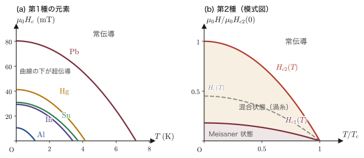
ところが，Nb や NbTi，Nb₃Sn などの合金・化合物は違う振る舞いをする．下部臨界磁場 $H_{c1}$ を超えると磁場が少しずつ侵入し始めるが，超伝導は壊れず，ずっと高い 上部臨界磁場 $H_{c2}$ まで残る（図37.3(b)）．$H_c$ で一気に常伝導に戻るものを 第1種超伝導体（type I），$H_{c1}$ と $H_{c2}$ の2つの臨界磁場をもつものを 第2種超伝導体（type II）という．NbTi の $\mu_0H_{c2}$ は約 $14\,\mathrm{T}$，Nb₃Sn は約 $30\,\mathrm{T}$ に達し，MRI や加速器の超伝導磁石はこれらで作られている．2種類がなぜ現れるかは，37.4 節で GL 理論の2つの長さの比として説明する．
例題37.2 液体ヘリウム温度での Pb の臨界磁場
Pb は $T_c=7.19\,\mathrm{K}$，$\mu_0H_c(0)=80.3\,\mathrm{mT}$ である．(1) 液体ヘリウムの沸点 $4.2\,\mathrm{K}$ での $\mu_0H_c$ を式 \eqref{eq:37-Hcpara} で求めよ．(2) その温度での凝縮エネルギー密度 $f_c$ を求めよ．(3) 半径 $1\,\mathrm{mm}$ の Pb の導線に電流 $I$ を流すと，表面の磁場は $B=\mu_0I/2\pi r$ である．超伝導が壊れない最大の電流（Silsbee の規則）を求めよ．
解答．(1) $T/T_c=4.2/7.19=0.5841$，$(T/T_c)^2=0.3412$ なので
$$ \mu_0H_c(4.2\,\mathrm{K})=80.3\,\mathrm{mT}\times(1-0.3412)=80.3\times0.6588\,\mathrm{mT}=52.9\,\mathrm{mT} $$(2) 式 \eqref{eq:37-Hc} より $f_c=B_c^2/2\mu_0$．
$$ f_c=\frac{(0.0529\,\mathrm{T})^2}{2\times1.2566\times10^{-6}\,\mathrm{N/A^2}}=\frac{2.798\times10^{-3}}{2.513\times10^{-6}}\,\mathrm{J/m^3}=1.11\times10^{3}\,\mathrm{J/m^3} $$(3) 表面の磁場が $B_c$ に達する電流は $I_c=2\pi rB_c/\mu_0$．
$$ I_c=\frac{2\pi\times(1.0\times10^{-3}\,\mathrm{m})\times0.0529\,\mathrm{T}}{1.2566\times10^{-6}\,\mathrm{N/A^2}}=\frac{3.324\times10^{-4}}{1.2566\times10^{-6}}\,\mathrm{A}=2.64\times10^{2}\,\mathrm{A} $$∎ 第1種超伝導体の導線には数百 A しか流せない．凝縮エネルギーは $1\,\mathrm{kJ/m^3}$ 程度で，1原子あたりにすると $10^{-7}\,\mathrm{eV}$ 程度ときわめて小さい（例題37.6）．超伝導磁石に第2種超伝導体が使われるのはこのためである．
37.1.4 比熱の跳びとエネルギーギャップ
超伝導転移では潜熱は出ないが，比熱は $T_c$ で不連続に跳ぶ（図37.21）．潜熱がなく比熱が跳ぶのは 2次相転移（第19章19.7節の Landau 理論の分類）の特徴である．さらに $T_c$ よりずっと低い温度では，電子比熱は常伝導の $C_n=\gamma_{\rm S}T$（第15章）のような $T$ に比例する形ではなく，
$$ C_s\propto\ee^{-\Delta/k_BT} $$のように指数関数的に小さくなる．これは，電子を励起するのに最低 $\Delta$ 程度のエネルギーが要る，すなわち Fermi 準位のまわりに エネルギーギャップ が開いていることを示す（半導体のキャリア数が $\ee^{-E_g/2k_BT}$ になるのと同じ理屈）．このギャップの起源を説明することが BCS 理論の中心の課題となる（37.6〜37.7 節）．
37.1.5 同位体効果
1950年，Maxwell と Reynolds らは，同じ元素でも重い同位体ほど $T_c$ が低いことを見つけた．Hg では同位体の平均質量 $M$ が $199.5$ から $203.4$ に増えると $T_c$ は $4.185\,\mathrm{K}$ から $4.146\,\mathrm{K}$ に下がり，
$$ T_c\propto M^{-\alpha},\qquad\alpha\approx\frac12 $$の関係が成り立つ．電子だけの性質なら原子核の質量は関係ないはずである．$T_c$ がイオンの質量に依存することは，格子振動（フォノン）が超伝導に関わっている 決定的な証拠となった．フォノンの振動数は $\omega\propto M^{-1/2}$ だから，$T_c\propto\omega_D$ なら $\alpha=1/2$ になる．なぜフォノンが電子どうしに引力を生むのかは第29章29.6節で詳しく学ぶ．本章では37.7節で BCS の $T_c$ の式が $\omega_D$ に比例することを導き，同位体効果を確かめる（例題37.17）．
37.1.6 磁束の量子化 — 電荷 $2e$ の担い手
F. London は1950年に，超伝導リングを貫く磁束は量子化されるはずだと予言していた．1961年，Deaver と Fairbank，Doll と Näbauer は独立に，細い円筒の超伝導体を貫く磁束が
の飛び飛びの値しかとらないことを測定した．London の予言では分母は $e$ であったが，実測は $2e$ であった．分母の電荷は，超伝導を担う粒子の電荷である．超伝導の担い手は電子2個の組（Cooper 対） であることが，この実験ではっきりした．$\Phi_0$ を 磁束量子（flux quantum）と呼ぶ．式 \eqref{eq:37-Phi0} は37.4.5項で導く．
37.1.7 トンネル分光で見るギャップ
1960年，Giaever（イェーヴァー）は，常伝導金属と超伝導体を厚さ数 nm の絶縁膜ではさんだ接合に電圧 $V$ をかけ，トンネル電流を測った．電圧が $e\abs{V}=\Delta$ に達するまで電流はほとんど流れず，$e\abs{V}=\Delta$ の直上で微分コンダクタンス $\dd I/\dd V$ が鋭いピークをもった（第23章23.5.7項）．これは比熱から推定したエネルギーギャップを，エネルギーの物差しで直接測ったものである．$\dd I/\dd V$ の形が超伝導体の状態密度そのものであることは37.7.6項で導く（図37.20）．
37.1.8 超伝導体の一覧と，転移温度の歴史
表37.1 に代表的な超伝導体をまとめる．元素の値は Kittel の教科書の表の値で，本書のシミュレーターと共通である．元素の $T_c$ でも測定によって少し違いがあり，最近の文献では Al $1.18\,\mathrm{K}$，Nb $9.25\,\mathrm{K}$ とされることが多い．図37.4 は，発見の年と $T_c$ の記録を並べたものである．
| 物質 | $T_c$ (K) | 発見 | 種別 | $\mu_0H_c(0)$ または $\mu_0H_{c2}(0)$ | $\Theta_D$ (K) | $2\Delta_0/k_BT_c$ |
|---|---|---|---|---|---|---|
| Al | 1.140 | 1933 | 第1種 | $H_c$：10.5 mT | 428 | 3.4 |
| In | 3.40 | 1928 | 第1種 | $H_c$：29.3 mT | 108 | 3.6 |
| Sn | 3.72 | 1913 | 第1種 | $H_c$：30.9 mT | 200 | 3.5 |
| Hg | 4.15 | 1911 | 第1種 | $H_c$：41.2 mT | 72 | 4.6 |
| Pb | 7.19 | 1913 | 第1種 | $H_c$：80.3 mT | 105 | 4.38 |
| Nb | 9.50 | 1930 | 第2種 | $H_c$：0.20 T，$H_{c2}$：約 0.4 T | 275 | 3.8 |
| NbTi（合金） | 約 9.5 | 1962 | 第2種 | $H_{c2}$：約 14 T | — | — |
| Nb₃Sn | 18 | 1954 | 第2種 | $H_{c2}$：約 30 T | — | — |
| MgB₂ | 39 | 2001 | 第2種 | （2つのギャップ） | — | — |
| YBa₂Cu₃O₇ | 約 92 | 1987 | 第2種 | $H_{c2}$：100 T 以上 | — | — |
| HgBa₂Ca₂Cu₃O₈₊δ | 約 134（常圧） 約 164（約 30 GPa） | 1993 | 第2種 | — | — | — |
| LaFeAsO₁₋ₓFₓ | 26 | 2008 | 第2種 | — | — | — |
| H₃S（約 150 GPa） | 約 200 | 2015 | 第2種 | — | — | — |
| LaH₁₀（約 170 GPa） | 約 250 | 2019 | 第2種 | — | — | — |
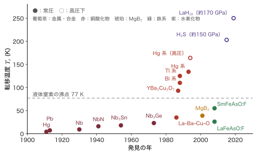
この節の事実のうち，ゼロ抵抗・Meissner 効果・臨界磁場・第1種と第2種・磁束の量子化は，主に現象論（37.2〜37.4節）で説明される．比熱の指数関数的な振る舞い・トンネル分光のギャップ・同位体効果・$2\Delta_0/k_BT_c$ の値は，微視的理論（37.5〜37.7節）で初めて説明される．対応を表37.2 にまとめておく．
| 実験事実 | 説明する理論 | 本章の節 |
|---|---|---|
| ゼロ抵抗・永久電流 | 巨視的波動関数の位相の硬さ | 37.3，37.4，37.9 |
| Meissner 効果，侵入長 | London 方程式，GL 方程式，Anderson–Higgs 機構 | 37.2，37.4，37.9 |
| 臨界磁場，比熱の跳び（2次転移） | GL 自由エネルギー | 37.3 |
| 第1種と第2種，渦糸 | GL の2つの長さ $\xi$ と $\lambda$ | 37.4 |
| 磁束の量子化 $h/2e$，Josephson 効果 | 巨視的波動関数の一価性と位相 | 37.4 |
| エネルギーギャップ，トンネル分光，低温の比熱 | BCS 理論の準粒子 | 37.6，37.7 |
| $T_c$ の値，$2\Delta_0/k_BT_c=3.53$，同位体効果 | BCS のギャップ方程式 | 37.7 |
37.2 London 方程式と磁場侵入長
1935年，F. London と H. London の兄弟は，Meissner 効果を表す方程式を現象論として書き下した．微視的な理由はわからないまま，「超伝導の電子は摩擦なしに加速される」ことと「磁場を排除する」ことを，Maxwell 方程式と組み合わせられる形にしたのである．その結果，磁場は表面から完全に0になるのではなく，ある長さ $\lambda_L$ だけしみ込んで指数関数的に減衰することが予言された．
37.2.1 2流体の考え
Gorter と Casimir（1934）にならい，超伝導体の伝導電子（密度 $n$）を，摩擦なしに流れる 超伝導電子（密度 $n_s$）と，ふつうの金属の電子のように散乱される 常伝導電子（密度 $n_n$）の2つの成分の混合物と考える：
$$ n=n_s(T)+n_n(T),\qquad n_s(T_c)=0,\qquad n_s(0)=n $$直流では超伝導電子が電場を完全に打ち消すように流れるので，常伝導電子には電場がかからず，常伝導電子は電流に寄与しない．したがって以下では超伝導電子の電流 $\bm j_s$ だけを考えればよい．ここでの「超伝導電子」は直感のための言葉であり，本当に一部の電子だけが特別なわけではない．微視的な意味は37.8節で明らかになる（$n_s$ は対の凝縮の振幅の2乗に比例する量である）．
37.2.2 第1 London 方程式 — 摩擦のない加速
超伝導電子（質量 $m$，電荷 $-e$，速度 $\bm v_s$）は散乱されないので，運動方程式は摩擦項のない Newton の式である：
$$ m\frac{\dd\bm v_s}{\dd t}=-e\EE $$電流密度は $\bm j_s=-en_s\bm v_s$ だから，両辺に $-en_s$ を掛けて $\bm j_s$ の式にすると
$$ -en_s\,m\frac{\dd\bm v_s}{\dd t}=(-en_s)(-e\EE) \qquad\Longrightarrow\qquad m\frac{\dd\bm j_s}{\dd t}=n_se^2\EE $$すなわち
これを 第1 London 方程式 という．直流で $\bm j_s$ が一定なら左辺は0なので $\EE=0$ となり，抵抗0が表される．ただし，37.1.2項で見たように，これだけでは完全導体と同じで，Meissner 効果は出てこない．
37.2.3 第2 London 方程式 — 磁場の排除
導出：完全導体の条件から第2 London 方程式へ
ステップ1：回転をとる．式 \eqref{eq:37-london1} の両辺の回転（$\nabla\times$）をとる．$n_s$ を一様とすると
$$ \frac{\partial}{\partial t}(\nabla\times\bm j_s)=\frac{n_se^2}{m}\nabla\times\EE $$ステップ2：Faraday の法則を使う．$\nabla\times\EE=-\partial\BB/\partial t$ を右辺に入れると
$$ \frac{\partial}{\partial t}(\nabla\times\bm j_s)=-\frac{n_se^2}{m}\frac{\partial\BB}{\partial t} \qquad\Longrightarrow\qquad \frac{\partial}{\partial t}\left[\nabla\times\bm j_s+\frac{n_se^2}{m}\BB\right]=0 $$ステップ3：完全導体と超伝導体の分かれ目．この式は「かっこの中が時間によらない」ことしか言わない．かっこの中が初期条件で決まる任意の値をとるのが完全導体である．London 兄弟は，超伝導体ではかっこの中が いつも0である と仮定した：
これが 第2 London 方程式 である．この仮定によって状態は履歴を忘れ，熱力学的な相になる．∎
37.2.4 磁場の侵入長 $\lambda_L$ の導出
導出：$\nabla^2\BB=\BB/\lambda_L^2$ と $\lambda_L=\sqrt{m/\mu_0n_se^2}$
ステップ1：Ampère の法則．静的な場合，Maxwell 方程式は $\nabla\times\BB=\mu_0\bm j_s$（変位電流は無視）．両辺の回転をとって式 \eqref{eq:37-london2} を代入すると
$$ \nabla\times(\nabla\times\BB)=\mu_0\nabla\times\bm j_s=-\frac{\mu_0n_se^2}{m}\BB $$ステップ2：ベクトル公式．$\nabla\times(\nabla\times\BB)=\nabla(\nabla\cdot\BB)-\nabla^2\BB$ で，$\nabla\cdot\BB=0$ だから左辺は $-\nabla^2\BB$．両辺の符号を変えて
ステップ3：半無限の超伝導体の解．$x\gt0$ が超伝導体，$x\lt0$ が真空で，表面に平行な外部磁場 $\BB=B_0\hat{\bm z}$ がかかっているとする．対称性から $\BB=B(x)\hat{\bm z}$ で，式 \eqref{eq:37-lambdaL} は
$$ \frac{\dd^2B}{\dd x^2}=\frac{B}{\lambda_L^2} $$一般解は $B(x)=C_1\ee^{-x/\lambda_L}+C_2\ee^{x/\lambda_L}$．$x\to\infty$ で発散しないために $C_2=0$，表面で磁場が連続であるために $B(0)=B_0$，すなわち $C_1=B_0$．よって
ステップ4：遮蔽電流．$\nabla\times\BB=\mu_0\bm j_s$ の $y$ 成分は $(\nabla\times\BB)_y=\partial B_x/\partial z-\partial B_z/\partial x=-\dd B/\dd x$ なので
$$ j_{s,y}(x)=-\frac{1}{\mu_0}\frac{\dd B}{\dd x}=\frac{B_0}{\mu_0\lambda_L}\ee^{-x/\lambda_L} $$電流も表面の厚さ $\lambda_L$ の層にだけ流れ，この電流の作る磁場が内部で外部磁場を打ち消す．∎
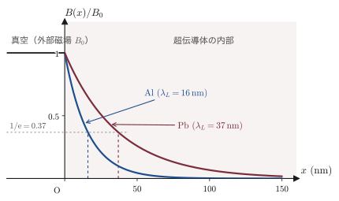
例題37.3 Al の London 侵入長
Al の伝導電子密度は自由電子模型で $n=18.1\times10^{22}\,\mathrm{cm^{-3}}$ である．$T=0$ ですべての伝導電子が超伝導電子（$n_s=n$）になるとして，$\lambda_L$ を求め，実測の約 $16\,\mathrm{nm}$ と比べよ．
解答．$n=18.1\times10^{22}\,\mathrm{cm^{-3}}=1.81\times10^{29}\,\mathrm{m^{-3}}$．式 \eqref{eq:37-lambdaL} の根号の中は
$$ \begin{aligned} \frac{m}{\mu_0ne^2}&=\frac{9.109\times10^{-31}}{(1.2566\times10^{-6})(1.81\times10^{29})(1.602\times10^{-19})^2}\,\mathrm{m^2}\\ &=\frac{9.109\times10^{-31}}{5.838\times10^{-15}}\,\mathrm{m^2}=1.560\times10^{-16}\,\mathrm{m^2} \end{aligned} $$よって $$\lambda_L=\sqrt{1.560\times10^{-16}}\,\mathrm{m}=1.25\times10^{-8}\,\mathrm{m}=12.5\,\mathrm{nm}$$．
∎ 実測の $16\,\mathrm{nm}$ と桁は一致する．差の一部は，実際の電子の有効質量が電子格子相互作用などで $m$ より重いこと（$\lambda_L\propto\sqrt{m^*}$）による．数十 nm という長さは，原子間隔の約100倍，光の波長の約 1/30 である．
例題37.4 Pb の内部の磁場と，侵入長の温度変化
(1) Pb（$\lambda_L(0)=37\,\mathrm{nm}$）の表面に平行に $B_0=10\,\mathrm{mT}$ をかけた．表面から $100\,\mathrm{nm}$，$200\,\mathrm{nm}$ の深さでの $B$ を求めよ．(2) 2流体模型で経験的に $n_s(T)=n[1-(T/T_c)^4]$ とおくと，$\lambda_L(T)$ はどう変わるか．$T=0.9T_c$ での $\lambda_L$ を求めよ．
解答．(1) 式 \eqref{eq:37-decay} より $$B(100\,\mathrm{nm})=10\,\mathrm{mT}\times\ee^{-100/37}=10\times\ee^{-2.703}\,\mathrm{mT}=10\times0.0670\,\mathrm{mT}=0.67\,\mathrm{mT}$$．$$B(200\,\mathrm{nm})=10\times\ee^{-5.405}\,\mathrm{mT}=10\times0.0045\,\mathrm{mT}=0.045\,\mathrm{mT}$$．
(2) $\lambda_L\propto n_s^{-1/2}$ だから
$$ \lambda_L(T)=\frac{\lambda_L(0)}{\sqrt{1-(T/T_c)^4}} $$$T=0.9T_c$ では $(0.9)^4=0.6561$，$1-0.6561=0.3439$，$\sqrt{0.3439}=0.5864$ なので $\lambda_L=37/0.5864\,\mathrm{nm}=63\,\mathrm{nm}$．
∎ 侵入長は $T_c$ に近づくと発散する（$n_s\to0$）．37.4節では GL 理論から $\lambda(T)\propto(1-T/T_c)^{-1/2}$ を導く．$1-t^4=(1-t)(1+t)(1+t^2)\approx4(1-t)$ なので，$T_c$ の近くでは2流体模型も同じ $-1/2$ 乗を与える．
37.2.5 London の洞察 — 波動関数が磁場に対して「硬い」
第2 London 方程式 \eqref{eq:37-london2} は，ベクトルポテンシャル $\bm A$（$\BB=\nabla\times\bm A$）を使うともっと簡潔に書ける．$\nabla\cdot\bm A=0$ で，試料の表面を横切る電流がないように $\bm A$ を選ぶ（London ゲージ）と
となる（両辺の回転をとれば式 \eqref{eq:37-london2} に戻る）．F. London はこの式の意味を量子力学で考えた．磁場中の電子（電荷 $-e$）の速度は，正準運動量 $\hat{\pp}=-i\hbar\nabla$ と
$$ m\bm v=\hat{\pp}+e\bm A $$の関係にある（第21章21.6.2項のハミルトニアン $(\hat{\pp}+e\bm A)^2/2m$ から）．ふつうの金属では，磁場をかけると波動関数が変形して $\langle\hat{\pp}\rangle$ が $-e\bm A$ を打ち消すように変わり，平均の速度はほとんど0のままになる（Landau 反磁性が小さいのはこのため）．ところが，もし基底状態の波動関数が磁場をかけても変形しない（硬い）なら，$\langle\hat{\pp}\rangle=0$ のままなので
$$ \langle\bm v\rangle=\frac{e}{m}\bm A,\qquad \bm j_s=-en_s\langle\bm v\rangle=-\frac{n_se^2}{m}\bm A $$となり，式 \eqref{eq:37-londonA} が出る．London は，超伝導状態とは 巨視的な数の電子が1つの「硬い」波動関数で記述される状態 だと考えた．この「試料全体で1つの波動関数」という考えを具体的な理論にしたのが，次節の Ginzburg–Landau 理論である．なぜ硬いのか（波動関数を変形させる励起にエネルギーギャップがあるから）は BCS 理論が答える．
37.3 Ginzburg–Landau 理論 I — 秩序変数（擬波動関数）と自由エネルギー
1950年，Ginzburg と Landau は，超伝導を「秩序変数をもつ相転移」として扱う理論を発表した．BCS 理論より7年早く，微視的な機構を知らないまま，対称性と熱力学だけ から組み立てた現象論である．それにもかかわらず，この理論は第2種超伝導体，渦糸，Josephson 効果，磁束の量子化など，超伝導の巨視的な性質のほとんどを正しく説明する．出発点は，超伝導状態を表す秩序変数として 複素数の関数 $\psi(\rr)$ を選んだことにある．この $\psi$ が何者なのかを，まず丁寧に考えよう．
37.3.1 Landau の相転移論の復習 — 秩序変数とは
第19章19.7節では強誘電体の分極 $P$ を，第20章20.7節では強磁性体の磁化 $M$ を扱った．どちらにも共通するのは次の構造である．
- 転移温度より上では0，下では有限になる量がある．これを 秩序変数（order parameter）と呼ぶ．
- 転移温度の近くでは秩序変数が小さいので，自由エネルギーを秩序変数の冪で展開できる：$F=F_0+aP^2+\frac{b}{2}P^4+\cdots$．
- 2次の係数 $a$ が転移温度で符号を変える（$a=a_0(T-T_c)$）．$a\lt0$ になると，$P=0$ より $P\ne0$ のほうが自由エネルギーが低くなる．
- 展開に現れる項は，系の対称性で制限される．$P\to-P$ で自由エネルギーが変わらないなら，奇数次の項は現れない．
Ginzburg と Landau は，この枠組みを超伝導に当てはめた．問題は「超伝導の秩序変数は何か」である．
37.3.2 擬波動関数 $\psi(\rr)$ とは何か
定義：超伝導の秩序変数（擬波動関数・巨視的波動関数）
超伝導状態を表す秩序変数は，空間の各点で定義された 複素数の関数
$$ \psi(\rr)=\abs{\psi(\rr)}\,\ee^{i\theta(\rr)} $$である．$T\gt T_c$ では $\psi=0$，$T\lt T_c$ では $\psi\ne0$．大きさの2乗 $\abs{\psi}^2$ は超伝導を担う対の密度に比例し（GL の規格化では $\abs{\psi}^2=n_s/2$，すなわち Cooper 対の密度），位相 $\theta$ の空間変化が超伝導電流を生む．$\psi$ を 擬波動関数（pseudo wave function）あるいは 巨視的波動関数（macroscopic wave function）と呼ぶ．
この定義の意味を4つの観点から説明する．
(i) 1個の電子の波動関数ではない．$\psi(\rr)$ は電子1個の存在確率振幅ではなく，Schrödinger 方程式の解として求めたものでもない．強誘電体の $P$，強磁性体の $M$ と同じく，Landau の相転移論の秩序変数 である．$P$ が「どれだけ分極がそろっているか」，$M$ が「どれだけスピンがそろっているか」を表すように，$\psi$ は「どれだけ超伝導の秩序が育っているか」を表す．$T_c$ より上で0，下で有限，という性質も同じである．「波動関数」という名前に引きずられて，1粒子の量子力学の規格化 $\int\abs{\psi}^2\dd^3r=1$ を当てはめてはいけない．$\abs{\psi}^2$ は密度（単位体積あたりの個数）の次元をもつように規格化する．
(ii) 複素数であることが本質である．$P$ や $M$ は実数（またはベクトル）だが，$\psi$ は複素数で，大きさ $\abs{\psi}$ と位相 $\theta$ の2つの情報をもつ．大きさの2乗 $\abs{\psi}^2$ は，超伝導を担う対（Cooper 対）の密度に比例する．位相 $\theta$ はそれ自体は観測できないが，位相の空間変化 $\nabla\theta$ は超伝導電流になる．37.4節で導く超伝導電流の式は，$\abs{\psi}$ が一様なら
$$ \bm j_s=\frac{e^*\hbar}{m^*}\abs{\psi}^2\left(\nabla\theta-\frac{e^*}{\hbar}\bm A\right) $$の形になる．1粒子の量子力学で，平面波 $\ee^{i\kk\cdot\rr}$ の位相の勾配 $\kk$ が運動量 $\hbar\kk$ を与えるのと同じ構造である．位相が試料全体でゆっくり回っていれば，その向きに電流が流れる（図37.6(b)）．
(iii) なぜ「波動関数」と呼ぶのか．超伝導状態では，巨視的な数（$1\,\mathrm{cm^3}$ あたり $10^{22}$ 個程度）の Cooper 対が，全員同じ1つの量子状態を占め，同じ位相をもつ．Fermi 粒子である電子は1つの状態に1個しか入れないが，2個が組んだ対はスピン0の Bose 粒子のように振る舞い，同じ状態にいくらでも入れる．ただし Cooper 対は互いに大きく重なり合っていて，厳密な意味の Bose 粒子ではない（37.5.5項の補足）．本質は「Bose 粒子であること」ではなく，「巨視的な数の対が位相のそろった1つの状態に凝縮していること」である．全員が同じ状態にいるなら，その共通の状態を1つの関数で書ける．それが $\psi(\rr)$ である．これは次のような現象と同じ仲間である：
- レーザー光：巨視的な数の光子が同じモードに入り，古典的な電磁波 $\mathcal{E}(\rr,t)=\abs{\mathcal{E}}\ee^{i\phi}$ として振る舞う．光子1個の波動関数ではなく，光子の凝縮した場の振幅である（第25章）．
- 超流動ヘリウム4：$2.17\,\mathrm{K}$ 以下で ⁴He 原子（Bose 粒子）が同じ状態に凝縮し，粘性なしに流れる．秩序変数は凝縮体の波動関数である．
- Bose–Einstein 凝縮：冷却原子気体（1995年に実現）では，凝縮体の波動関数が Gross–Pitaevskii 方程式で記述される．
微視的には，$\psi(\rr)$ は「その場所で ↑ スピンと ↓ スピンの電子の組を消す」振幅の期待値，すなわち 対の振幅 $\langle c_{-\kk\downarrow}c_{\kk\uparrow}\rangle$ を空間的に粗く見たものであり，BCS 理論のエネルギーギャップ $\Delta(\rr)$ に比例する．これは37.6節で定義し，37.8節で確かめる．
では $\psi(\rr)$ は「何の」関数か．ここで答えを先に言っておく（詳しい根拠は37.8.4項）．
- 引数 $\rr$ は Cooper 対の重心の位置 である．電子1個の位置ではない．対の中の2個の電子の相対的な運動（対の内部の構造．大きさは37.7.6項のコヒーレンス長 $\xi_0$，元素では $0.1$〜$1\,\mu\mathrm{m}$）は $\psi$ には現れず，$\psi$ が表すのは「重心が $\rr$ のあたりにある凝縮した対」の振幅だけである．したがって $\psi(\rr)$ は $\xi_0$ より長い距離でしか意味をもたない，ゆっくり変わる関数である．
- 値は「凝縮した対の場の振幅」 である．$N_p$ 個の対が全員同じ1つの重心運動の状態 $\varphi(\rr)$（$\int\abs{\varphi}^2\dd^3r=1$ に規格化した1対の波動関数）を占めているとすると，$\psi(\rr)=\sqrt{N_p}\,\varphi(\rr)$ と書ける．Bose–Einstein 凝縮の「凝縮体の波動関数」と同じ書き方である．
- そのため $\abs{\psi(\rr)}^2$ は点 $\rr$ での 対の数密度（$=n_s/2$）で，$\int\abs{\psi}^2\dd^3r=N_p$ は1ではなく 対の総数 になる．位相 $\theta(\rr)$ は全員に共通の位相である．
要するに $\psi$ は「1個の対の波動関数」と「凝縮体全体を表す古典的な場」の中間にある量で，1個の対の重心運動の波動関数を対の数の平方根だけ大きくしたもの，と考えればよい．
(iv) 位相がそろうことの帰結 — 巨視的な量子コヒーレンス．常伝導状態でも，ある瞬間に電子どうしがたまたま組をつくることはあるかもしれない．しかしそれぞれの組の位相がばらばらなら，足し合わせると打ち消して $\psi=0$ になる（図37.6(a)）．超伝導状態では位相が試料全体（cm の大きさ）でそろっている（図37.6(b)）．この 巨視的な量子コヒーレンス から次のことが出てくる．
- 磁束の量子化：リングを1周したとき $\psi$ は元の値に戻らなければならない（一価性）．位相は1周で $2\pi$ の整数倍しか変われない．これが $\Phi=n\Phi_0$ を与える（37.4.5項）．
- Josephson 効果：2つの超伝導体の $\psi$ の位相差 $\Delta\theta$ が，電流と電圧を決める（37.4.7項）．
- 永久電流：電流を止めるには，試料全体でそろった位相の巻き方を変えなければならない．局所的な散乱では位相の巻き数を変えられないので，電流は減らない．
なぜ：位相は観測できないのに，なぜ「位相がそろう」ことに意味があるのか
量子力学では，波動関数全体に定数の位相 $\ee^{i\alpha}$ を掛けても物理は変わらない．だから $\theta$ の値そのものは観測できない．観測できるのは 位相の差 である：場所による位相の差（$\nabla\theta$ が電流），2つの超伝導体の位相の差（Josephson 電流），1周したときの位相の差（磁束の量子化）．「位相がそろっている」とは，試料の離れた2点の位相の差が，時間がたってもランダムにならず決まった値を保つことを意味する．これは光の干渉で「コヒーレントな光源」が干渉縞を作るのと同じ意味の「そろう」である．
37.3.3 GL の自由エネルギー — なぜこの形か
Ginzburg と Landau は，超伝導状態の自由エネルギー密度を次のように書いた：
試料全体の自由エネルギーは $F=\int f\,\dd^3r$ である．各項の意味と，なぜこの形になるのかを順に説明する．
第1項 $f_n$：常伝導状態の自由エネルギー密度．$\psi=0$ のとき $f=f_n+B^2/2\mu_0$ に戻る．
第2・3項 $a\abs{\psi}^2+\frac b2\abs{\psi}^4$：一様な秩序の自由エネルギーを $\psi$ の冪で展開したもの．なぜ $\psi^2$ や $\psi^3$ ではなく $\abs{\psi}^2$ と $\abs{\psi}^4$ だけが現れるのか．それは，自由エネルギーが 位相の回転
$$ \psi\ \to\ \psi\,\ee^{i\alpha}\qquad(\alpha\ \text{は定数}) $$で変わってはならないからである．位相そのものは観測できないので（上の「なぜ」の箱），観測量である自由エネルギーは $\alpha$ によってはならない．この変換を U(1) 変換（大きさ1の複素数を掛ける変換）と呼ぶ．$\psi^2\to\psi^2\ee^{2i\alpha}$ は変わってしまうが，$\abs{\psi}^2=\psi^*\psi\to\psi^*\ee^{-i\alpha}\psi\ee^{i\alpha}=\abs{\psi}^2$ は変わらない．したがって許される項は $\abs{\psi}^2$ の冪だけである．微視的には，U(1) 対称性は 電子の数（電荷）の保存 に対応している（37.5.5項の補足）．$b\gt0$ でないと，$\abs{\psi}\to\infty$ で自由エネルギーが下がり続けて安定な状態がなくなる．$a$ は $T_c$ で符号を変えるように
とおく（$T_c$ の近くでの1次の展開）．
第4項 $\frac{1}{2m^*}\abs{(-i\hbar\nabla-e^*\bm A)\psi}^2$：$\psi$ が場所によって変化すると自由エネルギーが増える，という 勾配のエネルギー である．秩序変数が急に変わると損をするのは，強磁性体でスピンの向きが急に変わると交換エネルギーを損するのと同じである．形は量子力学の運動エネルギー $\hat{\pp}^2/2m$ をまねたもので，$m^*$ と $e^*$ は対の「有効質量」「有効電荷」である．Ginzburg と Landau はこれらを未定のパラメータとしたが，Gor'kov の微視的な導出（37.8節）で
$$ m^*=2m,\qquad e^*=2e $$と決まった．$\nabla$ の代わりに $\nabla-ie^*\bm A/\hbar$ という組合せが現れるのは，ゲージ不変性 のためである．ベクトルポテンシャルには $\bm A\to\bm A+\nabla\chi(\rr)$ の任意性があり（$\BB=\nabla\times\bm A$ は変わらない），物理はこの変換によってはならない．同時に $\psi\to\psi\,\ee^{ie^*\chi/\hbar}$ と変換すると
$$ \begin{aligned} &(-i\hbar\nabla-e^*\bm A-e^*\nabla\chi)\left(\psi\,\ee^{ie^*\chi/\hbar}\right)\\ &\quad=\ee^{ie^*\chi/\hbar}\left(-i\hbar\nabla\psi+e^*\nabla\chi\,\psi-e^*\bm A\psi-e^*\nabla\chi\,\psi\right)\\ &\quad=\ee^{ie^*\chi/\hbar}(-i\hbar\nabla-e^*\bm A)\psi \end{aligned} $$となり，絶対値の2乗は変わらない．場所ごとに異なる位相の回転（局所的な U(1) 変換）に対しても自由エネルギーが不変になるように，$\bm A$ が組み込まれているのである．
第5項 $B^2/2\mu_0$：磁場のエネルギー密度．
注意：対の電荷の符号
Cooper 対の電荷は本当は $-2e$ である．電荷 $q$ の粒子の運動エネルギーは $(\hat{\pp}-q\bm A)^2/2m^*$ なので，正しくは $(-i\hbar\nabla+2e\bm A)$ と書くべきである．本章では，シミュレーターの解説ページや多くの教科書と同じく，電荷の大きさ $e^*=2e$ を使って $(-i\hbar\nabla-e^*\bm A)$ と書く．これは $\psi$ を複素共役 $\psi^*$ に取り替える（あるいは $\bm A\to-\bm A$ とする）ことに相当し，$\xi$，$\lambda$，$\Phi_0=h/e^*$，$B_{c2}$ など，大きさで決まる結果は変わらない．電流の向きや磁束の向きの符号だけが反対になる．
37.3.4 一様な超伝導状態 — メキシコ帽
磁場がなく（$\bm A=0$，$B=0$），$\psi$ が一様（$\nabla\psi=0$）なら，式 \eqref{eq:37-GLf} は
$$ f-f_n=a\abs{\psi}^2+\frac b2\abs{\psi}^4 $$になる．$\abs{\psi}$ について最小にする．
導出：秩序変数の大きさと凝縮エネルギー
ステップ1．$x=\abs{\psi}^2\ge0$ とおくと $f-f_n=ax+\frac b2x^2$．$x$ で微分して0とおくと $a+bx=0$，すなわち $x=-a/b$．
ステップ2：$T\gt T_c$．$a\gt0$ なので $x=-a/b\lt0$ は許されない．$x\ge0$ の範囲では $f-f_n$ は $x$ の増加関数なので，最小は $x=0$，すなわち $\psi=0$（常伝導）．
ステップ3：$T\lt T_c$．$a\lt0$ なので最小は
（添字 $\infty$ は「試料の奥深く，境界の影響のないところの値」の意味）．$\abs{\psi_\infty}\propto(T_c-T)^{1/2}$ で，$T_c$ に向かって連続的に0になる．
ステップ4：凝縮エネルギー．代入すると
$$ f_s-f_n=a\left(-\frac ab\right)+\frac b2\left(-\frac ab\right)^2=-\frac{a^2}{b}+\frac{a^2}{2b}=-\frac{a^2}{2b} $$式 \eqref{eq:37-Hc} の定義 $\mu_0H_c^2/2=f_n-f_s$ と比べて
$T_c$ の近くで臨界磁場は $T_c-T$ に比例する．経験式 \eqref{eq:37-Hcpara} も $T_c$ の近くでは $$1-(T/T_c)^2=(1-T/T_c)(1+T/T_c)\approx2(1-T/T_c)$$ と1次になり，矛盾しない．∎
$f-f_n$ を複素平面 $(\mathrm{Re}\,\psi,\mathrm{Im}\,\psi)$ の上の高さとして描くと，図37.7 のようになる．$T\gt T_c$ では原点を底とする椀だが，$T\lt T_c$ では中央が盛り上がり，半径 $\abs{\psi_\infty}$ の円周に沿って溝ができる．形がつばの広い帽子に似ているので メキシコ帽（Mexican hat）ポテンシャルと呼ぶ．溝の底のどの点も同じエネルギーなのは，自由エネルギーが位相によらないからである．溝の底の円周は，位相 $\theta$ の自由度 そのものである．
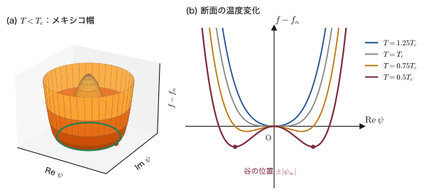
動かして確かめる：メキシコ帽が温度で椀に変わる様子
シミュレーターの「GL 自由エネルギー」のタブでは，元素（Al，Sn，Pb，Nb など）を選ぶと，実測の $T_c$，$H_c(0)$，$\lambda(0)$ から決めた係数 $a$，$b$ で GL の自由エネルギーが立体的に描かれる．温度のつまみを $T_c$ に近づけると帽子の縁が中心へ縮み，$T_c$ を超えると椀になる（図37.7 と式 \eqref{eq:37-psiinf}）．有効質量 $m^*$ や有効電荷 $e^*$ を変えると，37.4節で導く $\xi$，$\lambda$，$\kappa_{\rm GL}$ が変わるのも確かめられる．
37.3.5 比熱の跳び — 2次相転移としての超伝導
導出：GL 理論による比熱の跳び $\Delta C=T_ca_0^2/b$
ステップ1．$T\lt T_c$ では，式 \eqref{eq:37-aT} を凝縮エネルギーに入れて
$$ f_s-f_n=-\frac{a^2}{2b}=-\frac{a_0^2(T-T_c)^2}{2b} $$（図37.8(a)）．$T\gt T_c$ では $f_s=f_n$．
ステップ2：エントロピー．エントロピー密度は $s=-\partial f/\partial T$ なので
$$ s_s-s_n=-\frac{\partial}{\partial T}(f_s-f_n)=\frac{a_0^2\cdot2(T-T_c)}{2b}=\frac{a_0^2(T-T_c)}{b} $$$T\lt T_c$ では負で，超伝導状態のほうが秩序立っている（エントロピーが小さい）．$T=T_c$ で0になるので，エントロピーは連続であり 潜熱はない．
ステップ3：比熱．体積あたりの比熱は $c=T\,\partial s/\partial T$ なので
$$ c_s-c_n=T\frac{\partial}{\partial T}\frac{a_0^2(T-T_c)}{b}=\frac{Ta_0^2}{b} $$$T=T_c$ で，低温側から近づくと $c_s-c_n=T_ca_0^2/b$，高温側では0．比熱は
だけ不連続に跳ぶ．∎
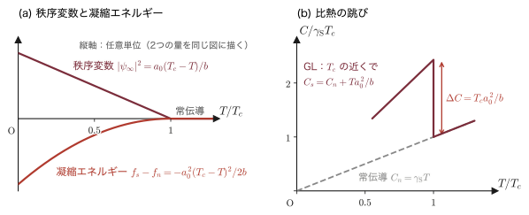
以上の結果は，第19章の強誘電体の Landau 理論（$g_4\gt0$ の2次転移）とまったく同じ構造をしている．表37.3 に並べておく．
| 強誘電体（第19章） | 強磁性体（第20章） | 超伝導（本章） | |
|---|---|---|---|
| 秩序変数 | 分極 $P$（実数） | 磁化 $\bm M$（ベクトル） | $\psi=\abs{\psi}\ee^{i\theta}$（複素数） |
| 自由エネルギーを変えない変換 | $P\to-P$ | $\bm M$ の回転 | $\psi\to\psi\ee^{i\alpha}$（U(1)） |
| 秩序の大きさ | $P^2\propto T_c-T$ | $M^2\propto T_c-T$ | $\abs{\psi}^2\propto T_c-T$ |
| 秩序と結びつく場 | 電場 $\EE$（$-\EE\cdot\bm P$） | 磁場（$-\mu_0\bm H\cdot\bm M$） | ベクトルポテンシャル $\bm A$（ゲージ場） |
| 比熱 | $T_c$ で跳ぶ | $T_c$ で跳ぶ（平均場） | $T_c$ で跳ぶ |
違いは「秩序変数と結びつく場」の行にある．$P$ は電場と，$M$ は磁場と1次の項で結びつき，外場で秩序変数の向きを選べる．$\psi$ に1次で結びつく外場は存在せず（そのような項は U(1) 対称性を破る），代わりに $\psi$ の位相の勾配がベクトルポテンシャルと組になって現れる．この違いが，超伝導に特有の Meissner 効果と Anderson–Higgs 機構（37.9節）を生む．
例題37.5 臨界磁場の傾きから比熱の跳びを求める（Rutgers の関係）
(1) 式 \eqref{eq:37-HcGL} と式 \eqref{eq:37-dCGL} から，比熱の跳びを臨界磁場の傾きで表す $\Delta c=\mu_0T_c\,(\dd H_c/\dd T)^2_{T=T_c}$ を導け．(2) Sn（$T_c=3.72\,\mathrm{K}$，$\mu_0H_c(0)=30.9\,\mathrm{mT}$）で，$H_c(T)$ を放物線則 \eqref{eq:37-Hcpara} として $\Delta c$ を求め，モル比熱に直せ（Sn のモル体積 $16.3\,\mathrm{cm^3/mol}$）．
解答．(1) 式 \eqref{eq:37-HcGL} より $H_c=a_0(T_c-T)/\sqrt{\mu_0b}$ なので $\dd H_c/\dd T=-a_0/\sqrt{\mu_0b}$．2乗して $\mu_0T_c$ を掛けると
$$ \mu_0T_c\left(\frac{\dd H_c}{\dd T}\right)^2=\mu_0T_c\frac{a_0^2}{\mu_0b}=\frac{T_ca_0^2}{b}=\Delta c $$(2) 放物線則では $\dd B_c/\dd T=-2B_c(0)T/T_c^2$ で，$T=T_c$ では $$-2B_c(0)/T_c=-2\times0.0309/3.72\,\mathrm{T/K}=-0.01661\,\mathrm{T/K}$$．$B_c=\mu_0H_c$ で書き直すと $\Delta c=T_c(\dd B_c/\dd T)^2/\mu_0$ なので
$$ \Delta c=\frac{3.72\times(0.01661)^2}{1.2566\times10^{-6}}\,\mathrm{J/(m^3\,K)}=\frac{1.0267\times10^{-3}}{1.2566\times10^{-6}}\,\mathrm{J/(m^3\,K)}=817\,\mathrm{J/(m^3\,K)} $$モル比熱では $$817\times16.3\times10^{-6}\,\mathrm{J/(mol\,K)}=1.33\times10^{-2}\,\mathrm{J/(mol\,K)}=13\,\mathrm{mJ/(mol\,K)}$$．
∎ 磁場の測定（$H_c(T)$）という力学的な量から，比熱という熱的な量が予言できる．この関係は GL 理論の細部によらない熱力学の関係（Rutgers の式）で，実測の比熱の跳び（$10\,\mathrm{mJ/(mol\,K)}$ の桁）とよく合う．放物線則は $T_c$ 付近の傾きを少し過大に見積もる．
例題37.6 1対あたりの凝縮エネルギー — 超伝導は「弱い」秩序
Pb の $T=0$ での凝縮エネルギー密度 $f_c=B_c(0)^2/2\mu_0$（$B_c(0)=80.3\,\mathrm{mT}$）を，(1) 原子1個あたり，(2) Cooper 対1個あたりのエネルギーに直せ．Pb の原子数密度は $3.30\times10^{28}\,\mathrm{m^{-3}}$，Cooper 対の密度は侵入長から $n_s/2=m^*/(\mu_0e^{*2}\lambda_L^2)$（$m^*=2m$，$e^*=2e$，$\lambda_L=37\,\mathrm{nm}$）と見積もる．
解答．$$f_c=(0.0803)^2/(2\times1.2566\times10^{-6})\,\mathrm{J/m^3}=6.448\times10^{-3}/2.513\times10^{-6}\,\mathrm{J/m^3}=2.57\times10^{3}\,\mathrm{J/m^3}$$．
(1) $$2.57\times10^3/3.30\times10^{28}\,\mathrm{J}=7.8\times10^{-26}\,\mathrm{J}=4.9\times10^{-7}\,\mathrm{eV}$$．
(2) 対の密度は
$$ \frac{n_s}{2}=\frac{2\times9.109\times10^{-31}}{1.2566\times10^{-6}\times(2\times1.602\times10^{-19})^2\times(37\times10^{-9})^2}\,\mathrm{m^{-3}}=1.03\times10^{28}\,\mathrm{m^{-3}} $$1対あたり $$2.57\times10^3/1.03\times10^{28}\,\mathrm{J}=2.5\times10^{-25}\,\mathrm{J}=1.6\,\mu\mathrm{eV}$$．
∎ Fermi エネルギー（Pb で約 $9\,\mathrm{eV}$）に比べて $10^{-7}$ 倍という小ささである．凝縮エネルギーが小さいのは，Fermi 面のごく近く（幅 $\Delta\sim1\,\mathrm{meV}$）の電子だけが得をするからで，37.7.6項で BCS 理論から $f_c=\frac12N(0)\Delta_0^2$ と導く（$N(0)$ が体積あたり $1/E_F$ 程度，$\Delta_0/E_F\sim10^{-4}$ なので $f_c/(nE_F)\sim10^{-8}$）．
37.4 Ginzburg–Landau 理論 II — GL 方程式，2 つの長さ，第1種と第2種
前節では $\psi$ が一様な場合だけを考えた．$\psi$ や磁場が場所によって変わるときに $\psi(\rr)$ と $\bm A(\rr)$ を決めるのが GL 方程式である．自由エネルギー $F=\int f\,\dd^3r$ を最小にする関数を求める問題（変分問題）として導く．そこから，超伝導を特徴づける2つの長さ —— $\psi$ が変化できる長さ $\xi(T)$ と，磁場がしみ込む長さ $\lambda(T)$ —— が自然に現れる．
37.4.1 変分による GL 方程式の導出
$\psi$ は複素数なので，実部と虚部の2つの独立な関数をもつ．これを $\psi$ と $\psi^*$ を独立とみなして変分するのが便利である（実部と虚部の組 $(\psi_1,\psi_2)$ と $(\psi,\psi^*)$ は1対1に対応する）．記号を簡単にするため $\bm D\equiv-i\hbar\nabla-e^*\bm A$ と書く．複素共役は $(\bm D\psi)^*=(i\hbar\nabla-e^*\bm A)\psi^*$ である．
導出1：$\psi^*$ についての変分 → 第1 GL 方程式
ステップ1：変化量．$\psi^*\to\psi^*+\delta\psi^*$ と変えたときの $F$ の変化の1次の部分を求める．$a\abs{\psi}^2=a\psi\psi^*$ の変化は $a\psi\,\delta\psi^*$．$\frac b2\abs{\psi}^4=\frac b2(\psi\psi^*)^2$ の変化は $\frac b2\cdot2(\psi\psi^*)\psi\,\delta\psi^*=b\abs{\psi}^2\psi\,\delta\psi^*$．勾配の項 $\frac{1}{2m^*}(\bm D\psi)\cdot(\bm D\psi)^*$ の変化は
$$ \frac{1}{2m^*}(\bm D\psi)\cdot\left(i\hbar\nabla\delta\psi^*-e^*\bm A\,\delta\psi^*\right) $$ステップ2：部分積分．$\nabla\delta\psi^*$ を含む項を体積で積分し，部分積分する：
$$ \int(\bm D\psi)\cdot i\hbar\nabla\delta\psi^*\,\dd^3r =\oint i\hbar\,\delta\psi^*\,(\bm D\psi)\cdot\dd\bm S-\int i\hbar\,\nabla\cdot(\bm D\psi)\,\delta\psi^*\,\dd^3r $$表面の項は，境界条件 $\hat{\bm n}\cdot\bm D\psi=0$（表面を横切って超伝導電流が流れ出さない，という GL の境界条件）で0になる．残りを合わせると，勾配の項の変化は
$$ \begin{aligned} &\frac{1}{2m^*}\int\left[-i\hbar\nabla\cdot(\bm D\psi)-e^*\bm A\cdot\bm D\psi\right]\delta\psi^*\,\dd^3r\\ &\quad=\frac{1}{2m^*}\int\left[(-i\hbar\nabla-e^*\bm A)\cdot\bm D\psi\right]\delta\psi^*\,\dd^3r\\ &\quad=\frac{1}{2m^*}\int(\bm D^2\psi)\,\delta\psi^*\,\dd^3r \end{aligned} $$ステップ3：停留条件．任意の $\delta\psi^*$ に対して $\delta F=0$ となるには，$\delta\psi^*$ の係数が各点で0でなければならない：
これが 第1 GL 方程式 である．非線形項 $b\abs{\psi}^2\psi$ を除けば，ポテンシャル $a$ の中の電荷 $e^*$・質量 $m^*$ の粒子の Schrödinger 方程式と同じ形をしている（固有値の役割を $-a$ がする）．これが $\psi$ を「波動関数」と呼びたくなるもう1つの理由である．$\psi$ についての変分は，この式の複素共役を与えるだけである．∎
導出2：$\bm A$ についての変分 → 超伝導電流の式
ステップ1：勾配の項の変化．$\bm A\to\bm A+\delta\bm A$ とすると $\bm D\psi\to\bm D\psi-e^*\delta\bm A\,\psi$，$(\bm D\psi)^*\to(\bm D\psi)^*-e^*\delta\bm A\,\psi^*$．1次の変化は
$$ \delta\abs{\bm D\psi}^2=-e^*\delta\bm A\cdot\left[\psi(\bm D\psi)^*+\psi^*(\bm D\psi)\right] $$かっこの中を書き下すと $\psi^*\bm D\psi=-i\hbar\psi^*\nabla\psi-e^*\bm A\abs{\psi}^2$，$\psi(\bm D\psi)^*=i\hbar\psi\nabla\psi^*-e^*\bm A\abs{\psi}^2$ なので
$$ \psi(\bm D\psi)^*+\psi^*(\bm D\psi)=-i\hbar\left(\psi^*\nabla\psi-\psi\nabla\psi^*\right)-2e^*\abs{\psi}^2\bm A $$よって勾配の項 $\frac{1}{2m^*}\abs{\bm D\psi}^2$ の変化は
$$ \delta\bm A\cdot\left[\frac{i\hbar e^*}{2m^*}\left(\psi^*\nabla\psi-\psi\nabla\psi^*\right)+\frac{e^{*2}}{m^*}\abs{\psi}^2\bm A\right] $$ステップ2：磁場の項の変化．$\BB=\nabla\times\bm A$ なので $\delta(B^2/2\mu_0)=\frac{1}{\mu_0}\BB\cdot(\nabla\times\delta\bm A)$．ベクトル公式 $\nabla\cdot(\delta\bm A\times\BB)=\BB\cdot(\nabla\times\delta\bm A)-\delta\bm A\cdot(\nabla\times\BB)$ を使って部分積分すると（遠方の表面の項は0），体積積分は $\frac1{\mu_0}\int\delta\bm A\cdot(\nabla\times\BB)\,\dd^3r$ になる．
ステップ3：停留条件．$\delta\bm A$ の係数を0とおくと
$$ \frac{1}{\mu_0}\nabla\times\BB=-\frac{i\hbar e^*}{2m^*}\left(\psi^*\nabla\psi-\psi\nabla\psi^*\right)-\frac{e^{*2}}{m^*}\abs{\psi}^2\bm A $$左辺は Ampère の法則 $\nabla\times\BB=\mu_0\bm j_s$ により電流密度である．$-i=1/i$ と書き直して
これが 第2 GL 方程式（超伝導電流の式）である．第1項は量子力学の確率の流れの式と同じ形，第2項はベクトルポテンシャルによる項である．∎
37.4.2 London 方程式への帰着と侵入長 $\lambda(T)$
$\psi=\abs{\psi}\ee^{i\theta}$ を式 \eqref{eq:37-GL2} に入れる．$\abs{\psi}$ が一様なら $\nabla\psi=i\nabla\theta\,\psi$，$\nabla\psi^*=-i\nabla\theta\,\psi^*$ なので $\psi^*\nabla\psi-\psi\nabla\psi^*=2i\abs{\psi}^2\nabla\theta$．したがって
位相の勾配とベクトルポテンシャルが $\frac{\hbar}{e^*}\nabla\theta-\bm A$ という組でしか現れないことに注意しよう（ゲージ変換で $\bm A\to\bm A+\nabla\chi$，$\theta\to\theta+e^*\chi/\hbar$ としても組は変わらない）．穴のない（単連結な）試料では，ゲージを選んで $\theta$ を一定にでき，
$$ \bm j_s=-\frac{e^{*2}\abs{\psi}^2}{m^*}\bm A $$となる．これは London 方程式 \eqref{eq:37-londonA} と同じ形で，対応は $n_se^2/m\leftrightarrow e^{*2}\abs{\psi}^2/m^*$ である．37.2.4項と同じ計算で $\nabla^2\BB=\BB/\lambda^2$，
（2つ目の等号は $\abs{\psi_\infty}^2=\abs a/b$）．$m^*=2m$，$e^*=2e$，$\abs{\psi}^2=n_s/2$ を入れると $$m^*/(\mu_0e^{*2}\abs\psi^2)=2m/(\mu_0\cdot4e^2\cdot n_s/2)=m/(\mu_0n_se^2)$$ で，London の $\lambda_L$ と一致する．GL 理論は London 理論を含み，さらに $n_s$ が場所や磁場で変わる場合まで扱えるのである．
37.4.3 コヒーレンス長 $\xi(T)$ — $\psi$ が回復する長さ
磁場のないところで，$\psi$ が場所によって変わる最も簡単な例を考える．$x\lt0$ が常伝導体（または絶縁体との境界の外），$x\gt0$ が超伝導体で，$x=0$ で $\psi=0$ に抑えられているとする（図37.9 の実線）．$\psi$ を実数にとってよく，$\bm A=0$ の1次元の第1 GL 方程式は
$$ -\frac{\hbar^2}{2m^*}\frac{\dd^2\psi}{\dd x^2}+a\psi+b\psi^3=0 $$である．
導出：$\tanh$ 解 $\psi(x)=\psi_\infty\tanh(x/\sqrt2\,\xi)$
ステップ1：無次元化．$T\lt T_c$ で $a=-\abs a$．$\psi=\psi_\infty g(x)$（$\psi_\infty^2=\abs a/b$）とおき，全体を $\abs a\psi_\infty$ で割ると
$$ -\frac{\hbar^2}{2m^*\abs a}\frac{\dd^2g}{\dd x^2}-g+g^3=0 $$係数を
で定義すると $\xi^2g''=-g+g^3$．$\xi(T)$ を GL の コヒーレンス長（coherence length）という．
ステップ2：1回積分する．両辺に $g'$ を掛けると，左辺は $\xi^2g''g'=\frac{\xi^2}{2}\frac{\dd}{\dd x}(g')^2$，右辺は $(-g+g^3)g'=\frac{\dd}{\dd x}\left(-\frac{g^2}{2}+\frac{g^4}{4}\right)$．$x$ で積分して
$$ \frac{\xi^2}{2}(g')^2=-\frac{g^2}{2}+\frac{g^4}{4}+C $$奥深く（$x\to\infty$）では $g\to1$，$g'\to0$ なので $0=-\frac12+\frac14+C$，すなわち $C=\frac14$．右辺は $\frac14(1-2g^2+g^4)=\frac14(1-g^2)^2$ になる．
ステップ3：変数分離．$g'\ge0$ の解をとって $g'=\dfrac{1-g^2}{\sqrt2\,\xi}$．$\dfrac{\dd g}{1-g^2}=\dfrac{\dd x}{\sqrt2\,\xi}$ を $g(0)=0$ から積分すると，$\int\dd g/(1-g^2)=\tanh^{-1}g$ より $\tanh^{-1}g=x/\sqrt2\,\xi$．よって
$$ \psi(x)=\psi_\infty\tanh\frac{x}{\sqrt2\,\xi(T)} $$∎ $\psi$ は境界から $\xi(T)$ 程度の距離で奥の値に回復する．$\xi$ は「秩序変数が変化できる最短の長さ」である．
$\xi(T)$ と $\lambda(T)$ は，どちらも $T_c$ で $(1-T/T_c)^{-1/2}$ のように発散する．したがってその比
は温度によらない（$\abs a$ が約分される．$$\lambda/\xi=\sqrt{m^*b/\mu_0e^{*2}\abs a}\cdot\sqrt{2m^*\abs a}/\hbar=\sqrt{2m^{*2}b/\mu_0e^{*2}\hbar^2}$$）．これを GL パラメータ という．また，$\lambda\xi$ の積を作ると $\abs a$ と $b$ が組み合わさって臨界磁場が出てくる：
$$ \lambda\xi=\sqrt{\frac{m^*b}{\mu_0e^{*2}\abs a}}\cdot\frac{\hbar}{\sqrt{2m^*\abs a}}=\frac{\hbar\sqrt b}{e^*\abs a\sqrt{2\mu_0}} \qquad\Longrightarrow\qquad \frac{\Phi_0}{2\sqrt2\,\pi\lambda\xi}=\frac{2\pi\hbar}{e^*}\cdot\frac{e^*\abs a\sqrt{2\mu_0}}{2\sqrt2\,\pi\hbar\sqrt b}=\abs a\sqrt{\frac{\mu_0}{b}} $$右辺は式 \eqref{eq:37-HcGL} の $\mu_0H_c$ に等しい（$\Phi_0=h/e^*=2\pi\hbar/e^*$）．すなわち
超伝導体の3つの基本量 $H_c$，$\lambda$，$\xi$ のうち2つを測れば，残りが決まる．
37.4.4 界面エネルギーの符号 — 第1種と第2種
常伝導の領域（磁場 $B_c=\mu_0H_c$ が入っている）と超伝導の領域（磁場なし）が平らな界面で接している状況を考える（図37.9）．臨界磁場ではちょうど両者の自由エネルギーが等しいので，界面を作るときの損得は界面のまわりだけで決まる．
- 損：超伝導側では，界面から $\xi$ 程度の範囲で $\psi$ が小さく，凝縮エネルギー $\mu_0H_c^2/2$ を取り損ねる．単位面積あたり約 $\frac{\mu_0H_c^2}{2}\xi$．
- 得：超伝導側でも，界面から $\lambda$ 程度の範囲には磁場が入っているので，磁場を押し出す仕事 $\mu_0H_c^2/2$ をしなくて済む．単位面積あたり約 $\frac{\mu_0H_c^2}{2}\lambda$．
差し引きの界面エネルギー（単位面積あたり）は大まかに
$$ \sigma_{ns}\approx\frac{\mu_0H_c^2}{2}(\xi-\lambda) $$となる．$\xi\gt\lambda$ なら $\sigma_{ns}\gt0$ で，界面はなるべく少ないほうがよい．超伝導体は磁場を完全に排除するか，全体が常伝導になるかのどちらかを選ぶ．これが 第1種 である．$\lambda\gt\xi$ なら $\sigma_{ns}\lt0$ で，界面を作るほど得をする．磁場の中では，超伝導体はできるだけ多くの界面を作ろうとして，細い常伝導の糸（渦糸）を大量に内部に入れる．これが 第2種 である．GL 方程式を数値的に正確に解くと，$\sigma_{ns}$ の符号が変わるのはちょうど
のときである（Abrikosov 1957）．$\kappa_{\rm GL}\lt1/\sqrt2$ が第1種，$\kappa_{\rm GL}\gt1/\sqrt2$ が第2種である．
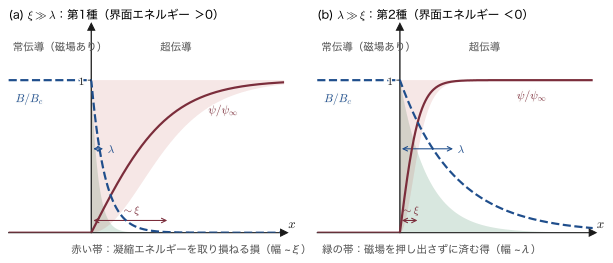
例題37.7 $\kappa_{\rm GL}$ から第1種・第2種を判定する
低温での侵入長とコヒーレンス長の目安は次のとおりである（GL のコヒーレンス長 $\xi_{\rm GL}(0)$ は式 \eqref{eq:37-HcPhi0} を $T=0$ まで外挿して $H_c(0)$ と $\lambda(0)$ から求めたもの）．Al：$\lambda=16\,\mathrm{nm}$，$\xi_{\rm GL}=1.4\,\mu\mathrm{m}$．Pb：$\lambda=37\,\mathrm{nm}$，$\xi_{\rm GL}=78\,\mathrm{nm}$．Nb：$\lambda=39\,\mathrm{nm}$，$\xi_{\rm GL}=30\,\mathrm{nm}$．Nb₃Sn：$\lambda\approx80\,\mathrm{nm}$，$\xi_{\rm GL}\approx3.3\,\mathrm{nm}$．それぞれの $\kappa_{\rm GL}$ を求め，種別を判定せよ．
解答．Al：$16/1400=0.011$．Pb：$37/78=0.47$．Nb：$39/30=1.3$．Nb₃Sn：$80/3.3=24$．$1/\sqrt2=0.707$ と比べると，Al と Pb は第1種，Nb と Nb₃Sn は第2種である．
∎ 純粋な元素はほとんどが第1種で，Nb（と V，テクネチウム）が例外である．合金や化合物では電子の平均自由行程が短く，コヒーレンス長が短くなるので（$\xi$ は「対が広がれる距離」で，散乱で切られる），$\kappa_{\rm GL}$ が大きくなって第2種になる．実用の線材がすべて合金・化合物なのはこのためである．
37.4.5 磁束の量子化の導出
導出：$\Phi=n\Phi_0$，$\Phi_0=h/e^*=h/2e$
ステップ1：厚いリングの内部では電流が0．超伝導体のリング（壁の厚さが $\lambda$ よりずっと大きい）を考える．壁の内部の深いところでは，Meissner 効果により磁場も電流も0である．
ステップ2：電流0の条件．式 \eqref{eq:37-jtheta} で $\bm j_s=0$，$\abs{\psi}\ne0$ なので
$$ \hbar\nabla\theta=e^*\bm A $$ステップ3：リングを1周する積分．壁の深いところを通る閉じた経路 $C$ で両辺を線積分する．右辺は Stokes の定理により
$$ \oint_C e^*\bm A\cdot\dd\bm l=e^*\int_S(\nabla\times\bm A)\cdot\dd\bm S=e^*\Phi $$（$\Phi$ は経路が囲む磁束）．左辺は1周したときの位相の変化 $\hbar\oint\nabla\theta\cdot\dd\bm l=\hbar\,\Delta\theta_{\text{1周}}$ である．
ステップ4：一価性．$\psi=\abs\psi\ee^{i\theta}$ は場所の関数として一価でなければならない（同じ点に戻ったら同じ値）．位相は $2\pi$ の整数倍の不定性しかもてないので $\Delta\theta_{\text{1周}}=2\pi n$（$n$ は整数）．よって $\hbar\cdot2\pi n=e^*\Phi$，すなわち
$$ \Phi=n\frac{2\pi\hbar}{e^*}=n\frac{h}{e^*}=n\frac{h}{2e}=n\Phi_0 $$∎ 磁束の量子化は，巨視的波動関数の 一価性 と 位相の剛性 の直接の帰結である．1961年の実験が $h/2e$ を示したことは，$e^*=2e$ を確定させた．
リングの壁が薄い場合や，$\lambda$ の層に電流が流れている場合には，量子化されるのは磁束 $\Phi$ そのものではなく，$\Phi+\frac{m^*}{e^{*2}\abs\psi^2}\oint\bm j_s\cdot\dd\bm l$（フラクソイド，fluxoid）である（式 \eqref{eq:37-jtheta} をそのまま1周積分すればわかる）．
37.4.6 渦糸と上部臨界磁場 $B_{c2}$
第2種超伝導体に $H_{c1}$ より強い磁場をかけると，磁束は1本ずつ $\Phi_0$ の単位で 渦糸（vortex）として入り込む（図37.10）．1本の渦糸の中心では $\psi=0$ で，そのまわりを $\psi$ の位相が $2\pi$ 回る（巻き数1）．中心で $\psi$ が0なのは，位相が $2\pi$ 回る点で $\psi$ が有限だと，位相が定まらず $\psi$ が連続にならないからである．$\psi$ は中心から $\xi$ 程度の距離で回復し（渦糸の 芯），そのまわりを超伝導電流が $\lambda$ 程度の範囲で周回して，磁束 $\Phi_0$ を閉じ込める（図37.11）．芯の半径 $\xi$ が磁場の広がり $\lambda$ より小さいことが，渦糸が安定に存在できる条件で，これがまさに第2種（$\kappa_{\rm GL}\gt1/\sqrt2$）の条件である．
渦糸どうしは反発し合い，規則正しい三角格子を作る（Abrikosov 格子．1957年に Abrikosov が GL 方程式から予言し，1967年に磁性微粒子を振りかけて電子顕微鏡で観察する方法で確かめられた）．磁場 $B$ のもとで渦糸1本あたりの面積は $\Phi_0/B$ なので，渦糸の間隔は $B$ が大きいほど狭くなる．
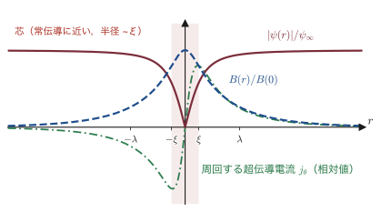
磁場を強くしていくと渦糸の間隔が縮まり，芯（半径 $\xi$）どうしが重なるところで超伝導は消える．これが上部臨界磁場 $H_{c2}$ である．その値は GL 方程式から正確に求められる．
導出：$B_{c2}=\mu_0H_{c2}=\Phi_0/2\pi\xi^2$
ステップ1：線形化．$H_{c2}$ の直下では $\psi$ はいたるところで小さいので，第1 GL 方程式 \eqref{eq:37-GL1} の $b\abs\psi^2\psi$ を落とせる．また $\psi$ が小さいと遮蔽電流も小さく，内部の磁場は外部磁場 $B$ に等しい一様な磁場とみなせる．$a=-\abs a$ として
$$ \frac{1}{2m^*}\left(-i\hbar\nabla-e^*\bm A\right)^2\psi=\abs{a}\,\psi $$ステップ2：Landau 準位との対応．これは一様な磁場 $B$ 中の質量 $m^*$，電荷 $e^*$ の粒子の Schrödinger 方程式で，エネルギー固有値が $\abs a$ の形をしている．第21章21.6.3項で導いたように，その固有値は Landau 準位
$$ \varepsilon_n=\left(n+\frac12\right)\hbar\omega_c+\frac{\hbar^2k_z^2}{2m^*},\qquad\omega_c=\frac{e^*B}{m^*} $$である．
ステップ3：解が存在する条件．$\psi\ne0$ の解（超伝導の芽）が存在するには，$\abs a$ が固有値のどれかに等しくなければならない．$B$ を大きくすると固有値はすべて上がるので，超伝導が最後まで残る最大の $B$ は，最低の固有値（$n=0$，$k_z=0$）が $\abs a$ に等しくなるときである：
$$ \frac12\hbar\frac{e^*B_{c2}}{m^*}=\abs a \qquad\Longrightarrow\qquad B_{c2}=\frac{2m^*\abs a}{\hbar e^*} $$ステップ4：$\xi$ で書く．式 \eqref{eq:37-xiGL} より $2m^*\abs a=\hbar^2/\xi^2$ なので $B_{c2}=\hbar/(e^*\xi^2)$．$\Phi_0=2\pi\hbar/e^*$ を使えば
∎ 半径 $\xi$ の円（面積 $\pi\xi^2$）あたりにほぼ磁束量子1本分（正確には半分）が入るまで超伝導が残る，と読める．式 \eqref{eq:37-HcPhi0} と組み合わせると $H_{c2}=\sqrt2\,\kappa_{\rm GL}H_c$ も得られ，$\kappa_{\rm GL}\gt1/\sqrt2$ のとき $H_{c2}\gt H_c$ となって，第2種の振る舞いと矛盾なくつながる．
下部臨界磁場は，渦糸1本を入れるエネルギー（芯の凝縮エネルギーの損と周回電流の運動エネルギー）と，磁束 $\Phi_0$ が入ることによる磁気エネルギーの得が釣り合う磁場で，$\kappa_{\rm GL}\gg1$ では結果だけ書くと $\mu_0H_{c1}\approx\dfrac{\Phi_0}{4\pi\lambda^2}\ln\kappa_{\rm GL}$ となる．$\lambda$ が大きいほど小さく，Nb₃Sn（$\lambda\approx80\,\mathrm{nm}$，$\kappa_{\rm GL}\approx24$）では約 $0.08\,\mathrm{T}$ と，$H_{c2}$ の数百分の1である．磁化曲線（図37.12）の下の面積はどちらの種類でも凝縮エネルギー $\mu_0H_c^2/2$ に等しい．
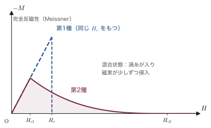
例題37.8 磁束量子と渦糸の間隔
(1) $\Phi_0=h/2e$ の値を計算せよ．(2) 磁場 $B=1\,\mathrm{T}$ のもとでの渦糸の三角格子の間隔 $a_\triangle$ を求めよ（正三角形の格子では1本あたりの面積が $\frac{\sqrt3}{2}a_\triangle^2$）．(3) MRI の磁場 $3\,\mathrm{T}$ を作る NbTi 線の中で，$1\,\mathrm{mm^2}$ あたり何本の渦糸があるか．
解答．(1) $$\Phi_0=6.62607\times10^{-34}/(2\times1.602177\times10^{-19})\,\mathrm{Wb}=2.0678\times10^{-15}\,\mathrm{Wb}$$．
(2) 1本あたりの面積 $\Phi_0/B$ を $\frac{\sqrt3}{2}a_\triangle^2$ と等置して
$$ a_\triangle=\sqrt{\frac{2\Phi_0}{\sqrt3\,B}}=\sqrt{\frac{2\times2.0678\times10^{-15}}{1.7321\times1}}\,\mathrm{m}=\sqrt{2.388\times10^{-15}}\,\mathrm{m}=4.89\times10^{-8}\,\mathrm{m}=49\,\mathrm{nm} $$(3) $$B/\Phi_0=3/2.0678\times10^{-15}\,\mathrm{m^{-2}}=1.45\times10^{15}\,\mathrm{m^{-2}}=1.45\times10^{9}\,\mathrm{mm^{-2}}$$．
∎ 1 T の磁場では渦糸は約 50 nm 間隔で並び，$1\,\mathrm{mm^2}$ に $10^9$ 本もある．実用の線材では，渦糸が電流から力（Lorentz 力）を受けて動くとエネルギーが失われる（抵抗が生じる）ので，析出物などの欠陥で渦糸を「ピン止め」する工夫がされている．
例題37.9 上部臨界磁場からコヒーレンス長を求める
$T\to0$ に外挿した上部臨界磁場は，Nb₃Sn で約 $30\,\mathrm{T}$，NbTi で約 $14.5\,\mathrm{T}$，純粋な Nb で約 $0.4\,\mathrm{T}$ である．式 \eqref{eq:37-Bc2} からそれぞれの $\xi$ を見積もれ．
解答．$\xi=\sqrt{\Phi_0/2\pi B_{c2}}$．Nb₃Sn：$$\sqrt{2.0678\times10^{-15}/(2\pi\times30)}\,\mathrm{m}=\sqrt{1.097\times10^{-17}}\,\mathrm{m}=3.3\,\mathrm{nm}$$．NbTi：$\sqrt{2.0678\times10^{-15}/(2\pi\times14.5)}\,\mathrm{m}=4.8\,\mathrm{nm}$．Nb：$\sqrt{2.0678\times10^{-15}/(2\pi\times0.4)}\,\mathrm{m}=29\,\mathrm{nm}$．
∎ 高い $B_{c2}$ は短いコヒーレンス長の裏返しである．Nb の $29\,\mathrm{nm}$ は例題37.7 の $\xi_{\rm GL}(0)=30\,\mathrm{nm}$ と一致する．Nb₃Sn の数 nm は格子定数の10倍程度で，Cooper 対はかなり小さい．
37.4.7 Josephson 効果
2つの超伝導体を薄い絶縁膜（厚さ 1〜2 nm）で隔てた接合（Josephson 接合）を考える．それぞれの超伝導体は巨視的波動関数 $\psi_1=\sqrt{n_1}\ee^{i\theta_1}$，$\psi_2=\sqrt{n_2}\ee^{i\theta_2}$ で表される（$n_j$ は対の密度）．絶縁膜が薄いと，対はトンネル効果で膜を通り抜けられる．1962年，大学院生の Josephson は，このとき 電圧をかけなくても位相差に応じた超伝導電流が流れる ことを予言した．Feynman にならい，2準位系の結合方程式として導く．
導出：$I=I_c\sin\delta$ と $\dd\delta/\dd t=2eV/\hbar$
ステップ1：結合方程式．この項に限り $V$ は電圧を表す．超伝導体 $j$ にいる対のエネルギーを $E_j$，膜を通した結合の強さを $K\,(\gt0)$ とすると，2つの振幅の時間発展は2準位系と同じ形
$$ i\hbar\frac{\partial\psi_1}{\partial t}=E_1\psi_1+K\psi_2,\qquad i\hbar\frac{\partial\psi_2}{\partial t}=E_2\psi_2+K\psi_1 $$で書ける．電圧 $V$ がかかっていると，電荷 $2e$ の大きさの対のエネルギー差は $E_1-E_2=2eV$ である（電圧の向きをそのようにとる）．
ステップ2：大きさと位相に分ける．$\psi_1=\sqrt{n_1}\ee^{i\theta_1}$ を時間で微分すると $\dot\psi_1=\left(\dfrac{\dot n_1}{2n_1}+i\dot\theta_1\right)\psi_1$．第1式に代入し，両辺を $\psi_1$ で割ると
$$ i\hbar\left(\frac{\dot n_1}{2n_1}+i\dot\theta_1\right)=E_1+K\sqrt{\frac{n_2}{n_1}}\,\ee^{i\delta},\qquad\delta\equiv\theta_2-\theta_1 $$ステップ3：実部と虚部．左辺は $i\hbar\dot n_1/2n_1-\hbar\dot\theta_1$．右辺は $E_1+K\sqrt{n_2/n_1}(\cos\delta+i\sin\delta)$．虚部どうし，実部どうしを等しいとおくと
$$ \frac{\hbar\dot n_1}{2n_1}=K\sqrt{\frac{n_2}{n_1}}\sin\delta \quad\Longrightarrow\quad \dot n_1=\frac{2K}{\hbar}\sqrt{n_1n_2}\,\sin\delta, \qquad -\hbar\dot\theta_1=E_1+K\sqrt{\frac{n_2}{n_1}}\cos\delta $$第2式についても同じ計算（添字 $1\leftrightarrow2$，$\delta\to-\delta$）で
$$ \dot n_2=-\frac{2K}{\hbar}\sqrt{n_1n_2}\,\sin\delta, \qquad -\hbar\dot\theta_2=E_2+K\sqrt{\frac{n_1}{n_2}}\cos\delta $$ステップ4：電流．$\dot n_1=-\dot n_2$ は対が膜を通って移る速さで，それに対の電荷を掛けたものが膜を流れる電流である（電源につながった回路が $n_j$ を一定に保つので，実際に密度が変わるわけではない）．接合の面積なども含めて定数をまとめると
$I_c$ は臨界電流（膜を通して流せる最大の超伝導電流）である．
ステップ5：位相差の時間変化．$n_1=n_2$ とすると，ステップ3の2つの位相の式の差から $\cos\delta$ の項が消え，
$$ -\hbar(\dot\theta_2-\dot\theta_1)=E_2-E_1 \quad\Longrightarrow\quad \hbar\dot\delta=E_1-E_2=2eV $$∎
式 \eqref{eq:37-jos1} と \eqref{eq:37-jos2} から2つの効果が出る．
- 直流 Josephson 効果：$V=0$ でも，位相差 $\delta$ が一定なら直流の超伝導電流 $I_c\sin\delta$ が流れる．電圧0で流れる電流の大きさが，2つの巨視的波動関数の位相差で決まる．
- 交流 Josephson 効果：直流電圧 $V$ をかけると $\delta=\delta_0+2eVt/\hbar$ と位相差が回転し，電流 $I_c\sin(\delta_0+2eVt/\hbar)$ は周波数
で振動する．周波数と電圧が基礎定数 $2e/h$ だけでつながっているので，周波数（原子時計で極めて正確に測れる）から電圧を決められる．マイクロ波を当てた接合を数万個直列にした Josephson 電圧標準 が，1990年以来，世界の電圧の基準になっている（2019年からの SI では $K_J=2e/h$ は定義値）．
Josephson 接合を2つ並列にしてリングにしたものを SQUID（superconducting quantum interference device）という（図37.13(b)）．リングを貫く磁束 $\Phi$ があると，2つの接合の位相差が $2\pi\Phi/\Phi_0$ だけずれるので（37.4.5項と同じ1周積分），2つの経路の電流が干渉し，流せる最大の電流が $\abs{\cos(\pi\Phi/\Phi_0)}$ に比例して $\Phi_0$ 周期で振動する．$\Phi_0$ の一部の変化を検出できるので，$10^{-14}\,\mathrm{T}$ 程度の微弱な磁場（脳の活動が作る磁場など）まで測れる．Josephson 接合は，非線形のインダクタンスとして 超伝導量子ビット の心臓部にも使われている．
例題37.10 Josephson 周波数と電圧標準
(1) $2e/h$ を GHz/mV の単位で求めよ．(2) $10\,\mathrm{GHz}$ のマイクロ波に対応する電圧はいくらか．(3) 周波数 $f$ のマイクロ波を当てた接合には，$V_n=nhf/2e$（$n$ は整数）の電圧の段（Shapiro ステップ）が現れる．$f=70\,\mathrm{GHz}$，$n=1$ の段を使って $10\,\mathrm{V}$ を作るには，接合を何個直列にすればよいか．
解答．(1) $$2e/h=2\times1.602177\times10^{-19}/6.62607\times10^{-34}\,\mathrm{Hz/V}=4.8360\times10^{14}\,\mathrm{Hz/V}=483.6\,\mathrm{GHz/mV}$$．
(2) $$V=hf/2e=10\times10^9/4.8360\times10^{14}\,\mathrm{V}=2.068\times10^{-5}\,\mathrm{V}=20.7\,\mu\mathrm{V}$$．
(3) 1個あたり $70\times10^9/4.8360\times10^{14}\,\mathrm{V}=1.447\times10^{-4}\,\mathrm{V}$．$10\,\mathrm{V}/1.447\times10^{-4}\,\mathrm{V}=6.9\times10^4$ 個．
∎ 数万個の接合を1枚のチップに作ることで，10 V の電圧が周波数の精度（10 桁以上）で得られる．巨視的波動関数の位相という量子力学の性質が，日常の電気計測の基準を支えている．
37.5 BCS 理論 I — 対のハミルトニアンと BCS 基底状態
ここから微視的な理論に入る．目標は，前節までの現象論の秩序変数 $\psi$ の正体を電子の言葉で明らかにし，エネルギーギャップと転移温度を計算することである．出発点は第29章で学ぶ2つの結果である．
37.5.1 第29章からの出発点 — 引力と Cooper 対
第29章29.6節で見るように，電子がフォノンを放出し別の電子がそれを吸収する過程は，2電子の間のエネルギーのやり取りがフォノンのエネルギーより小さいとき（$\abs{\xi_\kk-\xi_{\kk'}}\lesssim\hbar\omega_D$），遮蔽された Coulomb 斥力に打ち勝つ 引力 を生む．同位体効果はその証拠であった．そして29.7節の Cooper 問題は，Fermi 面から $\hbar\omega_D$ 以内で働く一定の引力 $-V$ のもとで，詰まった Fermi 球の上の2個の電子 $(\kk\uparrow,-\kk\downarrow)$ が，どんなに弱い引力でも束縛状態
$$ \varepsilon\simeq-2\hbar\omega_D\,\ee^{-2/N(0)V} $$を作ることを示した．$N(0)$ と $V$ の約束は第29章と同じ にする：$N(0)$ は Fermi 準位での1スピンあたり・結晶全体の状態密度（単位 1/エネルギー），$V\gt0$ は対を散乱する行列要素の大きさで，結晶の体積 $\mathcal V$ の逆数 $1/\mathcal V$ を含む．したがって $N(0)V$ は体積によらない無次元数である（単位体積あたりの状態密度 $N(0)/\mathcal V$ と $V\mathcal V$ の積と言っても同じ）．
Cooper 問題の結論は，「Fermi 球は引力に対して不安定で，電子は次々と対を作ろうとする」ことであった．しかし1対の計算では，他の電子は Fermi 球の中で状態を塞ぐだけの役割に置かれていた．Fermi 面の近くの すべての電子が同時に対を作る とき，系はどんな状態に落ち着くか．これに答えたのが1957年の Bardeen，Cooper，Schrieffer の理論である．
37.5.2 道具の確認 — 生成・消滅演算子
多数の電子を扱うには，第27章27.4節で導入した生成・消滅演算子を使う．要点を言い直しておく．
- $c^\dagger_{\kk\sigma}$ は波数 $\kk$，スピン $\sigma$ の状態に電子を1個入れる（生成する）演算子，$c_{\kk\sigma}$ はそこから電子を1個取り除く（消滅させる）演算子である．$\ket{0}$ は電子が1個もいない状態（真空）を表す．
- $n_{\kk\sigma}=c^\dagger_{\kk\sigma}c_{\kk\sigma}$ は状態 $(\kk\sigma)$ の電子の数（0 か 1）を数える．
- 電子は Fermi 粒子なので，反交換関係 $\{c_{\kk\sigma},c^\dagger_{\kk'\sigma'}\}\equiv c_{\kk\sigma}c^\dagger_{\kk'\sigma'}+c^\dagger_{\kk'\sigma'}c_{\kk\sigma}=\delta_{\kk\kk'}\delta_{\sigma\sigma'}$，$\{c,c\}=\{c^\dagger,c^\dagger\}=0$ を満たす．とくに $(c^\dagger_{\kk\sigma})^2=0$（同じ状態に2個は入れない：Pauli 原理），$c_{\kk\sigma}c^\dagger_{\kk\sigma}=1-n_{\kk\sigma}$．順序を入れ替えると符号が変わる：$c^\dagger_{\kk\uparrow}c^\dagger_{-\kk\downarrow}=-c^\dagger_{-\kk\downarrow}c^\dagger_{\kk\uparrow}$．
- $c^\dagger_{\kk\uparrow}c^\dagger_{-\kk\downarrow}$ は「対 $(\kk\uparrow,-\kk\downarrow)$ を1組作る」演算子，その Hermite 共役 $c_{-\kk\downarrow}c_{\kk\uparrow}$ は「対を1組消す」演算子である．本章では対を消す演算子を
と書く（GL の係数 $b$ と区別するため帽子を付ける）．$(\hat b_\kk)^\dagger$ を作るときは，積の Hermite 共役が順序を逆にすること $(AB)^\dagger=B^\dagger A^\dagger$ を使った．
37.5.3 対のハミルトニアン（還元ハミルトニアン）
BCS は，超伝導に本質的な相互作用だけを残した次のハミルトニアンを考えた：
相互作用の和は $\abs{\xi_\kk}\lt\hbar\omega_D$ かつ $\abs{\xi_{\kk'}}\lt\hbar\omega_D$ の範囲に限る．これを 還元ハミルトニアン（reduced Hamiltonian）あるいは BCS ハミルトニアンという．
- 第1項：電子の運動エネルギー．$\xi_\kk=E(\kk)-\mu$ は化学ポテンシャル $\mu$（$T=0$ では $E_F$）から測った1電子エネルギーである．化学ポテンシャルから測るのは，粒子数が確定しない状態（37.5.4項）を扱うためで，$H-\mu N$ を最小にすることに相当する．
- 第2項：右から読む．$\hat b_{\kk'}=c_{-\kk'\downarrow}c_{\kk'\uparrow}$ で対 $(\kk'\uparrow,-\kk'\downarrow)$ を消し，$\hat b^\dagger_\kk$ で対 $(\kk\uparrow,-\kk\downarrow)$ を作る．すなわち 対の散乱 である（図37.14）．フォノンの交換で，重心運動量0の対が別の重心運動量0の対に移る．係数 $-V\lt0$ が引力を表す．
電子間の相互作用には他にも多くの項（重心運動量が0でない対の散乱，スピンが平行な電子の散乱など）があるが，それらは常伝導状態にもあって Fermi 液体の準粒子の性質を少し変えるだけである．超伝導を生むのは重心運動量0・スピン一重項の対の散乱だけ，という判断が BCS の模型の要点である（29.7.4項で見たように，この組合せが引力を最も有効に使う）．
37.5.4 BCS の基底状態
BCS は，ハミルトニアン \eqref{eq:37-HBCS} の基底状態として次の形の状態を提案した：
積は対の状態 $(\kk\uparrow,-\kk\downarrow)$ のすべてについてとる．読み方は次のとおりである．
- 各 $\kk$ について，対の状態 $(\kk\uparrow,-\kk\downarrow)$ は 空である振幅 $u_\kk$ と 対で占有されている振幅 $v_\kk$ の重ね合わせになっている．対で占有されている確率は $\abs{v_\kk}^2$，空の確率は $\abs{u_\kk}^2$．
- $\kk\uparrow$ だけが占有され $-\kk\downarrow$ が空，という状態は含まれていない．電子は必ず対で出入りする．
- 異なる $\kk$ の因子は独立に掛け合わされている．どの対の状態も，他の対の状態と同じ規則で「半分空・半分占有」の重ね合わせになっている．
- 規格化：各因子について $$\langle0|(u^*+v^*\hat b_\kk)(u+v\hat b^\dagger_\kk)|0\rangle=\abs u^2+\abs v^2\langle0|\hat b_\kk\hat b^\dagger_\kk|0\rangle=\abs u^2+\abs v^2=1$$（$\langle0|\hat b_\kk|0\rangle=0$，$\hat b_\kk\hat b^\dagger_\kk\ket0=\ket0$ を使った）．
極限の場合を見よう．$\abs{\kk}\lt k_F$ で $v_\kk=1$，$u_\kk=0$，$\abs{\kk}\gt k_F$ で $v_\kk=0$，$u_\kk=1$ とすると，$\ket{\Psi_{\rm BCS}}$ は Fermi 球をすべて対で詰めた状態，すなわち常伝導の基底状態になる．超伝導状態では，Fermi 面の近くで $v_\kk$ が1から0へなだらかに変わる．37.6節で導く結果を先に示すと
$$ \abs{v_\kk}^2=\frac12\left(1-\frac{\xi_\kk}{E_\kk}\right),\qquad \abs{u_\kk}^2=\frac12\left(1+\frac{\xi_\kk}{E_\kk}\right),\qquad E_\kk=\sqrt{\xi_\kk^2+\Delta^2} $$である（図37.15）．$\abs{v_\kk}^2$ は，温度0でも Fermi 分布の段が幅 $\sim2\Delta$ だけなまった形 をしている．Fermi 面のすぐ下の状態をわずかに空け，すぐ上の状態をわずかに占有することで，対の散乱 $-V\hat b^\dagger_\kk\hat b_{\kk'}$ が働ける「空きと占有の重ね合わせ」が Fermi 面のまわりに作られる．運動エネルギーは少し損をするが，対の散乱によるエネルギーの得がそれを上回る．$u_\kk$ と $v_\kk$ がどちらも無視できない大きさをもつ（積 $u_\kk v_\kk$ が大きい）$\kk$ は，Fermi 面から $\abs{\xi_\kk}\lesssim\Delta$ 程度の範囲に限られる．それより外では，ほぼ確実に占有（$v_\kk\approx1$）かほぼ確実に空（$u_\kk\approx1$）で，常伝導の Fermi 球と変わらない．
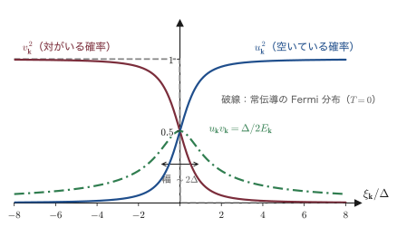
37.5.5 粒子数が確定しない状態 — 「同じ位相」の微視的な表現
$\ket{\Psi_{\rm BCS}}$ を展開すると，積の各因子から $u_\kk$ か $v_\kk c^\dagger c^\dagger$ のどちらかを選んだ項の和になる．$v$ を $M$ 個選んだ項は電子を $2M$ 個含むので，$\ket{\Psi_{\rm BCS}}$ は 電子数 $0,2,4,\ldots$ の状態の重ね合わせ であり，電子数が確定していない．
例題37.11 BCS 状態の電子数とそのゆらぎ
(1) $\ket{\Psi_{\rm BCS}}$ での電子数の期待値が $\langle N\rangle=\sum_\kk2\abs{v_\kk}^2$ であることを示せ．(2) ゆらぎが $\langle N^2\rangle-\langle N\rangle^2=\sum_\kk4\abs{u_\kk}^2\abs{v_\kk}^2$ であることを示せ．(3) $\abs{u_\kk v_\kk}=\Delta/2E_\kk$ を使い，和を積分 $N(0)\int\dd\xi$ に直して，ゆらぎの大きさを $N(0)\Delta$ で表せ．$\langle N\rangle$ との比はどの程度か．
解答．(1) 各 $\kk$ の対は独立なので，対 $\kk$ に属する電子数 $N_\kk=n_{\kk\uparrow}+n_{-\kk\downarrow}$ を考えればよい．因子 $(u+vc^\dagger c^\dagger)\ket0$ は，確率 $\abs u^2$ で $N_\kk=0$，確率 $\abs v^2$ で $N_\kk=2$ の状態である．よって $\langle N_\kk\rangle=2\abs v^2$，全体は $\langle N\rangle=\sum_\kk2\abs{v_\kk}^2$．
(2) $\langle N_\kk^2\rangle=0^2\abs u^2+2^2\abs v^2=4\abs v^2$ なので，対 $\kk$ の分散は $4\abs v^2-(2\abs v^2)^2=4\abs v^2(1-\abs v^2)=4\abs u^2\abs v^2$．異なる $\kk$ は独立なので分散は足し算になり，$\sum_\kk4\abs{u_\kk}^2\abs{v_\kk}^2$．
(3) $4\abs{u_\kk v_\kk}^2=\Delta^2/E_\kk^2=\Delta^2/(\xi_\kk^2+\Delta^2)$．和を $N(0)\int_{-\infty}^{\infty}\dd\xi$ に直すと（被積分関数は $\abs\xi\gg\Delta$ で速く減るので積分範囲を無限に広げてよい）
$$ \langle\delta N^2\rangle=N(0)\int_{-\infty}^{\infty}\frac{\Delta^2\,\dd\xi}{\xi^2+\Delta^2}=N(0)\Delta\Bigl[\tan^{-1}\frac{\xi}{\Delta}\Bigr]_{-\infty}^{\infty}=\pi N(0)\Delta $$$\langle N\rangle\sim N(0)E_F$ 程度なので，相対的なゆらぎは $\sqrt{\pi N(0)\Delta}/N(0)E_F\sim\sqrt{\Delta/E_F}/\sqrt{\langle N\rangle}$ で，巨視的な試料（$\langle N\rangle\sim10^{22}$）では $10^{-13}$ 程度にすぎない．
∎ 電子数は確定していないが，そのゆらぎは巨視的な系では無視できるほど小さい．それでも「確定していない」ことには本質的な意味がある（次の段落）．
なぜ粒子数の確定しない状態を考えるのか．$v_\kk$ を $\Delta$ の位相 $\phi$ を含めて $v_\kk=\abs{v_\kk}\ee^{i\phi}$ と書く．状態 $\ket{\Psi_\phi}=\prod_\kk(\abs{u_\kk}+\abs{v_\kk}\ee^{i\phi}c^\dagger_{\kk\uparrow}c^\dagger_{-\kk\downarrow})\ket0$ を展開すると，電子数 $N=2M$ の成分には $\ee^{iM\phi}=\ee^{iN\phi/2}$ が掛かる：
$$ \ket{\Psi_\phi}=\sum_N\ee^{iN\phi/2}\,\ket{\Psi_N} $$（$\ket{\Psi_N}$ は電子数 $N$ の成分）．これは，位置と運動量の関係と同じく，位相 $\phi$ と粒子数 $N$ が Fourier 変換で結ばれた共役な量 であることを示している．位相が確定した状態 $\ket{\Psi_\phi}$ では粒子数がゆらぎ，逆に粒子数が確定した状態 $\ket{\Psi_N}=\int_0^{2\pi}\frac{\dd\phi}{2\pi}\ee^{-iN\phi/2}\ket{\Psi_\phi}$ では位相がまったく定まらない（不確定性関係 $\Delta N\,\Delta\phi\gtrsim1$）．
$\ket{\Psi_\phi}$ では すべての $\kk$ の対が同じ位相 $\phi$ をもっている．これこそが，37.3節で「巨視的な数の Cooper 対が全員同じ位相をもつ」と言ったことの微視的な表現である．位相がそろう代わりに粒子数がゆらぐ．巨視的な系では粒子数のゆらぎは相対的に無視できるので，位相が確定した状態として扱っても実際上の不都合はない．Josephson 効果は，2つの超伝導体の間で対が行き来できる（それぞれの粒子数がゆらげる）からこそ，位相差 $\delta$ が意味をもって電流を決めるのである．
補足：U(1) 対称性と電荷の保存
ハミルトニアン \eqref{eq:37-HBCS} は，すべての電子の演算子に同じ位相を掛ける変換 $c_{\kk\sigma}\to\ee^{i\alpha}c_{\kk\sigma}$（$c^\dagger\to\ee^{-i\alpha}c^\dagger$）で変わらない．各項に $c^\dagger$ と $c$ が同じ数ずつ含まれているからで，これは電子数（電荷）が保存することと同じ意味である．ところが $\ket{\Psi_\phi}$ はこの変換で $\ket{\Psi_{\phi-2\alpha}}$ に変わる（$c^\dagger c^\dagger\to\ee^{-2i\alpha}c^\dagger c^\dagger$）．ハミルトニアンは対称なのに，基底状態は特定の位相を選んで対称性を破っている．これが37.3.3項の U(1) 対称性の破れの微視的な姿であり，37.9節の主題になる．$\psi\to\psi\ee^{2i\alpha}$ のように位相が2倍で回るのは，$\psi$ が電子2個の演算子の期待値だからである．
補足：Cooper 対は Bose 粒子か
電子2個の組はスピン0で，Bose 粒子のように同じ状態にいくらでも入れるように見える．実際 $\ket{\Psi_N}$ は，すべての対が同じ対の波動関数 $g(\rr_1-\rr_2)$ を占める状態（を反対称化したもの）として書ける．しかし対の大きさ $\xi_0$（$0.1$〜$1\,\mu\mathrm{m}$）の中には $10^6$ 個以上の他の対が入り込んでおり，対は互いに大きく重なっている（第29章29.7.4項）．対を独立な Bose 粒子とみなす描像は定量的には成り立たず，「Fermi 面の近くの電子が対の相関をもって凝縮した状態」と見るのが正確である．対の実空間の波動関数は，シミュレーター「Cooper 対の波動関数」で見られる（BCS から BEC への移り変わりは37.10節）．
37.6 BCS 理論 II — 平均場近似とギャップ方程式
BCS ハミルトニアン \eqref{eq:37-HBCS} の第2項は演算子4個の積で，このままでは厳密に解けない．BCS 理論の核心は，これを 平均場近似 で演算子2個の積（2次形式）に直し，厳密に対角化できる形にすることである．この節では，平均場への分解，Bogoliubov 変換による対角化，ギャップ方程式の導出までを1行も飛ばさずに行う．
37.6.1 平均場近似の考え方 — Weiss の分子場との類比
第20章20.7節の Weiss の分子場理論を思い出そう．スピンどうしの相互作用 $-2J\bm S_i\cdot\bm S_j$ は，そのままでは多体問題である．Weiss は，スピン $i$ が感じる相手のスピン $\bm S_j$ を，その平均値 $\langle\bm S_j\rangle$（磁化に比例）で置き換えた．すると各スピンは「平均の磁化が作る有効磁場（分子場）」の中の独立なスピンになり，1個のスピンの問題として解ける．ただし分子場は答えの磁化そのものに比例するので，「仮定した磁化から計算した磁化が，仮定した値に一致する」という 自己無撞着の条件 で磁化を決める．
超伝導の平均場近似も同じ発想である．対の散乱 $\hat b^\dagger_\kk\hat b_{\kk'}$ のうち，片方の対の演算子をその平均値（凝縮した対の振幅）で置き換える．すると各電子の対は「凝縮体が作る平均の場 $\Delta$」の中で独立に振る舞い，1つの $\kk$ ごとの $2\times2$ の問題になる．$\Delta$ は答えの対の振幅に比例するので，自己無撞着の条件で決める．それがギャップ方程式である（図37.16）．
37.6.2 平均場への分解
導出1：演算子の積の平均場分解
ステップ1：平均とゆらぎに分ける．2つの演算子 $\hat A$，$\hat B$ を，それぞれの平均値（期待値，ただの数）とそこからのずれ（ゆらぎ）に分ける：
$$ \hat A=\langle\hat A\rangle+\delta\hat A,\qquad\hat B=\langle\hat B\rangle+\delta\hat B $$ステップ2：積を展開する．
$$ \hat A\hat B=\langle\hat A\rangle\langle\hat B\rangle+\langle\hat A\rangle\,\delta\hat B+\delta\hat A\,\langle\hat B\rangle+\delta\hat A\,\delta\hat B $$ステップ3：ゆらぎの2次を落とす．ゆらぎが平均に比べて小さいとして，最後の $\delta\hat A\,\delta\hat B$ を無視する．残りに $\delta\hat B=\hat B-\langle\hat B\rangle$，$\delta\hat A=\hat A-\langle\hat A\rangle$ を戻すと
$$ \hat A\hat B\approx\langle\hat A\rangle\langle\hat B\rangle+\langle\hat A\rangle(\hat B-\langle\hat B\rangle)+(\hat A-\langle\hat A\rangle)\langle\hat B\rangle $$落とした項は正確に $\hat A\hat B-(\text{右辺})=\delta\hat A\,\delta\hat B$ である．最後の $-\langle\hat A\rangle\langle\hat B\rangle$ は，平均値どうしの積を2回数えたのを1回分戻す定数である．∎
ステップ1〜3では $\hat A$ と $\hat B$ の順序を一度も入れ替えていない（$\delta\hat A\,\delta\hat B$ の順のまま）．したがって式 \eqref{eq:37-MFdecomp} は，$\hat A$ と $\hat B$ が交換しない演算子であっても成り立つ．
ステップ4：BCS の相互作用に当てはめる．$\hat A=\hat b^\dagger_\kk$，$\hat B=\hat b_{\kk'}$ とおく．期待値について $\langle\hat b^\dagger_\kk\rangle=\langle\hat b_\kk\rangle^*$ が成り立つ（一般に $\langle\Psi|\hat O^\dagger|\Psi\rangle=\langle\Psi|\hat O|\Psi\rangle^*$）．対の演算子のゆらぎは，巨視的な数の対が同じ状態に凝縮しているとき，平均値に比べて小さいと期待される．1つの $\hat b_{\kk'}$ のゆらぎそのものは小さくないが，相互作用では $\hat b_{\kk'}$ が多数の $\kk'$ について足し合わされ（$\sum_{\kk'}\hat b_{\kk'}$），独立なゆらぎが互いに打ち消し合うので，和の相対的なゆらぎは小さくなる．
$$ \hat b^\dagger_\kk\hat b_{\kk'}\approx\langle\hat b^\dagger_\kk\rangle\hat b_{\kk'}+\hat b^\dagger_\kk\langle\hat b_{\kk'}\rangle-\langle\hat b^\dagger_\kk\rangle\langle\hat b_{\kk'}\rangle $$ここで注意すべきことがある．電子数が確定した状態では $\langle\hat b_\kk\rangle=\langle c_{-\kk\downarrow}c_{\kk\uparrow}\rangle$ は必ず0である（電子を2個消すと電子数が2減り，元の状態と直交するから）．$\langle\hat b_\kk\rangle\ne0$ を許すことは，37.5.5項の粒子数の確定しない（位相の確定した）状態を考えることにほかならない．これが平均場近似の「仮定」の中身であり，その仮定が自己無撞着に満たされる（$\langle\hat b_\kk\rangle\ne0$ の解がある）かどうかを以下で調べる．
37.6.3 ギャップの定義と平均場ハミルトニアン
定義：ギャップ関数（超伝導の微視的な秩序変数）
和は $\abs{\xi_\kk}\lt\hbar\omega_D$ の範囲．$\Delta$ はエネルギーの次元をもつ複素数で，常伝導では0，超伝導では有限である．37.8節で見るように，GL の $\psi$ は $\Delta$ に比例する．
導出2：平均場ハミルトニアン
ステップ1．導出1のステップ4の分解を相互作用 $-V\sum_{\kk\kk'}\hat b^\dagger_\kk\hat b_{\kk'}$ に入れ，$\kk$ と $\kk'$ の和を項ごとに実行する．
$$ -V\sum_{\kk\kk'}\hat b^\dagger_\kk\hat b_{\kk'} \approx-\Bigl(V\sum_\kk\langle\hat b^\dagger_\kk\rangle\Bigr)\sum_{\kk'}\hat b_{\kk'} -\sum_\kk\hat b^\dagger_\kk\Bigl(V\sum_{\kk'}\langle\hat b_{\kk'}\rangle\Bigr) +V\sum_\kk\langle\hat b^\dagger_\kk\rangle\sum_{\kk'}\langle\hat b_{\kk'}\rangle $$ステップ2．かっこの中を定義 \eqref{eq:37-Deltadef} で書き換える：第1項のかっこは $\Delta^*$，第2項のかっこは $\Delta$，第3項は $V\cdot(\Delta^*/V)(\Delta/V)=\abs\Delta^2/V$．和の変数の名前を $\kk$ にそろえると
$$ -V\sum_{\kk\kk'}\hat b^\dagger_\kk\hat b_{\kk'}\approx-\sum_\kk\left(\Delta\,\hat b^\dagger_\kk+\Delta^*\hat b_\kk\right)+\frac{\abs\Delta^2}{V} $$ステップ3．運動エネルギーの項と合わせて，平均場ハミルトニアン
を得る．∎ 4個の演算子の積が消え，演算子2個の積だけになった．第2項は「凝縮体から対を1組取り出して $(\kk\uparrow,-\kk\downarrow)$ に入れる（$\Delta\,c^\dagger c^\dagger$）」と「対を凝縮体に戻す（$\Delta^*cc$）」過程で，電子数を2だけ変える．$\Delta$ は凝縮体が対を出し入れする「場」の強さである．
和の範囲について．相互作用は $\abs{\xi_\kk}\lt\hbar\omega_D$ の殻の中だけで働くので，第2項の $\Delta$ を含む和（と $\Delta$ の定義の和）は殻の中の $\kk$ だけについてとる．殻の外の電子には $\Delta$ の項が無く，第1項の $\xi_\kk n_{\kk\sigma}$ だけが残る自由な電子である．以下の Bogoliubov 変換も殻の中の $\kk$ についてだけ行い，殻の外では $\gamma=c$ のまま（$\Delta=0$ とおいた式で $u_\kk=1,v_\kk=0$ か $u_\kk=0,v_\kk=1$ に当たる）とする．式 \eqref{eq:37-Nambu} や \eqref{eq:37-HMFdiag} の定数項の和も殻の中だけである（殻の外の寄与は常伝導状態と同じなので，超伝導と常伝導のエネルギーの差には効かない）．
例題37.12 平均場分解の練習 — Weiss の分子場と比べる
(1) Heisenberg 模型の1つの結合 $-2J\hat S^z_i\hat S^z_j$ を式 \eqref{eq:37-MFdecomp} で分解し，$\langle\hat S^z\rangle=m$（どのサイトも同じ）として，スピン $i$ に働く分子場を求めよ．(2) 式 \eqref{eq:37-MFdecomp} で落とした項の期待値 $\langle\delta\hat A\,\delta\hat B\rangle$ が，平均場近似の状態で $\langle\hat A\hat B\rangle-\langle\hat A\rangle\langle\hat B\rangle$（相関）に等しいことを示し，平均場近似が「何を無視しているか」を述べよ．
解答．(1) $\hat A=\hat S^z_i$，$\hat B=\hat S^z_j$ として
$$ -2J\hat S^z_i\hat S^z_j\approx-2J\left(m\hat S^z_j+\hat S^z_im-m^2\right) $$スピン $i$ に関わる部分は $-2Jm\hat S^z_i$ で，これは磁場 $\propto2Jm$ の中の1個のスピンの Zeeman エネルギーの形である．これが分子場で，平均の磁化 $m$ に比例する．超伝導では $\hat S^z_i\to\hat b^\dagger_\kk$，$m\to\Delta/V$ と置き換わり，分子場 $2Jm$ に当たるのが $\Delta$ である．
(2) $$\langle\delta\hat A\,\delta\hat B\rangle=\langle(\hat A-\langle\hat A\rangle)(\hat B-\langle\hat B\rangle)\rangle=\langle\hat A\hat B\rangle-\langle\hat A\rangle\langle\hat B\rangle-\langle\hat A\rangle\langle\hat B\rangle+\langle\hat A\rangle\langle\hat B\rangle=\langle\hat A\hat B\rangle-\langle\hat A\rangle\langle\hat B\rangle$$．
∎ 平均場近似は，2つの量の 相関（平均からのずれどうしの関係）を無視する近似である．相関が重要になるのは，ゆらぎの大きい転移温度のごく近くや低次元の系である．超伝導では対の大きさ $\xi_0$ が大きく，1つの対の範囲に非常に多くの対が入っているので，ゆらぎが平均化されて平均場近似がきわめてよく成り立つ（ゆらぎが効くのは $T_c$ のごく近く，元素超伝導体では相対的な幅がおよそ $(k_BT_c/E_F)^4$ 程度の，実験では見えないほど狭い温度範囲だけである）．
37.6.4 $2\times2$ 行列の形に書く
$H_{\rm MF}$ では，$\kk\uparrow$ の電子と $-\kk\downarrow$ の電子だけが互いに結びついている．そこで各 $\kk$ について，2成分の演算子の組（南部スピノル）
$$ \Psi_\kk=\begin{pmatrix}c_{\kk\uparrow}\\ c^\dagger_{-\kk\downarrow}\end{pmatrix},\qquad \Psi_\kk^\dagger=\begin{pmatrix}c^\dagger_{\kk\uparrow} & c_{-\kk\downarrow}\end{pmatrix} $$を作る．第2成分が 消滅演算子ではなく生成演算子 であることに注意する．$-\kk\downarrow$ の電子を生成することは，そこから正孔を消すことと同じなので，$\Psi_\kk$ は「$\kk\uparrow$ の電子」と「$-\kk\downarrow$ の正孔」を並べたものである．
導出3：$H_{\rm MF}=\sum_\kk\Psi_\kk^\dagger h_\kk\Psi_\kk+\text{定数}$
ステップ1：行列の積を計算する．$h_\kk=\begin{pmatrix}\xi_\kk&-\Delta\\-\Delta^*&-\xi_\kk\end{pmatrix}$ とおくと
$$ \Psi_\kk^\dagger h_\kk\Psi_\kk =c^\dagger_{\kk\uparrow}\left(\xi_\kk c_{\kk\uparrow}-\Delta\,c^\dagger_{-\kk\downarrow}\right)+c_{-\kk\downarrow}\left(-\Delta^*c_{\kk\uparrow}-\xi_\kk c^\dagger_{-\kk\downarrow}\right) $$ $$ =\xi_\kk c^\dagger_{\kk\uparrow}c_{\kk\uparrow}-\Delta\,c^\dagger_{\kk\uparrow}c^\dagger_{-\kk\downarrow}-\Delta^*c_{-\kk\downarrow}c_{\kk\uparrow}-\xi_\kk c_{-\kk\downarrow}c^\dagger_{-\kk\downarrow} $$ステップ2：最後の項の順序を直す．反交換関係 $c_{-\kk\downarrow}c^\dagger_{-\kk\downarrow}=1-c^\dagger_{-\kk\downarrow}c_{-\kk\downarrow}$ より $-\xi_\kk c_{-\kk\downarrow}c^\dagger_{-\kk\downarrow}=\xi_\kk c^\dagger_{-\kk\downarrow}c_{-\kk\downarrow}-\xi_\kk$．よって
$$ \Psi_\kk^\dagger h_\kk\Psi_\kk=\xi_\kk\left(n_{\kk\uparrow}+n_{-\kk\downarrow}\right)-\Delta\,c^\dagger_{\kk\uparrow}c^\dagger_{-\kk\downarrow}-\Delta^*c_{-\kk\downarrow}c_{\kk\uparrow}-\xi_\kk $$ステップ3：$\kk$ について足す．$\sum_\kk(n_{\kk\uparrow}+n_{-\kk\downarrow})=\sum_{\kk\sigma}n_{\kk\sigma}$（$-\kk$ も $\kk$ と同じくすべての波数を走り，$\xi_{-\kk}=\xi_\kk$）なので，式 \eqref{eq:37-HMF} と比べて
∎ 多体の問題が，$\kk$ ごとの独立な $2\times2$ 行列の問題になった．
37.6.5 Bogoliubov 変換 — 2×2 行列の対角化
以下では，$\Delta$ の全体の位相を選んで $\Delta$ を正の実数にとる（37.5.5項で見たように全体の位相は観測できない）．$h_\kk=\begin{pmatrix}\xi_\kk&-\Delta\\-\Delta&-\xi_\kk\end{pmatrix}$ は実対称行列なので，回転行列で対角化できる（付録A の A.6節）．新しい演算子を
で定義する（$u_\kk$，$v_\kk$ は実数）．これを Bogoliubov 変換（Bogoliubov–Valatin 変換）という．
消滅演算子 $c_{\kk\uparrow}$ と生成演算子 $c^\dagger_{-\kk\downarrow}$ を混ぜてよいのか，と思うかもしれない．$c^\dagger_{-\kk\downarrow}$ は「$-\kk\downarrow$ の正孔を消す」演算子と読めるので（37.6.4項），$\gamma_{\kk\uparrow}$ は「$\kk\uparrow$ の電子を消す」と「$-\kk\downarrow$ の正孔を消す」の重ね合わせ，すなわち 電子と正孔の重ね合わせの粒子を消す演算子 である．数学的には，混ぜたあとの $\gamma$ が電子と同じ反交換関係（Fermi 粒子の約束）を満たしさえすれば，$\gamma$ を新しい Fermi 粒子の消滅演算子として使ってよい．その条件を次に確かめる．
導出4：反交換関係が保たれる条件
$\gamma$ も電子と同じ Fermi 粒子の演算子であってほしい．
ステップ1．$\{\gamma_{\kk\uparrow},\gamma^\dagger_{\kk\uparrow}\}$ を計算する．$\gamma^\dagger_{\kk\uparrow}=(\gamma_{\kk\uparrow})^\dagger=u_\kk c^\dagger_{\kk\uparrow}-v_\kk c_{-\kk\downarrow}$ である（$u_\kk,v_\kk$ は実数）．反交換子 $\{X,Y\}=XY+YX$ は $X$ についても $Y$ についても分配則が成り立つので，$\gamma=uc_{\kk\uparrow}+(-v)c^\dagger_{-\kk\downarrow}$ と $\gamma^\dagger=uc^\dagger_{\kk\uparrow}+(-v)c_{-\kk\downarrow}$ の2項ずつを組み合わせた4項に分かれる：
$$ \begin{aligned} \{\gamma_{\kk\uparrow},\gamma^\dagger_{\kk\uparrow}\} &=u_\kk^2\underbrace{\{c_{\kk\uparrow},c^\dagger_{\kk\uparrow}\}}_{=1} -u_\kk v_\kk\underbrace{\{c_{\kk\uparrow},c_{-\kk\downarrow}\}}_{=0} -v_\kk u_\kk\underbrace{\{c^\dagger_{-\kk\downarrow},c^\dagger_{\kk\uparrow}\}}_{=0} +v_\kk^2\underbrace{\{c^\dagger_{-\kk\downarrow},c_{-\kk\downarrow}\}}_{=1}\\ &=u_\kk^2+v_\kk^2 \end{aligned} $$第1項と第4項は同じ状態の生成・消滅演算子なので反交換子は1（37.5.2項の $\{c_{\kk\sigma},c^\dagger_{\kk\sigma}\}=1$），第2項と第3項は消滅演算子どうし・生成演算子どうしなので0（$\{c,c\}=\{c^\dagger,c^\dagger\}=0$）である．これが1であるために
ステップ2．$\gamma_{-\kk\downarrow}=(\gamma^\dagger_{-\kk\downarrow})^\dagger=v_\kk c^\dagger_{\kk\uparrow}+u_\kk c_{-\kk\downarrow}$ と $\gamma_{\kk\uparrow}$ の反交換子も，同じように4項に分ける：
$$ \begin{aligned} \{\gamma_{\kk\uparrow},\gamma_{-\kk\downarrow}\} &=u_\kk v_\kk\underbrace{\{c_{\kk\uparrow},c^\dagger_{\kk\uparrow}\}}_{=1} +u_\kk^2\underbrace{\{c_{\kk\uparrow},c_{-\kk\downarrow}\}}_{=0} -v_\kk^2\underbrace{\{c^\dagger_{-\kk\downarrow},c^\dagger_{\kk\uparrow}\}}_{=0} -v_\kk u_\kk\underbrace{\{c^\dagger_{-\kk\downarrow},c_{-\kk\downarrow}\}}_{=1}\\ &=u_\kk v_\kk-u_\kk v_\kk=0 \end{aligned} $$で，$u_\kk,v_\kk$ の値によらず自動的に0になる．同様に，$\gamma^\dagger_{-\kk\downarrow}=v_\kk c_{\kk\uparrow}+u_\kk c^\dagger_{-\kk\downarrow}$ との反交換子は
$$ \{\gamma_{\kk\uparrow},\gamma^\dagger_{-\kk\downarrow}\}=u_\kk v_\kk\{c_{\kk\uparrow},c_{\kk\uparrow}\}+u_\kk^2\{c_{\kk\uparrow},c^\dagger_{-\kk\downarrow}\}-v_\kk^2\{c^\dagger_{-\kk\downarrow},c_{\kk\uparrow}\}-v_\kk u_\kk\{c^\dagger_{-\kk\downarrow},c^\dagger_{-\kk\downarrow}\}=0 $$（どの反交換子も，消滅演算子どうし・生成演算子どうしか，異なる状態の演算子の組なので0）．∎ 式 \eqref{eq:37-uv1} のもとで変換行列は回転行列（直交行列）であり，回転角を $\vartheta_\kk$ として $u_\kk=\cos\vartheta_\kk$，$v_\kk=\sin\vartheta_\kk$ と書ける（$\vartheta$ は位相 $\theta$ と区別するための別の字体）．逆変換は転置行列で
$$ c_{\kk\uparrow}=u_\kk\gamma_{\kk\uparrow}+v_\kk\gamma^\dagger_{-\kk\downarrow},\qquad c^\dagger_{-\kk\downarrow}=-v_\kk\gamma_{\kk\uparrow}+u_\kk\gamma^\dagger_{-\kk\downarrow} $$導出5：非対角項が消える条件と $u_\kk$，$v_\kk$，$E_\kk$
ステップ1：変換後の行列．$\Psi_\kk=U^{\rm T}\Gamma_\kk$（$\Gamma_\kk=(\gamma_{\kk\uparrow},\gamma^\dagger_{-\kk\downarrow})^{\rm T}$，$U$ は式 \eqref{eq:37-Bogoliubov} の行列）なので，$\Psi^\dagger_\kk h_\kk\Psi_\kk=\Gamma^\dagger_\kk(Uh_\kk U^{\rm T})\Gamma_\kk$．行列 $Uh_\kk U^{\rm T}$ を計算する．まず
$$ Uh_\kk=\begin{pmatrix}u&-v\\v&u\end{pmatrix}\begin{pmatrix}\xi&-\Delta\\-\Delta&-\xi\end{pmatrix} =\begin{pmatrix}u\xi+v\Delta&-u\Delta+v\xi\\ v\xi-u\Delta&-v\Delta-u\xi\end{pmatrix} $$（添字 $\kk$ を省いた）．これに右から $U^{\rm T}=\begin{pmatrix}u&v\\-v&u\end{pmatrix}$ を掛けると，各成分は
$$ (Uh U^{\rm T})_{11}=(u\xi+v\Delta)u-(-u\Delta+v\xi)v=\xi(u^2-v^2)+2uv\Delta $$ $$ (Uh U^{\rm T})_{12}=(u\xi+v\Delta)v+(-u\Delta+v\xi)u=2uv\xi-\Delta(u^2-v^2) $$ $$ (Uh U^{\rm T})_{22}=(v\xi-u\Delta)v+(-v\Delta-u\xi)u=-\xi(u^2-v^2)-2uv\Delta $$（$(UhU^{\rm T})_{21}=(UhU^{\rm T})_{12}$．対称行列なので）．
ステップ2：非対角項を0にする．$u=\cos\vartheta$，$v=\sin\vartheta$ とおくと $u^2-v^2=\cos2\vartheta$，$2uv=\sin2\vartheta$ なので，$(UhU^{\rm T})_{12}=0$ は
$$ \xi\sin2\vartheta=\Delta\cos2\vartheta \qquad\Longrightarrow\qquad \tan2\vartheta=\frac{\Delta}{\xi} $$$\tan2\vartheta=\Delta/\xi$ を満たす $(\cos2\vartheta,\sin2\vartheta)$ は，$E_\kk\equiv\sqrt{\xi_\kk^2+\Delta^2}$ を使って $\pm(\xi_\kk/E_\kk,\ \Delta/E_\kk)$ の2通りある（$\cos^2+\sin^2=(\xi^2+\Delta^2)/E^2=1$ を確かめよ）．負の符号を選ぶと，ステップ4の対角成分 $(UhU^{\rm T})_{11}$ が $-E_\kk$ になり，$\gamma_{\kk\uparrow}$ の準粒子のエネルギーが負になってしまう（$\gamma$ と $\gamma^\dagger$ の役割が入れ替わるだけで，物理は同じだが約束に反する）．そこで正の符号をとる：
$$ \cos2\vartheta=u^2-v^2=\frac{\xi_\kk}{E_\kk},\qquad\sin2\vartheta=2uv=\frac{\Delta}{E_\kk} $$（$\Delta\gt0$ なので $uv\gt0$ になる）．
ステップ3：$u^2$ と $v^2$．$u^2+v^2=1$ と $u^2-v^2=\xi_\kk/E_\kk$ を足し引きして2で割ると
ステップ4：対角成分．ステップ3の値を入れると
$$ (UhU^{\rm T})_{11}=\xi_\kk\frac{\xi_\kk}{E_\kk}+\Delta\frac{\Delta}{E_\kk}=\frac{\xi_\kk^2+\Delta^2}{E_\kk}=E_\kk,\qquad(UhU^{\rm T})_{22}=-E_\kk $$すなわち $h_\kk$ の固有値は $\pm E_\kk$ である（特性方程式 $(\xi-\epsilon)(-\xi-\epsilon)-\Delta^2=0$ を直接解いても $\epsilon=\pm\sqrt{\xi^2+\Delta^2}$）．∎
導出6：対角化された平均場ハミルトニアン
導出5より $\Psi^\dagger_\kk h_\kk\Psi_\kk=E_\kk\gamma^\dagger_{\kk\uparrow}\gamma_{\kk\uparrow}-E_\kk\gamma_{-\kk\downarrow}\gamma^\dagger_{-\kk\downarrow}$．第2項を反交換関係で $-E_\kk(1-\gamma^\dagger_{-\kk\downarrow}\gamma_{-\kk\downarrow})$ と直して式 \eqref{eq:37-Nambu} に入れると
∎ $H_{\rm MF}$ は，エネルギー $E_\kk\ (\ge\Delta)$ の独立な Fermi 粒子 $\gamma$ の集まりになった．基底状態は $\gamma$ が1個もいない状態で，エネルギーは $E_{\rm g}$ である．
例題37.13 平均場ハミルトニアンの基底状態は BCS 状態である
(1) 式 \eqref{eq:37-BCSstate} の $\ket{\Psi_{\rm BCS}}$（$u_\kk$，$v_\kk$ は式 \eqref{eq:37-uv} の正の平方根）に対して $\gamma_{\kk\uparrow}\ket{\Psi_{\rm BCS}}=0$ を示せ．(2) $\gamma^\dagger_{\kk\uparrow}\ket{\Psi_{\rm BCS}}$ はどんな状態か．
解答．(1) $\gamma_{\kk\uparrow}$ は $\kk$ の対の演算子しか含まないので，$\ket{\Psi_{\rm BCS}}$ の他の因子とは（偶数個の演算子どうしなので符号を変えずに）入れ替えられ，$\kk$ の因子 $(u+vc^\dagger_{\kk\uparrow}c^\dagger_{-\kk\downarrow})\ket0$ への作用だけを調べればよい．
$$ u\,c_{\kk\uparrow}(u+v\,c^\dagger_{\kk\uparrow}c^\dagger_{-\kk\downarrow})\ket0=uv\,c_{\kk\uparrow}c^\dagger_{\kk\uparrow}c^\dagger_{-\kk\downarrow}\ket0=uv\,(1-n_{\kk\uparrow})c^\dagger_{-\kk\downarrow}\ket0=uv\,c^\dagger_{-\kk\downarrow}\ket0 $$ $$ -v\,c^\dagger_{-\kk\downarrow}(u+v\,c^\dagger_{\kk\uparrow}c^\dagger_{-\kk\downarrow})\ket0=-uv\,c^\dagger_{-\kk\downarrow}\ket0-v^2c^\dagger_{-\kk\downarrow}c^\dagger_{\kk\uparrow}c^\dagger_{-\kk\downarrow}\ket0=-uv\,c^\dagger_{-\kk\downarrow}\ket0 $$（最後の項は $c^\dagger_{-\kk\downarrow}$ が2個あり0）．2つを足すと0．同様に $\gamma_{-\kk\downarrow}=vc^\dagger_{\kk\uparrow}+uc_{-\kk\downarrow}$ も $\ket{\Psi_{\rm BCS}}$ を0にする．$\gamma$ をすべて0にする状態は $H_{\rm MF}$ の基底状態だから，BCS 状態は平均場ハミルトニアンの基底状態である．
(2) $\gamma^\dagger_{\kk\uparrow}=uc^\dagger_{\kk\uparrow}-vc_{-\kk\downarrow}$ を $\kk$ の因子に作用させると，$$u^2c^\dagger_{\kk\uparrow}\ket0+uvc^\dagger_{\kk\uparrow}c^\dagger_{\kk\uparrow}c^\dagger_{-\kk\downarrow}\ket0-uvc_{-\kk\downarrow}\ket0-v^2c_{-\kk\downarrow}c^\dagger_{\kk\uparrow}c^\dagger_{-\kk\downarrow}\ket0$$．第2・3項は0，第4項は $c_{-\kk\downarrow}c^\dagger_{\kk\uparrow}c^\dagger_{-\kk\downarrow}=-c^\dagger_{\kk\uparrow}c_{-\kk\downarrow}c^\dagger_{-\kk\downarrow}$ より $+v^2c^\dagger_{\kk\uparrow}\ket0$．合計 $(u^2+v^2)c^\dagger_{\kk\uparrow}\ket0=c^\dagger_{\kk\uparrow}\ket0$．すなわち，対 $\kk$ の場所に $\kk\uparrow$ の電子が1個だけいて，$-\kk\downarrow$ が確実に空 の状態で，他の対はそのまま．
∎ 準粒子の励起とは，対の重ね合わせを壊して「対の片割れだけがいる」状態を作ることである．この $\kk$ は対の散乱に参加できなくなるので，凝縮エネルギーの一部を失う．これが励起エネルギー $E_\kk\ge\Delta$ の起源である．
37.6.6 Bogoliubov 準粒子とエネルギーギャップ
$\gamma^\dagger_{\kk\uparrow}=u_\kk c^\dagger_{\kk\uparrow}-v_\kk c_{-\kk\downarrow}$ は，$\kk\uparrow$ の電子を作る演算子と $-\kk\downarrow$ の電子を消す（＝正孔を作る）演算子の重ね合わせである．この励起を Bogoliubov 準粒子（Bogoliubov quasiparticle）と呼ぶ．Fermi 面から十分上（$\xi_\kk\gg\Delta$）では $u_\kk\approx1$，$v_\kk\approx0$ でほぼ電子，十分下（$\xi_\kk\ll-\Delta$）では $u_\kk\approx0$，$v_\kk\approx1$ でほぼ正孔，Fermi 面の上（$\xi_\kk=0$）ではちょうど半分ずつ（$u^2=v^2=1/2$）の重ね合わせで，電荷が定まらない．
準粒子のエネルギー $E_\kk=\sqrt{\xi_\kk^2+\Delta^2}$ は図37.17(a) のようになる．常伝導では，Fermi 面の下の電子を上へ移す最小の励起（電子と正孔の組）のエネルギーはいくらでも0に近づける（$\abs{\xi_\kk}\to0$）．超伝導では準粒子1個のエネルギーが最低でも $\Delta$ である．準粒子は対を壊して必ず2個ずつ作られる（粒子数を保つ励起）ので，最低の励起エネルギーは $2\Delta$ である．これが37.1.4項の比熱と37.1.7項のトンネル分光で見えたエネルギーギャップの正体である．
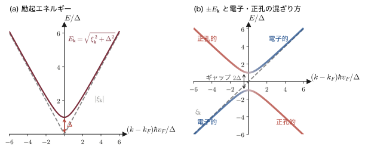
なぜ：ギャップは周期ポテンシャルによる半導体のギャップと何が違うのか
図37.17(b) は，第16章の「ほとんど自由な電子」で2つの平面波が周期ポテンシャルで混ざってギャップが開く図とよく似ている．半導体では，$\kk$ と $\kk-\GG$ の 2つの電子状態 が結晶ポテンシャルで混ざる．超伝導では，$\kk\uparrow$ の 電子と $-\kk\downarrow$ の正孔 が凝縮体の場 $\Delta$ で混ざる．そのためギャップはいつも Fermi 準位（$\xi_\kk=0$）にぴったり開き，電子数にかかわらず Fermi 面全体に開く．また $\Delta$ は外から与えられた結晶ポテンシャルではなく，電子自身が自己無撞着に作り出す場である．
例題37.14 $u_\kk$，$v_\kk$ の値を確かめる
$\Delta=1.0\,\mathrm{meV}$ の超伝導体で，(1) $\xi_\kk=0$，(2) $\xi_\kk=+3.0\,\mathrm{meV}$，(3) $\xi_\kk=-3.0\,\mathrm{meV}$ の状態について $E_\kk$，$u_\kk^2$，$v_\kk^2$，$u_\kk v_\kk$ を求め，$u^2+v^2=1$ と $(2uv)^2+(u^2-v^2)^2=1$ を確かめよ．
解答．(1) $E=1.0\,\mathrm{meV}$，$u^2=v^2=0.5$，$uv=\Delta/2E=0.5$．$(2uv)^2+(u^2-v^2)^2=1+0=1$．
(2) $E=\sqrt{9+1}\,\mathrm{meV}=3.162\,\mathrm{meV}$，$\xi/E=0.9487$．$u^2=\frac12(1.9487)=0.9744$，$v^2=\frac12(0.0513)=0.0256$，$uv=1/(2\times3.162)=0.1581$．$u^2+v^2=1.0000$，
$$ (2uv)^2+(u^2-v^2)^2=0.1000+0.9000=1.000 $$である．
(3) $\xi/E=-0.9487$ なので $u^2$ と $v^2$ が入れ替わる：$u^2=0.0256$，$v^2=0.9744$，$uv=0.1581$．
∎ Fermi 面から $3\Delta$ 離れると，準粒子は 97% 電子（あるいは正孔）である．電子と正孔が強く混ざっているのは Fermi 面から $\Delta$ 程度の範囲だけで，超伝導で変わるのはこのわずかな範囲（全電子の $\Delta/E_F\sim10^{-4}$）だけである．
37.6.7 自己無撞着条件 — ギャップ方程式
最後に，仮定した $\Delta$ が定義 \eqref{eq:37-Deltadef} を満たすように決める．そのために，温度 $T$ の熱平衡での準粒子の期待値が要る．
補足：平均場の下での熱平衡と準粒子の分布
(1) 統計力学（付録A の A.11節）では，温度 $T$ の熱平衡の期待値は，エネルギー固有状態 $\ket n$（固有値 $\mathcal E_n$）について重み $\ee^{-\mathcal E_n/k_BT}$ を付けた平均 $\langle\hat O\rangle=\sum_n\ee^{-\mathcal E_n/k_BT}\langle n|\hat O|n\rangle/\sum_n\ee^{-\mathcal E_n/k_BT}$ である．平均場近似では，このエネルギーとして $H_{\rm MF}$ の固有値を使う．$\xi_\kk$ を化学ポテンシャルから測っているので，$H_{\rm MF}$ はすでに $H-\mu N$ に当たり，別に $\mu$ を引く必要はない．
(2) 式 \eqref{eq:37-HMFdiag} より，$H_{\rm MF}$ は「エネルギー $E_\kk$ の準粒子のモード $\gamma_{\kk\uparrow}$，$\gamma_{-\kk\downarrow}$ の数 × $E_\kk$」の和と定数 $E_{\rm g}$ である．固有状態は各モードの準粒子の数 $\nu=0,1$ を指定した状態で，モードどうしは独立なので，1つのモードについての平均は
$$ \langle\gamma^\dagger\gamma\rangle=\frac{0\cdot1+1\cdot\ee^{-E/k_BT}}{1+\ee^{-E/k_BT}}=\frac{1}{\ee^{E/k_BT}+1}=f(E) $$になる．これは化学ポテンシャル0の Fermi 分布である．準粒子の数は保存しない（$H_{\rm MF}$ に準粒子の数を固定する条件が無い）ので，化学ポテンシャルに当たるものは現れない．
(3) $\gamma^\dagger_{\kk\uparrow}\gamma^\dagger_{-\kk\downarrow}$ や $\gamma_{-\kk\downarrow}\gamma_{\kk\uparrow}$ は準粒子の数を2つ変えるので，固有状態 $\ket n$ をそれと直交する別の固有状態に移す．したがって $\langle n|\cdots|n\rangle=0$ で，熱平均も0である．
まとめると，温度 $T$ の熱平衡では，準粒子は独立な Fermi 粒子として Fermi 分布 $f(E)=1/(\ee^{E/k_BT}+1)$ に従う：
$$ \langle\gamma^\dagger_{\kk\uparrow}\gamma_{\kk\uparrow}\rangle=\langle\gamma^\dagger_{-\kk\downarrow}\gamma_{-\kk\downarrow}\rangle=f(E_\kk),\qquad \langle\gamma^\dagger_{\kk\uparrow}\gamma^\dagger_{-\kk\downarrow}\rangle=\langle\gamma_{-\kk\downarrow}\gamma_{\kk\uparrow}\rangle=0 $$（準粒子の数を変える期待値は0．準粒子の化学ポテンシャルは0である）．
導出7：$\langle c_{-\kk\downarrow}c_{\kk\uparrow}\rangle=u_\kk v_\kk[1-2f(E_\kk)]$ とギャップ方程式
ステップ1：$c$ を $\gamma$ で書く．導出4の逆変換から $c_{\kk\uparrow}=u\gamma_{\kk\uparrow}+v\gamma^\dagger_{-\kk\downarrow}$．また $c^\dagger_{-\kk\downarrow}=-v\gamma_{\kk\uparrow}+u\gamma^\dagger_{-\kk\downarrow}$ の Hermite 共役をとって $c_{-\kk\downarrow}=-v\gamma^\dagger_{\kk\uparrow}+u\gamma_{-\kk\downarrow}$．
ステップ2：積を展開する．
$$ \begin{aligned} c_{-\kk\downarrow}c_{\kk\uparrow}&=\left(-v\gamma^\dagger_{\kk\uparrow}+u\gamma_{-\kk\downarrow}\right)\left(u\gamma_{\kk\uparrow}+v\gamma^\dagger_{-\kk\downarrow}\right)\\ &=-uv\,\gamma^\dagger_{\kk\uparrow}\gamma_{\kk\uparrow}-v^2\gamma^\dagger_{\kk\uparrow}\gamma^\dagger_{-\kk\downarrow}\\ &\quad+u^2\gamma_{-\kk\downarrow}\gamma_{\kk\uparrow}\\ &\quad+uv\,\gamma_{-\kk\downarrow}\gamma^\dagger_{-\kk\downarrow} \end{aligned} $$ステップ3：期待値をとる．第2・3項の期待値は0．$\langle\gamma_{-\kk\downarrow}\gamma^\dagger_{-\kk\downarrow}\rangle=1-f(E_\kk)$ なので
$$ \langle c_{-\kk\downarrow}c_{\kk\uparrow}\rangle=-uv\,f(E_\kk)+uv\,[1-f(E_\kk)]=u_\kk v_\kk\,[1-2f(E_\kk)] $$ステップ4：$\tanh$ で書く．$$1-2f(E)=1-\dfrac{2}{\ee^{E/k_BT}+1}=\dfrac{\ee^{E/k_BT}-1}{\ee^{E/k_BT}+1}=\tanh\dfrac{E}{2k_BT}$$（分子分母に $\ee^{-E/2k_BT}$ を掛ければ $\sinh/\cosh$）．式 \eqref{eq:37-uv} の $u_\kk v_\kk=\Delta/2E_\kk$ と合わせて
ステップ5：定義に戻す．定義 \eqref{eq:37-Deltadef} に入れると $\Delta=V\sum_\kk\frac{\Delta}{2E_\kk}\tanh\frac{E_\kk}{2k_BT}$．$\Delta=0$ は常にこの式を満たす（常伝導の解）．$\Delta\ne0$ の解を探すので両辺を $\Delta$ で割って
ステップ6：和を積分に直す．被積分関数は $\xi_\kk$ だけの関数である．$\kk$ についての和（スピンについては和をとらない．$\kk$ の対1つに1つの項）は，1スピンあたり・結晶全体の状態密度 $N(\xi)$ を使って $\sum_\kk F(\xi_\kk)=\int N(\xi)F(\xi)\,\dd\xi$ と書ける．$\abs\xi\lt\hbar\omega_D\ll E_F$ の範囲では状態密度は Fermi 準位の値 $N(0)$ で一定とみなせる．積分範囲 $-\hbar\omega_D\lt\xi\lt\hbar\omega_D$ は Fermi 面をはさむ厚さ $2\hbar\omega_D$ の殻（図37.14(b) の「殻」）で，$\xi\lt0$ が Fermi 面の下側（常伝導では電子が詰まっている側），$\xi\gt0$ が上側である．BCS では両側がともに対に参加する．被積分関数 $\tanh(E/2k_BT)/2E$ は $E=\sqrt{\xi^2+\Delta^2}$ を通してだけ $\xi$ によるので $\xi$ の偶関数であり，$\int_{-\hbar\omega_D}^{\hbar\omega_D}=2\int_0^{\hbar\omega_D}$．
$$ 1=VN(0)\int_{-\hbar\omega_D}^{\hbar\omega_D}\frac{\dd\xi}{2E}\tanh\frac{E}{2k_BT}=VN(0)\cdot2\int_0^{\hbar\omega_D}\frac{\dd\xi}{2E}\tanh\frac{E}{2k_BT} $$2が約分されて，$E=\sqrt{\xi^2+\Delta^2}$ として
∎ これが BCS の ギャップ方程式 である．与えられた $N(0)V$，$\hbar\omega_D$，$T$ に対して $\Delta(T)$ を決める．
ギャップ方程式 \eqref{eq:37-gapeq} は，第35章35.1.6項の Peierls 転移のギャップ方程式と，$\Lambda\leftrightarrow\hbar\omega_D$，$\lambda\leftrightarrow N(0)V$，$\varepsilon\leftrightarrow\xi$ の置き換えで まったく同じ形 をしている．第35章では1次元鎖の電子のエネルギー（大正準ポテンシャル）を格子の歪み $\Delta$ で最小にして導いたが，本章では対の振幅の自己無撞着条件として導いた．どちらも「Fermi 準位の上下の状態が $\Delta$ で混ざってギャップが開き，その得が損を上回る」という同じ構造をしている（37.8.1項で本章でも自由エネルギーの最小化として導き直す）．
37.7 BCS 理論 III — 転移温度の式とギャップの温度依存性
ギャップ方程式 \eqref{eq:37-gapeq} から，2つの極限で解析的な結果が得られる．$T=0$ ではギャップの大きさ $\Delta_0$，$\Delta\to0$ では転移温度 $T_c$ である．どちらも積分を最後まで計算する．
37.7.1 $T=0$ のギャップ
導出：$\Delta_0=\hbar\omega_D/\sinh(1/N(0)V)\approx2\hbar\omega_D\,\ee^{-1/N(0)V}$
ステップ1．$T\to0$ では $E/2k_BT\to\infty$ なので $\tanh\to1$．式 \eqref{eq:37-gapeq} は
$$ \frac{1}{N(0)V}=\int_0^{\hbar\omega_D}\frac{\dd\xi}{\sqrt{\xi^2+\Delta_0^2}} $$ステップ2：積分．$\xi=\Delta_0\sinh s$ とおくと $\dd\xi=\Delta_0\cosh s\,\dd s$，$\sqrt{\xi^2+\Delta_0^2}=\Delta_0\cosh s$ なので被積分関数は $\dd s$ になる．上限は $s=\sinh^{-1}(\hbar\omega_D/\Delta_0)$．よって
$$ \frac{1}{N(0)V}=\sinh^{-1}\frac{\hbar\omega_D}{\Delta_0} $$ステップ3：$\Delta_0$ について解く．両辺の $\sinh$ をとって $\sinh(1/N(0)V)=\hbar\omega_D/\Delta_0$，すなわち
$$ \Delta_0=\frac{\hbar\omega_D}{\sinh\bigl(1/N(0)V\bigr)} $$ステップ4：弱結合の近似．$N(0)V\ll1$ では $1/N(0)V\gg1$ なので $\sinh x=(\ee^x-\ee^{-x})/2\approx\ee^x/2$．
∎ ($N(0)V=0.4$ でも，$\sinh$ のままの値との差は 0.7% である．)
補足：Cooper 対の指数 $2/N(0)V$ と BCS の指数 $1/N(0)V$
第29章の1対の Cooper 問題の束縛エネルギーは $\abs\varepsilon\simeq2\hbar\omega_D\ee^{-2/N(0)V}$ で，指数が2倍である．違いは自己無撞着の条件の積分にある．Cooper 問題では，Fermi 面の 上側（$0\lt\xi\lt\hbar\omega_D$）の状態だけが使え，2電子の運動エネルギーが $2\xi$ なので $$1=N(0)V\int_0^{\hbar\omega_D}\frac{\dd\xi}{2\xi+\abs\varepsilon}\approx\frac{N(0)V}{2}\ln\frac{2\hbar\omega_D}{\abs\varepsilon}$$ となる．BCS では Fermi 面の 上下両側（$-\hbar\omega_D\lt\xi\lt\hbar\omega_D$）のすべての電子が対に参加し，$$1=N(0)V\int_{-\hbar\omega_D}^{\hbar\omega_D}\frac{\dd\xi}{2E}\approx N(0)V\ln\frac{2\hbar\omega_D}{\Delta_0}$$ と対数の前の係数が2倍になる．そのため指数が半分になり，同じ $N(0)V=0.3$ で $\ee^{-1/0.3}/\ee^{-2/0.3}=\ee^{3.33}\approx28$ 倍も大きなエネルギーが得られる．多数の対が同時に凝縮することで，1対の束縛よりはるかに強く安定になるのである．
例題37.15 Al の $N(0)V$ とギャップ
Al は $T_c=1.140\,\mathrm{K}$，Debye 温度 $\Theta_D=428\,\mathrm{K}$（$\hbar\omega_D=k_B\Theta_D$）である．(1) 次項で導く $k_BT_c=1.134\hbar\omega_D\ee^{-1/N(0)V}$ から $N(0)V$ を求めよ．(2) 式 \eqref{eq:37-Delta0} で $\Delta_0$ を求め，meV で表せ．(3) $N(0)V$ を $0.18$ にすると $T_c$ はいくらになるか．
解答．(1) $\ee^{-1/N(0)V}=T_c/(1.134\Theta_D)$ より $$1/N(0)V=\ln(1.134\Theta_D/T_c)=\ln(1.134\times428/1.140)=\ln425.7=6.054$$．$N(0)V=0.165$．
(2) 式 \eqref{eq:37-Delta0} は $\Delta_0=2k_B\Theta_D\,\ee^{-1/N(0)V}$．(1) の $\ee^{-1/N(0)V}=T_c/(1.134\,\Theta_D)$ を入れると $$\Delta_0=2k_BT_c/1.134=1.764\,k_BT_c=1.764\times8.617\times10^{-2}\,\mathrm{meV/K}\times1.140\,\mathrm{K}=0.173\,\mathrm{meV}$$．
(3) $$T_c=1.134\times428\times\ee^{-1/0.18}\,\mathrm{K}=485.4\times\ee^{-5.556}\,\mathrm{K}=485.4\times3.87\times10^{-3}\,\mathrm{K}=1.88\,\mathrm{K}$$．
∎ $N(0)V$ が 0.165 から 0.18 へ1割変わるだけで $T_c$ は 1.6 倍になる．指数関数の敏感さのため，$T_c$ を微視的な計算から精度よく予言するのは難しい．逆に，実測の $T_c$ と $\Theta_D$ から $N(0)V$ を逆算する（BCS の論文の表がそうしている）のが実際的である．
37.7.2 転移温度の式の導出
$T$ を上げると $\Delta$ は小さくなり，$T=T_c$ で0になる．式 \eqref{eq:37-gapeq} で $\Delta\to0$ とおくと $E\to\abs\xi=\xi$（$\xi\ge0$ の範囲）なので，$T_c$ を決める式は
である．被積分関数 $\tanh(\xi/2k_BT_c)/\xi$ は，$\xi\gg k_BT_c$ では $1/\xi$ で，$\xi\lesssim k_BT_c$ では有限の値に抑えられる（図37.18(a)）．$T=0$ の積分 $\int\dd\xi/\sqrt{\xi^2+\Delta^2}$ ではギャップが $\xi\lesssim\Delta$ の発散を抑えたが，ここでは熱（$\tanh$）が $\xi\lesssim k_BT_c$ の発散を抑える．ギャップと温度が同じ役割をするので，$\Delta_0$ と $k_BT_c$ は同じ形の式になると予想できる．
導出：$k_BT_c=\dfrac{2\ee^{\gamma_E}}{\pi}\hbar\omega_D\,\ee^{-1/N(0)V}$
ステップ1：無次元化．$x=\xi/2k_BT_c$，$X=\hbar\omega_D/2k_BT_c$ とおく．$\dd\xi/\xi=\dd x/x$ なので
$$ \frac{1}{N(0)V}=\int_0^X\frac{\tanh x}{x}\,\dd x $$ステップ2：部分積分．$1/x$ を積分する側（原始関数 $\ln x$），$\tanh x$ を微分する側にとる．$\dfrac{\dd}{\dd x}\tanh x=\dfrac{1}{\cosh^2x}=\mathrm{sech}^2x$ より
$$ \int_0^X\frac{\tanh x}{x}\,\dd x=\Bigl[\ln x\,\tanh x\Bigr]_0^X-\int_0^X\ln x\;\mathrm{sech}^2x\,\dd x $$ステップ3：境界項．下端 $x\to0$ では $\tanh x\approx x$ なので $\ln x\tanh x\approx x\ln x\to0$．上端では，$X=\hbar\omega_D/2k_BT_c$ は $\Theta_D/2T_c$ で100以上の大きな数なので $\tanh X=1-2\ee^{-2X}+\cdots\approx1$ で，境界項は $\ln X$ になる．
ステップ4：残りの積分の上限を $\infty$ にする．$\mathrm{sech}^2x\approx4\ee^{-2x}$ は $x\gg1$ で指数関数的に小さいので，$\int_X^\infty\ln x\,\mathrm{sech}^2x\,\dd x\approx4\ln X\,\ee^{-2X}/2$ は無視でき，上限を $\infty$ にしてよい．その値は定数（次の「数学の道具」の箱で導く）：
$$ \int_0^\infty\ln x\;\mathrm{sech}^2x\,\dd x=-\ln\frac{4\ee^{\gamma_E}}{\pi}=-0.8188 $$ステップ5：まとめる．
$$ \frac{1}{N(0)V}=\ln X+\ln\frac{4\ee^{\gamma_E}}{\pi}=\ln\left(\frac{4\ee^{\gamma_E}}{\pi}\cdot\frac{\hbar\omega_D}{2k_BT_c}\right)=\ln\frac{2\ee^{\gamma_E}\hbar\omega_D}{\pi k_BT_c} $$ステップ6：$T_c$ について解く．両辺の指数をとって $\ee^{1/N(0)V}=2\ee^{\gamma_E}\hbar\omega_D/(\pi k_BT_c)$，すなわち
∎ （$\ee^{\gamma_E}=1.7811$，$2\times1.7811/3.1416=1.1339$．）
数学の道具：$\displaystyle\int_0^\infty\ln x\,\mathrm{sech}^2x\,\dd x=-\ln\frac{4\ee^{\gamma_E}}{\pi}$ の導出
上の導出のステップ1の積分 $I(X)=\int_0^X\tanh x/x\,\dd x$ を，別の方法で $X\gg1$ で評価し，ステップ2〜4の結果 $I(X)=\ln X-\int_0^\infty\ln x\,\mathrm{sech}^2x\,\dd x$ と比べる．
(a) $\tanh$ の部分分数展開．出発点は Euler が示した $\sin$ の無限乗積 $$ \sin z=z\prod_{n=1}^{\infty}\left(1-\frac{z^2}{n^2\pi^2}\right) $$ である（右辺は $\sin z$ の零点 $z=0,\pm\pi,\pm2\pi,\ldots$ で0になる多項式の積の極限）．$\cos z=\sin2z/(2\sin z)$ に両辺を入れると
$$ \cos z=\frac{2z\prod_{n\ge1}\left(1-\dfrac{4z^2}{n^2\pi^2}\right)}{2z\prod_{n\ge1}\left(1-\dfrac{z^2}{n^2\pi^2}\right)} =\prod_{n\ \text{奇数}}\left(1-\frac{4z^2}{n^2\pi^2}\right) $$となる（分子の $n$ が偶数 $n=2l$ の因子 $1-4z^2/(4l^2\pi^2)=1-z^2/(l^2\pi^2)$ が分母の因子とちょうど打ち消し合い，分子の奇数の $n$ だけが残る）．奇数を $n=2j+1$（$j=0,1,2,\ldots$）と書き，$z=ix$ とおくと $\cos(ix)=\cosh x$，$z^2=-x^2$ なので
$$ \cosh x=\prod_{j=0}^{\infty}\left(1+\frac{x^2}{a_j^2}\right),\qquad a_j=\left(j+\tfrac12\right)\pi $$と書ける（以下，添字を $n$ に戻して $a_n=(n+\frac12)\pi$ と書く．$\cosh x$ が $x=\pm ia_n$ で0になることと合っている）．対数をとって $x$ で微分すると $\dfrac{\dd}{\dd x}\ln\cosh x=\tanh x$，右辺は $\sum_n\dfrac{2x/a_n^2}{1+x^2/a_n^2}$ なので
$$ \tanh x=\sum_{n=0}^{\infty}\frac{2x}{x^2+a_n^2},\qquad\frac{\tanh x}{x}=\sum_{n=0}^{\infty}\frac{2}{x^2+a_n^2} $$（これは姉妹編『線形応答理論』第13章13.7節の松原振動数の和と同じものである．$x=0.7$ で右辺を20万項まで足すと $\tanh0.7=0.604368$ と6桁一致する．）
(b) 項ごとに積分する．$\int_0^X\dfrac{2\,\dd x}{x^2+a_n^2}=\dfrac{2}{a_n}\tan^{-1}\dfrac{X}{a_n}$ なので
$$ I(X)=\sum_{n=0}^{\infty}\frac{2}{a_n}\tan^{-1}\frac{X}{a_n} $$(c) 段の近似．4つの段階に分けて考える．
(c-1) 段で置き換える．$\tan^{-1}(X/a_n)$ は $a_n\ll X$ で $\pi/2$，$a_n\gg X$ で0に近い．そこで，$u\lt X$ で1，$u\gt X$ で0になる段関数 $s(u)$ を使って，$\tan^{-1}(X/a_n)$ を高さ $\pi/2$ の段 $\frac\pi2s(a_n)$ で置き換える．$a_n\lt X$ の項は $(2/a_n)(\pi/2)=\pi/a_n=1/(n+\frac12)$，$a_n\gt X$ の項は0になるので
$$ I(X)=\sum_{n=0}^{M}\frac{1}{n+\frac12}+R(X),\qquad R(X)\equiv\sum_{n=0}^{\infty}\frac{2}{a_n}\Bigl[\tan^{-1}\frac{X}{a_n}-\frac\pi2s(a_n)\Bigr] $$と書ける．$M$ は $a_M\lt X$ を満たす最大の整数，すなわち $(M+\frac12)\pi\lt X\lt(M+\frac32)\pi$ である．$R(X)$ が置き換えの誤差である．
(c-2) 誤差の和を積分に直す．$a_n$ は間隔 $\pi$ で並ぶので，$X\gg1$ では和を $\sum_n F(a_n)\approx\frac1\pi\int_0^\infty F(u)\,\dd u$（幅 $\pi$ の短冊の面積の和）と積分に直せる：
$$ \begin{aligned} R(X)&\approx\frac1\pi\int_0^\infty\frac2u\Bigl[\tan^{-1}\frac Xu-\frac\pi2s(u)\Bigr]\dd u\\ &=\frac2\pi\left[\int_0^X\frac{\tan^{-1}(X/u)-\pi/2}{u}\dd u+\int_X^\infty\frac{\tan^{-1}(X/u)}{u}\dd u\right] \end{aligned} $$（被積分関数は $u\to0$ で $\tan^{-1}(X/u)-\pi/2\approx-u/X$ なので有限，$u\to\infty$ で $X/u^2$ で減るので，積分は収束する）．
(c-3) 誤差の積分は0である．$u=Xt$ と置き，$\tan^{-1}(1/t)-\pi/2=-\tan^{-1}t$（$t\gt0$）を使うと
$$ R(X)\approx\frac2\pi\left[-\int_0^1\frac{\tan^{-1}t}{t}\dd t+\int_1^\infty\frac{\tan^{-1}(1/t)}{t}\dd t\right] $$第2項で $t=1/t'$ と置くと $\dd t/t=-\dd t'/t'$，積分範囲 $1\to\infty$ は $1\to0$ になるので $\int_1^\infty\frac{\tan^{-1}(1/t)}{t}\dd t=\int_0^1\frac{\tan^{-1}t'}{t'}\dd t'$．第1項とちょうど打ち消し合い，$R(X)\to0$（$X\to\infty$）である（数値でも，両方の積分は $0.915966$ で等しい）．
(c-4) $M$ を $X$ で表す．$(M+\frac12)\pi\lt X\lt(M+\frac32)\pi$ より $M+1=X/\pi+\epsilon$（$\abs\epsilon\lt\frac12$）．$M+1$ と $X/\pi$ の差は $O(1)$ だが，(d) で見るように $M+1$ は対数の中に入るので，$\ln(M+1)=\ln(X/\pi)+\ln(1+\pi\epsilon/X)$ の第2項は $X\to\infty$ で0になる．したがって $M+1\approx X/\pi$ としてよい．
(d) 調和数で和を求める．$H_m=1+\frac12+\cdots+\frac1m$ とすると，奇数の逆数の和は全体から偶数の分を引いて
$$ \sum_{n=0}^{M}\frac{1}{n+\frac12}=2\sum_{n=0}^{M}\frac{1}{2n+1}=2\left(H_{2M+2}-\tfrac12H_{M+1}\right)=2H_{2M+2}-H_{M+1} $$Euler の定数の定義 $\gamma_E=\lim_{m\to\infty}(H_m-\ln m)=0.5772\ldots$ により，$m$ が大きいとき $H_m\approx\ln m+\gamma_E$．したがって
$$ \begin{aligned} 2H_{2M+2}-H_{M+1}&\approx2\ln(2M+2)+2\gamma_E-\ln(M+1)-\gamma_E\\ &=\ln(M+1)+2\ln2+\gamma_E=\ln\bigl[4\ee^{\gamma_E}(M+1)\bigr] \end{aligned} $$(e) 比べる．$M+1\approx X/\pi$ を入れて $I(X)\approx\ln(4\ee^{\gamma_E}X/\pi)$．これと $I(X)=\ln X-\int_0^\infty\ln x\,\mathrm{sech}^2x\,\dd x$ を等置すると
$$ \int_0^\infty\ln x\;\mathrm{sech}^2x\,\dd x=-\ln\frac{4\ee^{\gamma_E}}{\pi}=-\ln2.2677=-0.8188 $$∎ 数値積分でも $-0.818780$ が得られ，12桁まで一致する．図37.18(b) は $I(X)$ と $\ln(4\ee^{\gamma_E}X/\pi)$ が $X\gtrsim2$ でほとんど重なることを示している．
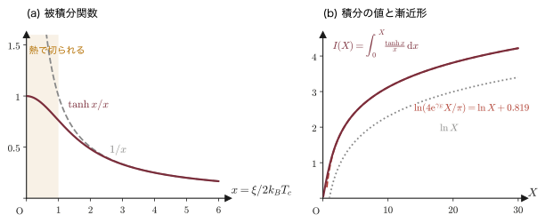
応用：第35章の Peierls 転移の $T_P$ と同じ計算
第35章35.1.6項では，1次元鎖の Peierls 転移の温度 $k_BT_P=1.134\Lambda\ee^{-1/\lambda}$ を，ここと同じ積分 $\int_0^\Lambda\frac{\dd\varepsilon}{\varepsilon}\tanh\frac{\varepsilon}{2k_BT_P}=\frac1\lambda$ を部分積分して導いた（そこでは定数 $-\ln(4\ee^{\gamma_E}/\pi)$ を公式として認めた．上の箱がその導出になっている）．対応は $\Lambda\leftrightarrow\hbar\omega_D$，$\lambda\leftrightarrow N(0)V$，$T_P\leftrightarrow T_c$ である．格子の歪み（電荷密度波）による Peierls ギャップも，対の凝縮による超伝導ギャップも，「Fermi 準位の上下の状態が混ざってギャップが開く」平均場の不安定性であり，対数の発散 $\int\dd\xi/\xi$ がどんなに弱い結合でも転移を起こす．その結果，ギャップ比 $2\Delta_0/k_BT_P=2\Delta_0/k_BT_c=3.53$ まで同じになる．
37.7.3 普遍的な比 $2\Delta_0/k_BT_c$
式 \eqref{eq:37-Delta0} と \eqref{eq:37-Tc} の比をとると，$\hbar\omega_D$ と $N(0)V$ がともに消える：
物質によらない 普遍的な数 である．表37.4 に実測値を並べる．Al，In，Sn，Nb は 3.5 前後で BCS の予言とよく合う．Pb（4.38）と Hg（4.6）は大きくずれる．これらは電子格子相互作用が強く（$\lambda_{\rm ep}\approx1$ 以上），フォノンによる引力の遅延を正しく扱う Eliashberg 理論（第29章29.8節，本章37.10節）が必要な 強結合超伝導体 である．
| 元素 | $T_c$ (K) | $\Theta_D$ (K) | $N(0)V$ | $\Delta_0$ BCS (meV) | $\Delta_0$ 実測 (meV) | $2\Delta_0/k_BT_c$ 実測 |
|---|---|---|---|---|---|---|
| Al | 1.140 | 428 | 0.165 | 0.173 | 0.167 | 3.4 |
| In | 3.40 | 108 | 0.279 | 0.517 | 0.528 | 3.6 |
| Sn | 3.72 | 200 | 0.243 | 0.565 | 0.561 | 3.5 |
| Nb | 9.50 | 275 | 0.286 | 1.44 | 1.56 | 3.8 |
| Hg | 4.15 | 72 | 0.336 | 0.631 | 0.82 | 4.6 |
| Pb | 7.19 | 105 | 0.356 | 1.09 | 1.36 | 4.38 |
例題37.16 Pb のギャップを周波数で表す
(1) Pb の $T_c=7.19\,\mathrm{K}$ から BCS の $2\Delta_0$ を求め，実測の $2\Delta_0/k_BT_c=4.38$ による値と比べよ．(2) 実測の $2\Delta_0$ を光の周波数と波長に直せ（$1\,\mathrm{meV}=0.2418\,\mathrm{THz}$）．
解答．(1) $$k_BT_c=8.617\times10^{-2}\,\mathrm{meV/K}\times7.19\,\mathrm{K}=0.6196\,\mathrm{meV}$$．BCS：$2\Delta_0=3.528\times0.6196\,\mathrm{meV}=2.19\,\mathrm{meV}$．実測：$4.38\times0.6196\,\mathrm{meV}=2.71\,\mathrm{meV}$．実測は BCS より24%大きい．
(2) $2.71\,\mathrm{meV}\times0.2418\,\mathrm{THz/meV}=0.656\,\mathrm{THz}$．波長は $c/f=3.00\times10^8/0.656\times10^{12}\,\mathrm{m}=0.457\,\mathrm{mm}$．
∎ 超伝導ギャップはテラヘルツ（遠赤外〜サブミリ波）の領域にある．これより低い周波数の光は超伝導体に吸収されず，ギャップより高い周波数で吸収が始まる（Glover と Tinkham の遠赤外吸収の実験，1956〜57年）．
37.7.4 $T_c$ の式の読み方
(i) 摂動論では到達できない．$\ee^{-1/N(0)V}$ は $V\to0$ で0に近づくが，$V=0$ のまわりで Taylor 展開すると全係数が0になる（第29章の例題29.15 と同じ）．$V$ について何次まで摂動計算をしても $T_c$ は得られない．どんなに弱い引力でも，十分低温では必ず超伝導になる（Fermi 面の対数発散のため）．
(ii) 同位体効果．$T_c\propto\omega_D\propto M^{-1/2}$．$N(0)$ は電子だけの量で，$V$ もフォノン交換の弱結合の範囲では $M$ によらない（第29章29.6節で見るように，フォノンを介した引力の大きさは $M$ によらない）ので，$\alpha=1/2$ が予言される．
例題37.17 Hg の同位体効果
Hg の同位体の平均質量が $M=199.5$ のとき $T_c=4.185\,\mathrm{K}$ である．(1) BCS の予言 $T_c\propto M^{-1/2}$ で $M=203.4$ のときの $T_c$ を求めよ．(2) 実測値 $4.146\,\mathrm{K}$ から $\alpha$ を求めよ．
解答．(1) $$T_c=4.185\times(199.5/203.4)^{1/2}\,\mathrm{K}=4.185\times(0.98083)^{1/2}\,\mathrm{K}=4.185\times0.99037\,\mathrm{K}=4.145\,\mathrm{K}$$．
(2) $$\alpha=-\dfrac{\ln(T_{c2}/T_{c1})}{\ln(M_2/M_1)}=-\dfrac{\ln(4.146/4.185)}{\ln(203.4/199.5)}=-\dfrac{-0.009363}{0.019360}=0.484$$．
∎ 予言 $0.5$ とよく合う．$T_c$ の変化は 1% にすぎないが，同位体を濃縮した試料で精密に測られた．Ru や Zr のように $\alpha$ がずっと小さい物質もあり，これは Coulomb 斥力の遅延効果（第29章29.6節の $\mu^*$）による．
(iii) $T_c$ が $\Theta_D$ よりずっと低い理由．$T_c/\Theta_D=1.134\,\ee^{-1/N(0)V}$．$N(0)V=0.2$〜$0.4$ では $\ee^{-5}$〜$\ee^{-2.5}=0.0067$〜$0.082$ で，$T_c$ は $\Theta_D$ の1%前後になる．格子振動のエネルギー（数百 K）が，指数因子のために数 K の転移温度に落ちる．
(iv) $N(0)V$ の現実的な値．表37.4 の逆算値は 0.17〜0.36 である．$N(0)V$ は「状態密度が大きく，電子格子結合が強く，格子が軟らかい」ほど大きい（第29章29.8節の $\lambda_{\rm ep}$ と Coulomb 擬ポテンシャル $\mu^*$ を使えば，おおよそ $N(0)V\approx(\lambda_{\rm ep}-\mu^*)/(1+\lambda_{\rm ep})$ の目安になる）．$N(0)V$ を大きくしようとして結合を強くすると，格子が不安定になる（虚数振動数を有するフォノン，第29章29.3節）という限界がある．
37.7.5 ギャップの温度変化 $\Delta(T)$
$0\lt T\lt T_c$ ではギャップ方程式 \eqref{eq:37-gapeq} を数値的に解く．$\hbar\omega_D\gg\Delta,k_BT$ の弱結合極限では，$T=0$ の式との差をとることで $\hbar\omega_D$ と $N(0)V$ を消去でき，$\Delta(T)/\Delta_0$ は $T/T_c$ だけの 普遍関数 になる（図37.19）．低温では $\Delta$ はほとんど $\Delta_0$ のままで（熱で励起される準粒子が $\ee^{-\Delta_0/k_BT}$ と少ないため），$T_c$ に近づくと急に0に落ちる．
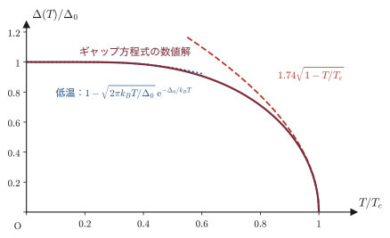
$T_c$ のすぐ下では $\Delta$ が小さいので，ギャップ方程式を $\Delta^2$ について展開して解析的に解ける．
導出：$T_c$ の近くで $\Delta(T)\approx1.74\,\Delta_0\sqrt{1-T/T_c}$
ステップ1：$\tanh$ の展開を使う．上の「数学の道具」の (a) で $x=E/2k_BT$ とおくと
$$ \begin{aligned} \frac{1}{E}\tanh\frac{E}{2k_BT}&=\frac{1}{2k_BT}\cdot\frac{\tanh x}{x}=\frac{1}{2k_BT}\sum_{n=0}^\infty\frac{2}{x^2+a_n^2}\\ &=\sum_{n=0}^\infty\frac{4k_BT}{E^2+w_n^2},\qquad w_n=(2n+1)\pi k_BT \end{aligned} $$（分母分子に $(2k_BT)^2$ を掛けた．$2k_BTa_n=(2n+1)\pi k_BT=w_n$．$w_n$ はエネルギーの次元をもち，姉妹編『線形応答理論』で「松原振動数」と呼ぶものに $\hbar$ を掛けた量である）．
ステップ2：$\Delta^2$ について展開．$E^2=\xi^2+\Delta^2$ なので，$\Delta^2$ の1次まで
$$ \frac{1}{\xi^2+w_n^2+\Delta^2}\approx\frac{1}{\xi^2+w_n^2}-\frac{\Delta^2}{(\xi^2+w_n^2)^2} $$ステップ3：$\xi$ で積分．第1項は $\Delta=0$ の被積分関数 $\frac1\xi\tanh\frac{\xi}{2k_BT}$ に戻る．第2項の積分は収束が速いので上限を $\infty$ にしてよく，$\int_0^\infty\frac{\dd\xi}{(\xi^2+w^2)^2}=\frac{\pi}{4w^3}$（$\xi=w\tan\phi$ と置けば $\dd\xi=w\,\dd\phi/\cos^2\phi$，$\xi^2+w^2=w^2/\cos^2\phi$ なので $\frac{1}{w^3}\int_0^{\pi/2}\cos^2\phi\,\dd\phi=\frac{\pi}{4w^3}$）．よってギャップ方程式の右辺は
$$ \int_0^{\hbar\omega_D}\frac{\dd\xi}{\xi}\tanh\frac{\xi}{2k_BT}-\Delta^2\sum_{n=0}^{\infty}4k_BT\frac{\pi}{4w_n^3} $$第2項の和は $$\sum_n\dfrac{\pi k_BT}{(2n+1)^3\pi^3(k_BT)^3}=\dfrac{1}{\pi^2(k_BT)^2}\sum_{n=0}^\infty\dfrac{1}{(2n+1)^3}=\dfrac{1}{\pi^2(k_BT)^2}\cdot\dfrac78\zeta(3)$$（奇数の3乗の逆数の和は $\zeta(3)=\sum1/n^3=1.2021$ から偶数の分 $\zeta(3)/8$ を引いたもの．付録A の A.5節）．
ステップ4：第1項を $T_c$ の式と比べる．37.7.2項の結果から $\int_0^{\hbar\omega_D}\frac{\dd\xi}{\xi}\tanh\frac{\xi}{2k_BT}=\ln\frac{2\ee^{\gamma_E}\hbar\omega_D}{\pi k_BT}$．左辺 $1/N(0)V$ は同じ式で $T=T_c$ としたものに等しい．差をとると
$$ 0=\ln\frac{2\ee^{\gamma_E}\hbar\omega_D}{\pi k_BT}-\ln\frac{2\ee^{\gamma_E}\hbar\omega_D}{\pi k_BT_c}-\frac{7\zeta(3)}{8\pi^2(k_BT)^2}\Delta^2 \quad\Longrightarrow\quad \ln\frac{T_c}{T}=\frac{7\zeta(3)}{8\pi^2(k_BT)^2}\Delta^2 $$ステップ5：$T_c$ の近く．$\ln(T_c/T)=-\ln(1-(1-T/T_c))\approx1-T/T_c$，右辺の $T$ は $T_c$ で置き換えてよい．
$$ \Delta(T)^2\approx\frac{8\pi^2}{7\zeta(3)}(k_BT_c)^2\left(1-\frac{T}{T_c}\right),\qquad \Delta(T)\approx3.063\,k_BT_c\sqrt{1-\frac{T}{T_c}} $$$k_BT_c=(\ee^{\gamma_E}/\pi)\Delta_0=\Delta_0/1.764$ を入れて
∎ $\Delta\propto(T_c-T)^{1/2}$ は，GL 理論の $\abs{\psi_\infty}\propto(T_c-T)^{1/2}$（式 \eqref{eq:37-psiinf}）と同じ臨界指数である．BCS の $\Delta$ と GL の $\psi$ が比例することの最初の手がかりである（37.8節）．
例題37.18 $\Delta(T)$ を数値的に解く
弱結合極限のギャップ方程式は，$T=0$ の式を引いて $\ln\dfrac{\Delta_0}{\Delta}=2\displaystyle\int_0^\infty\frac{\dd\xi}{E}f(E)$（$E=\sqrt{\xi^2+\Delta^2}$）と書ける．(1) この形を導け．(2) この式を数値的に解くと $T=0.9T_c$ で $\Delta/\Delta_0=0.526$ である．近似式 \eqref{eq:37-DeltaTc} の値と比べよ．(3) Nb（$\Delta_0=1.56\,\mathrm{meV}$，$T_c=9.50\,\mathrm{K}$）の $8.5\,\mathrm{K}$ でのギャップを見積もれ．
解答．(1) $\tanh(E/2k_BT)=1-2f(E)$ を式 \eqref{eq:37-gapeq} に入れ，$T=0$ の式 $\frac{1}{N(0)V}=\int_0^{\hbar\omega_D}\frac{\dd\xi}{\sqrt{\xi^2+\Delta_0^2}}$ と等置する：
$$ \int_0^{\hbar\omega_D}\frac{\dd\xi}{\sqrt{\xi^2+\Delta_0^2}}=\int_0^{\hbar\omega_D}\frac{\dd\xi}{\sqrt{\xi^2+\Delta^2}}-2\int_0^{\hbar\omega_D}\frac{f(E)}{E}\dd\xi $$左辺 $\approx\ln(2\hbar\omega_D/\Delta_0)$，右辺第1項 $\approx\ln(2\hbar\omega_D/\Delta)$（37.7.1項）．第2項は $f(E)$ が $E\gg k_BT$ で指数関数的に小さいので上限を $\infty$ にできる．よって $\ln(\Delta_0/\Delta)=2\int_0^\infty f(E)/E\,\dd\xi$．
(2) $1.74\sqrt{0.1}=1.74\times0.3162=0.550$．数値解 0.526 より 5% 大きい．$T_c$ に近づくほど近似はよくなる（$0.99T_c$ では 0.173 対 0.174）．
(3) $T/T_c=8.5/9.50=0.895$．数値解はこのあたりで $\Delta/\Delta_0\approx0.54$ なので $\Delta\approx0.54\times1.56\,\mathrm{meV}=0.84\,\mathrm{meV}$．
∎ 普遍曲線を1本求めておけば，どの弱結合超伝導体のギャップの温度変化も $T_c$ と $\Delta_0$ だけでわかる．
動かして確かめる：ギャップ方程式の数値解と転移温度
シミュレーターの「BCS 平均場」のタブは，ギャップ方程式 \eqref{eq:37-gapeq} を数値積分と2分法で解き，$\Delta(T)$ と $T_c$ を描く．$N(0)V$ と $\hbar\omega_D$ のつまみを動かすと $T_c$ が指数関数的に変わること，それでも比 $2\Delta_0/k_BT_c$ がほぼ 3.53 に保たれること（式 \eqref{eq:37-ratio}），$0.9T_c$ での値が式 \eqref{eq:37-DeltaTc} に近いことを確かめよう．元素を選ぶと，実測の $T_c$ と $\Theta_D$ から逆算した $N(0)V$（表37.4）が入る．
37.7.6 BCS 理論の帰結
(a) 準粒子の状態密度．準粒子のエネルギー $E$ の状態は何個あるか．常伝導の状態密度 $N(0)$（$\xi$ について一様）を，$E=\sqrt{\xi^2+\Delta^2}$ の変数変換で $E$ の分布に直す．
導出：$N_s(E)=N(0)\dfrac{\abs E}{\sqrt{E^2-\Delta^2}}$
ステップ1．エネルギーが $E$ と $E+\dd E$ の間の準粒子の状態の数（1スピンあたり）は $$\sum_\kk\delta(E-E_\kk)\dd E=N(0)\int\delta\bigl(E-\sqrt{\xi^2+\Delta^2}\bigr)\dd\xi\,\dd E$$．
ステップ2．$E\gt\Delta$ なら $\sqrt{\xi^2+\Delta^2}=E$ の解は $\xi=\pm\sqrt{E^2-\Delta^2}$ の2つ．デルタ関数の公式 $\delta(g(\xi))=\sum_i\delta(\xi-\xi_i)/\abs{g'(\xi_i)}$ で，$g'(\xi)=\xi/\sqrt{\xi^2+\Delta^2}=\xi/E$ だから，各解の寄与は $E/\sqrt{E^2-\Delta^2}$．合計 $2N(0)E/\sqrt{E^2-\Delta^2}$．$E\lt\Delta$ では解がなく0．
ステップ3．同じ数え方で常伝導（$\Delta=0$）は $2N(0)$ なので，常伝導に対する比は $E/\sqrt{E^2-\Delta^2}$．トンネル分光では Fermi 準位の上下（$E\gt0$ は電子を入れる，$E\lt0$ は電子を取り出す）を一緒に描くので，Fermi 準位から測ったエネルギー $E$ の関数として
∎ ギャップの中の状態は消え，その分がギャップの縁 $\abs E=\Delta$ に積み上がって（$1/\sqrt{E-\Delta}$ の）発散を作る（図37.20(a)）．
常伝導金属–絶縁膜–超伝導体のトンネル接合（37.1.7項）の電流は，第23章23.5.7項と同じく $I\propto\int\frac{N_s(E)}{N(0)}[f(E-eV)-f(E)]\dd E$ で，$T\to0$ では $f(E-eV)-f(E)$ が $0\lt E\lt eV$ の範囲だけ1になるので $\dd I/\dd V\propto N_s(eV)$．微分コンダクタンスは超伝導体の準粒子の状態密度そのもの である（図37.20(b)）．有限温度では Fermi 分布の幅 $\sim k_BT$ で鋭いピークがなまる．Giaever の実験（1960）は式 \eqref{eq:37-DOS} の形を直接示し，BCS 理論の準粒子描像を確立した．
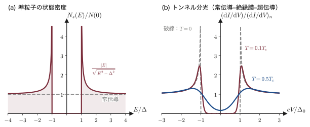
例題37.19 状態の数は保存される
超伝導になっても電子の状態の総数は変わらないはずである．$0\lt E\lt W$（$W\gg\Delta$）の範囲の準粒子の状態の数 $\int_\Delta^WN_s(E)\,\dd E$ を計算し，常伝導の $\int_0^WN(0)\,\dd E=N(0)W$ と比べよ．
解答．$\dfrac{\dd}{\dd E}\sqrt{E^2-\Delta^2}=\dfrac{E}{\sqrt{E^2-\Delta^2}}$ なので
$$ \int_\Delta^WN(0)\frac{E\,\dd E}{\sqrt{E^2-\Delta^2}}=N(0)\Bigl[\sqrt{E^2-\Delta^2}\Bigr]_\Delta^W=N(0)\sqrt{W^2-\Delta^2}=N(0)W\left(1-\frac{\Delta^2}{2W^2}+\cdots\right) $$差は $N(0)\Delta^2/2W$ で，$W\to\infty$ で0になる．
∎ ギャップの中から消えた $N(0)\Delta$ 個の状態は，失われたのではなく縁の近くに移っただけである．$\dd I/\dd V$ のピークの面積から，この「移動」を実験で確かめられる．
(b) 比熱．準粒子は Fermi 分布に従う独立な Fermi 粒子なので，エントロピー $S=-2k_B\sum_\kk[f\ln f+(1-f)\ln(1-f)]$（$f=f(E_\kk)$，因子2は $\gamma_{\kk\uparrow}$ と $\gamma_{-\kk\downarrow}$）を数値的に計算し，$C=T\,\partial S/\partial T$ から比熱が得られる（図37.21）．低温では準粒子の数が $\ee^{-\Delta_0/k_BT}$ に比例するので，比熱も $\ee^{-\Delta_0/k_BT}$ で小さくなる（挿入図の片対数の直線）．$T_c$ では，$\Delta(T)^2$ が $T_c-T$ に比例して現れる（式 \eqref{eq:37-DeltaTc}）ことによって比熱が跳び，その大きさは
である（37.8.2項で GL 理論の係数を BCS から求めて導く．$\gamma_{\rm S}=\frac{2\pi^2}{3}k_B^2N(0)$ は1スピンあたりの $N(0)$ で書いた常伝導の比熱係数）．Al では実測 1.4，Pb では約 2.7 で，ここでも Pb は強結合の値を示す．
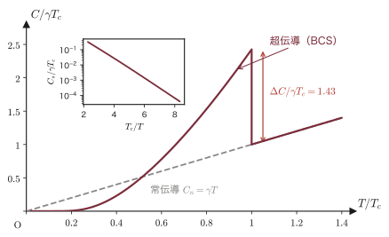
(c) 凝縮エネルギー．$T=0$ の超伝導状態と常伝導状態のエネルギーの差を，式 \eqref{eq:37-HMFdiag} の $E_{\rm g}$ から計算する．
導出：$E_s-E_n=-\frac12N(0)\Delta_0^2$
ステップ1．$E_{\rm g}=\sum_\kk(\xi_\kk-E_\kk)+\Delta_0^2/V$ の和を積分に直す（$\abs\xi\lt\hbar\omega_D$．$\xi$ は奇関数なので積分すると消える）：$\sum_\kk(\xi_\kk-E_\kk)=-2N(0)\int_0^{\hbar\omega_D}\sqrt{\xi^2+\Delta_0^2}\,\dd\xi$．
ステップ2．同じ $H-\mu N$ の常伝導の基底状態のエネルギーは，$\xi\lt0$ の状態に電子が2個（↑↓）ずつ入って $E_n=2N(0)\int_{-\hbar\omega_D}^0\xi\,\dd\xi=-N(0)(\hbar\omega_D)^2$（殻の外の寄与は両者で同じなので省く）．
ステップ3．$$\int_0^{w}\sqrt{\xi^2+\Delta^2}\,\dd\xi=\frac12\left[w\sqrt{w^2+\Delta^2}+\Delta^2\sinh^{-1}\frac{w}{\Delta}\right]$$．$w=\hbar\omega_D\gg\Delta_0$ では $w\sqrt{w^2+\Delta^2}\approx w^2+\Delta^2/2$，$\sinh^{-1}(w/\Delta_0)\approx\ln(2w/\Delta_0)$ なので
$$ E_{\rm g}-E_n\approx-N(0)\left[w^2+\frac{\Delta_0^2}{2}+\Delta_0^2\ln\frac{2w}{\Delta_0}\right]+\frac{\Delta_0^2}{V}+N(0)w^2 $$ステップ4．$T=0$ のギャップ方程式 $\ln(2\hbar\omega_D/\Delta_0)=1/N(0)V$ から $\Delta_0^2/V=N(0)\Delta_0^2\ln(2w/\Delta_0)$．代入すると対数の項と $w^2$ の項が消えて
∎ Fermi 準位から $\Delta_0$ 以内の $N(0)\Delta_0$ 個程度の電子が，それぞれ $\Delta_0$ 程度のエネルギーを得る，と読める．結晶全体の値なので，体積で割ったものが凝縮エネルギー密度 $\mu_0H_c(0)^2/2$ に等しい．
式 \eqref{eq:37-Econd} を体積で割って Al と Pb で評価すると（単位体積あたり・1スピンあたりの自由電子の状態密度 $N(0)/\mathcal V=3n/4E_F$ と，表37.4 の実測の $\Delta_0$ を使う），Al で $26\,\mathrm{J/m^3}$（実測 $B_c^2/2\mu_0=44\,\mathrm{J/m^3}$），Pb で $1.5\,\mathrm{kJ/m^3}$（実測 $2.6\,\mathrm{kJ/m^3}$）となり，桁は一致する．差の一因は，実際の状態密度が電子格子相互作用で $1+\lambda_{\rm ep}$ 倍に増強されていることである（Al の $\lambda_{\rm ep}\approx0.4$ を入れると $36\,\mathrm{J/m^3}$ になり実測に近づく）．Pb のような強結合の物質では，そもそも弱結合の式 \eqref{eq:37-Econd} の前提が成り立たない．
(d) コヒーレンス長と対の大きさ．対の振幅 $u_\kk v_\kk=\Delta/2E_\kk$ は Fermi 面から $\abs{\xi_\kk}\lesssim\Delta$，すなわち波数で $\delta k\approx\Delta/\hbar v_F$ の範囲に集中している（図37.15）．不確定性関係から，対の実空間の広がりはその逆数程度で，BCS は
を BCS コヒーレンス長 と定義した（Pippard が BCS 理論以前に，侵入長の実験から対の広がりに当たる長さとして導入していたので，Pippard のコヒーレンス長とも呼ぶ）．Al（$v_F=1.42\times10^6\,\mathrm{m/s}$，$\Delta_0=0.173\,\mathrm{meV}$）では $$\xi_0=6.582\times10^{-16}\times1.42\times10^6/(3.1416\times1.73\times10^{-4})\,\mathrm{m}=1.7\,\mu\mathrm{m}$$ で，実測の約 $1.6\,\mu\mathrm{m}$ と合う．第29章29.7.4項の1対の Cooper 対の大きさ $\hbar v_F/\abs\varepsilon$ と同じ形で，束縛エネルギー $\abs\varepsilon$ がギャップ $\Delta_0$ に置き換わっている．$\Delta_0\gg\abs\varepsilon$ なので，多体の対は1対の計算よりずっと小さい（それでも原子間隔の数千倍）．37.8節で見るように，GL のコヒーレンス長 $\xi(T)$ は $T_c$ の近くで $0.74\,\xi_0/\sqrt{1-T/T_c}$ になる．
(e) Meissner 効果．BCS 理論で弱いベクトルポテンシャル $\bm A$ に対する電流の応答を計算すると，$T=0$ で $\bm j_s=-(ne^2/m)\bm A$ となり，London 方程式 \eqref{eq:37-londonA} が $n_s=n$ で導かれる．常伝導では，$\bm A$ が波動関数を変形させる励起（Fermi 面の上下の電子と正孔の組）がいくらでも低いエネルギーで作れ，その寄与が $-(ne^2/m)\bm A$ を打ち消す．超伝導ではその励起に $2\Delta$ のギャップがあるので，波動関数が変形できず（London の言う「硬さ」），打ち消しが起こらない．計算は線形応答理論を使うので本書では結果だけを述べる（姉妹編『線形応答理論』）．
37.8 Ginzburg–Landau 理論と BCS 理論のつながり
GL 理論は BCS 理論より7年早く，秩序変数 $\psi$ の正体を知らないまま作られた．1959年，Gor'kov は BCS 理論から出発して，$T_c$ の近くで GL 方程式が導かれることを示した．その結果，$\psi(\rr)\propto\Delta(\rr)$，$e^*=2e$ が確定し，GL の係数 $a$，$b$ が BCS の量で表された．この節では，空間的に一様な部分（係数 $a$，$b$）を自分の手で導き，勾配の項は結果を使って，37.3節の問い「擬波動関数とは何か」に答える．
37.8.1 BCS の自由エネルギーを $\Delta$ で展開する
導出：一様な場合の GL 係数 $a=N(0)\ln(T/T_c)$，$b=\dfrac{7\zeta(3)N(0)}{8\pi^2(k_BT_c)^2}$
ステップ1：平均場の自由エネルギー．$H_{\rm MF}$（式 \eqref{eq:37-HMFdiag}）は独立な Fermi 粒子 $\gamma$ の集まりなので，その大正準ポテンシャル（ここでは $\Omega(\Delta)$ と書く．$\xi_\kk$ を化学ポテンシャルから測っているので $H-\mu N$ に対応する）は，1準位の $-k_BT\ln(1+\ee^{-E/k_BT})$（付録A の A.11節）を2倍（$\gamma_{\kk\uparrow}$ と $\gamma_{-\kk\downarrow}$）して足し，定数 $E_{\rm g}$ を加えたものである：
$$ \Omega(\Delta)=\sum_\kk\left[\xi_\kk-E_\kk-2k_BT\ln\left(1+\ee^{-E_\kk/k_BT}\right)\right]+\frac{\Delta^2}{V} $$$$-E-2k_BT\ln(1+\ee^{-E/k_BT})=-2k_BT\ln\left[\ee^{E/2k_BT}(1+\ee^{-E/k_BT})\right]=-2k_BT\ln\left(2\cosh\dfrac{E}{2k_BT}\right)$$ なので
$$ \Omega(\Delta)=\sum_\kk\xi_\kk-2k_BT\sum_\kk\ln\left(2\cosh\frac{E_\kk}{2k_BT}\right)+\frac{\Delta^2}{V} $$ステップ2：$\Delta^2$ で微分する．$\partial E_\kk/\partial(\Delta^2)=1/2E_\kk$，$\dfrac{\dd}{\dd s}\ln\cosh s=\tanh s$ より
$$ \frac{\partial\Omega}{\partial(\Delta^2)}=\frac1V-\sum_\kk\frac{1}{2E_\kk}\tanh\frac{E_\kk}{2k_BT} $$これを0とおくとギャップ方程式 \eqref{eq:37-gapsum} に一致する．ギャップ方程式は自由エネルギーの停留条件 であり，第35章で Peierls のギャップ方程式を自由エネルギーの最小化から導いたのと同じ構造になっている．
ステップ3：$\Delta^2$ の1次まで展開する．和を積分に直し，37.7.5項の導出のステップ3〜4の結果 $$\int_0^{\hbar\omega_D}\frac{\dd\xi}{E}\tanh\frac{E}{2k_BT}\approx\frac{1}{N(0)V}+\ln\frac{T_c}{T}-\frac{7\zeta(3)}{8\pi^2(k_BT)^2}\Delta^2$$ を使うと（$\frac1V=N(0)\cdot\frac{1}{N(0)V}$）
$$ \frac{\partial\Omega}{\partial(\Delta^2)}=N(0)\left[\ln\frac{T}{T_c}+\frac{7\zeta(3)}{8\pi^2(k_BT)^2}\Delta^2\right] $$ステップ4：$\Delta^2$ について積分する．$\Delta=0$ で $\Omega=\Omega_n$（常伝導）なので
$$ \Omega_s-\Omega_n=N(0)\ln\frac{T}{T_c}\,\Delta^2+\frac12\cdot\frac{7\zeta(3)N(0)}{8\pi^2(k_BT)^2}\Delta^4 $$ステップ5：GL の形と比べる．$a\abs\psi^2+\frac b2\abs\psi^4$ と比べると，$\psi$ を $\Delta$ そのものにとる規格化で
∎ （$N(0)$ は結晶全体の値なので，これは結晶全体の自由エネルギーの係数である．体積で割れば密度の係数になる．）$a_0=N(0)/T_c\gt0$，$b\gt0$ が微視的に導かれた．$-a/b$ は式 \eqref{eq:37-DeltaTc} の $\Delta^2$ を再現する．
37.8.2 比熱の跳び $\Delta C/\gamma_{\rm S}T_c=12/7\zeta(3)$
GL の比熱の跳び \eqref{eq:37-dCGL} $\Delta C=T_ca_0^2/b$ に式 \eqref{eq:37-gorkov} を入れると
$$ \Delta C=T_c\cdot\frac{N(0)^2}{T_c^2}\cdot\frac{8\pi^2(k_BT_c)^2}{7\zeta(3)N(0)}=\frac{8\pi^2}{7\zeta(3)}N(0)k_B^2T_c $$常伝導の電子比熱 $C_n=\gamma_{\rm S}T$ の係数は，両スピンの状態密度 $2N(0)$ を使って $\gamma_{\rm S}=\frac{\pi^2}{3}k_B^2\cdot2N(0)=\frac{2\pi^2}{3}k_B^2N(0)$（第15章の Sommerfeld の結果）．比をとると
$$ \frac{\Delta C}{\gamma_{\rm S}T_c}=\frac{8\pi^2/7\zeta(3)}{2\pi^2/3}=\frac{12}{7\zeta(3)}=\frac{12}{7\times1.2021}=1.426 $$となり，式 \eqref{eq:37-dCBCS} が導かれた．図37.21 の数値計算の跳び（$T\to T_c$ で $C_s/\gamma_{\rm S}T_c\to2.43$）とも一致する．
37.8.3 勾配の項と $e^*=2e$，2つの長さ
$\Delta$ が場所によってゆっくり変わる場合，Gor'kov は Green 関数の方法で，単位体積あたりの自由エネルギーに勾配の項 $K\abs{(\nabla-2ie\bm A/\hbar)\Delta}^2$ が加わることを導いた（その計算は本書の範囲を超えるので結果を使う）．この項では，自由エネルギーも $N(0)$ も単位体積あたりの値を使う（37.8.1項の結晶全体の $N(0)$ を体積 $\mathcal V$ で割った $N(0)/\mathcal V$ に当たる．以下，この項の中では記号を簡単にするため，単位体積あたりの値も $N(0)$ と書く）．
なぜ電荷が $2e$ か．これは計算しなくてもわかる．ゲージ変換 $\bm A\to\bm A+\nabla\chi$ のもとで，電荷 $-e$ の電子の演算子は $c\to\ee^{-ie\chi/\hbar}c$ と位相を変える（37.3.3項と同じ理屈を電子1個に当てはめた）．$\Delta\propto\langle cc\rangle$ は電子の演算子2個の積なので $\Delta\to\ee^{-2ie\chi/\hbar}\Delta$ と 2倍の位相 で変わる．ゲージ不変な組合せを作るには $\nabla$ と組む $\bm A$ の係数が $2e$ でなければならない．したがって $e^*=2e$（の大きさ）である．
$m^*$ と $\psi$ の規格化．勾配の係数は，Fermi 速度 $v_F$ と単位体積あたりの $N(0)$ を使って（不純物による散乱の無い清浄な極限で）$K=\dfrac{7\zeta(3)N(0)\hbar^2v_F^2}{48\pi^2(k_BT_c)^2}$ である．GL の書き方 $\frac{\hbar^2}{2m^*}\abs{\nabla\psi}^2$ に合わせるには $\psi=C\Delta$ とおいて $\frac{\hbar^2}{2m^*}C^2=K$ とすればよい．$m^*$ を決めるのは慣習で（$\psi$ の規格化と $m^*$ の選び方は組でしか効かない），$m^*=2m$ と選ぶと
$$ \abs{\psi}^2=\frac{4mK}{\hbar^2}\Delta^2=\frac{7\zeta(3)N(0)mv_F^2}{12\pi^2(k_BT_c)^2}\Delta^2=\frac{7\zeta(3)\,n}{8\pi^2(k_BT_c)^2}\Delta^2 $$となる（自由電子では $N(0)mv_F^2=\frac{mk_F}{2\pi^2\hbar^2}\cdot\frac{\hbar^2k_F^2}{m}=\frac{k_F^3}{2\pi^2}=\frac32n$）．$T_c$ の近くの $\Delta^2$（式 \eqref{eq:37-DeltaTc} の前の式）を入れると $\abs{\psi}^2=n(1-T/T_c)$，すなわち超伝導電子の密度 $n_s=2\abs\psi^2=2n(1-T/T_c)$ になる．$\abs\psi^2$ は対の密度，$n_s$ はその2倍の電子の密度 という37.3.2項の解釈と，2流体模型の $n_s$（37.2.1項）がここでつながった．
これらを GL の長さの式に入れると（結果のみ．清浄な極限）
となる．$\xi(T)$ の係数は $\xi(T)^2=K/\abs a$ から $\xi(T)^2(1-T/T_c)=\frac{7\zeta(3)\hbar^2v_F^2}{48\pi^2(k_BT_c)^2}$，$\xi_0=\hbar v_F/\pi\Delta_0$ と比べると $$\xi(T)\sqrt{1-T/T_c}/\xi_0=\sqrt{7\zeta(3)/48}\times\Delta_0/k_BT_c=0.4187\times1.764=0.739$$ となる．$\lambda(T)$ は $n_s=2n(1-T/T_c)$ を London の式に入れたものである．GL のコヒーレンス長 $\xi(T)$ と BCS のコヒーレンス長 $\xi_0$ は別の量だが，$T_c$ から離れると同じ程度の大きさになる．
例題37.20 Al の $T=0.9T_c$ での $\xi$，$\lambda$，$\kappa_{\rm GL}$
Al の $\xi_0=1.6\,\mu\mathrm{m}$，$\lambda_L(0)=16\,\mathrm{nm}$ として，$T=0.9T_c$ での $\xi(T)$，$\lambda(T)$ を式 \eqref{eq:37-xilam} で求め，$\kappa_{\rm GL}$ を計算せよ．また $\kappa_{\rm GL}$ が温度によらないことを確かめよ．
解答．$1-T/T_c=0.1$，$\sqrt{0.1}=0.3162$，$\sqrt{0.2}=0.4472$．
$$ \xi(0.9T_c)=\frac{0.74\times1600\,\mathrm{nm}}{0.3162}=3.7\times10^3\,\mathrm{nm},\qquad \lambda(0.9T_c)=\frac{16\,\mathrm{nm}}{0.4472}=36\,\mathrm{nm} $$$\kappa_{\rm GL}=36/3700=0.0097$．比をとると $\kappa_{\rm GL}=\dfrac{\lambda_L(0)/\sqrt2}{0.74\,\xi_0}=\dfrac{0.96\,\lambda_L(0)}{\xi_0}$ で，$1-T/T_c$ は約分されて温度によらない．
∎ Al は $\kappa_{\rm GL}\approx0.01$ の典型的な第1種超伝導体で，例題37.7 の値（0.011）と合う．$\kappa_{\rm GL}\approx0.96\lambda_L(0)/\xi_0$ は，清浄な超伝導体の種別が「London の侵入長と BCS の対の大きさの比」で決まることを示している．
37.8.4 擬波動関数とは何か — 答え
以上で，37.3節の問いに答えられる．その前に，37.6節では一様な系の定数だった $\Delta$ を，場所の関数 $\Delta(\rr)$ としてどう定義するかをはっきりさせておく．
導出：場所の関数としての対の振幅とギャップ $\Delta(\rr)$
ステップ1：場所で電子を消す演算子．波数 $\kk$ の電子を消す $c_{\kk\sigma}$ を平面波で重ね合わせた $\hat\psi_\sigma(\rr)=\frac{1}{\sqrt{\mathcal V}}\sum_\kk\ee^{i\kk\cdot\rr}c_{\kk\sigma}$ は，「点 $\rr$ でスピン $\sigma$ の電子を1個消す」演算子である（1電子の波動関数を平面波で展開するのと同じ形）．
ステップ2：2点の対の振幅．点 $\rr_1$ の ↑ 電子と点 $\rr_2$ の ↓ 電子をまとめて消す振幅 $F(\rr_1,\rr_2)\equiv\langle\hat\psi_\downarrow(\rr_2)\hat\psi_\uparrow(\rr_1)\rangle$ を考える．ステップ1を入れると
$$ F(\rr_1,\rr_2)=\frac{1}{\mathcal V}\sum_{\kk,\kk'}\ee^{i\kk'\cdot\rr_2+i\kk\cdot\rr_1}\langle c_{\kk'\downarrow}c_{\kk\uparrow}\rangle =\frac{1}{\mathcal V}\sum_{\kk}\ee^{i\kk\cdot(\rr_1-\rr_2)}\langle c_{-\kk\downarrow}c_{\kk\uparrow}\rangle $$2つ目の等号では，一様な BCS 状態では重心運動量0の対 $\kk'=-\kk$ の振幅だけが0でないことを使った．
ステップ3：相対座標と重心座標．一様な系では $F$ は相対座標 $\bm r=\rr_1-\rr_2$ だけの関数で，$\langle c_{-\kk\downarrow}c_{\kk\uparrow}\rangle$ の Fourier 変換になっている．これが 対の内部の波動関数 で，$\langle c_{-\kk\downarrow}c_{\kk\uparrow}\rangle=u_\kk v_\kk(1-2f)$ が Fermi 面から $\abs{\xi_\kk}\lesssim\Delta$ に集中していることから，広がりは $\xi_0$ 程度である（37.7.6項 (d)）．とくに $\bm r=0$（2つの電子が同じ点）では $F=\frac1{\mathcal V}\sum_\kk\langle c_{-\kk\downarrow}c_{\kk\uparrow}\rangle$ なので，定義 \eqref{eq:37-Deltadef} と比べて
$$ \Delta=g\,F(\rr,\rr)=g\,\langle\hat\psi_\downarrow(\rr)\hat\psi_\uparrow(\rr)\rangle,\qquad g\equiv V\mathcal V $$（$V$ は $1/\mathcal V$ を含むので，$g$ は体積によらない引力の強さ）．ギャップは「同じ点に ↑ と ↓ の電子の組を見いだす振幅」に引力の強さを掛けたもの である．
ステップ4：場所によってゆっくり変わる場合．渦糸や界面の近くのように一様でない状態では，$F$ は重心座標 $\RR=(\rr_1+\rr_2)/2$ にもよる．ただしその変化が $\xi_0$ よりずっと長い距離でゆっくりしているなら，$F$ は「相対座標についての対の内部の波動関数（大きさ $\xi_0$）」と「重心座標 $\RR$ についてゆっくり変わる振幅と位相」の積の形に近似的に分けられる．後者を表すのが
$$ \Delta(\RR)=g\,\langle\hat\psi_\downarrow(\RR)\hat\psi_\uparrow(\RR)\rangle\quad(\xi_0\ \text{程度の範囲で平均したもの}) $$である．一様な場合はこれが式 \eqref{eq:37-Deltadef} の定数 $\Delta$ に戻る．∎
定理37.1 GL の秩序変数の微視的な意味（Gor'kov 1959）
$T_c$ の近くで，BCS 理論は GL 理論に帰着し，GL の秩序変数はギャップ関数に比例する：
$$ \psi(\RR)\propto\Delta(\RR)=g\,\langle\hat\psi_\downarrow(\RR)\hat\psi_\uparrow(\RR)\rangle, \qquad e^*=2e,\qquad m^*=2m\ (\text{規格化の約束}) $$ここで $\RR$ は対の重心の位置，右辺は $\xi_0$ 程度の範囲で平均した対の振幅である（一様な系では $\Delta=V\sum_\kk\langle c_{-\kk\downarrow}c_{\kk\uparrow}\rangle$）．
GL の係数は $a=N(0)\ln(T/T_c)$，$b=7\zeta(3)N(0)/8\pi^2(k_BT_c)^2$（$\psi=\Delta$ の規格化）で与えられる．
すなわち，擬波動関数 $\psi(\rr)$ は，Cooper 対の重心運動の波動関数であり，対の凝縮の振幅 $\langle c_{-\kk\downarrow}c_{\kk\uparrow}\rangle$ を，対の大きさ $\xi_0$ より大きなスケールで粗く見たもの である．上の導出のとおり，2つの電子を消す振幅 $F(\rr_1,\rr_2)$ は「対の内部の相対運動（大きさ $\xi_0$ の構造．$\kk$ についての和に含まれる）」と「対の重心の運動」に分かれる．前者を足し合わせて消すと，残るのは対の重心がどこにどんな大きさと位相で凝縮しているかという情報だけになる．それが $\psi(\rr)$ の大きさと位相である．37.3.2項で「$\rr$ は対の重心の位置，$\psi=\sqrt{N_p}\,\varphi$」と言ったことの微視的な根拠がこれである．
| GL 理論（現象論） | BCS 理論（微視的） | 本章の式 |
|---|---|---|
| 秩序変数 $\psi(\rr)=\abs\psi\ee^{i\theta}$ | ギャップ関数 $\Delta(\rr)=V\sum\langle c_{-\kk\downarrow}c_{\kk\uparrow}\rangle$ | \eqref{eq:37-Deltadef} |
| $\abs\psi^2$（対の密度） | $\frac{7\zeta(3)n}{8\pi^2(k_BT_c)^2}\Delta^2$，$n_s=2\abs\psi^2$ | 37.8.3項 |
| 位相 $\theta$ の選択（U(1) の破れ） | 粒子数の確定しない $\ket{\Psi_\phi}$，全対が同じ位相 | 37.5.5項 |
| $a=a_0(T-T_c)$ | $a=N(0)\ln(T/T_c)$，$a_0=N(0)/T_c$ | \eqref{eq:37-gorkov} |
| $b$ | $7\zeta(3)N(0)/8\pi^2(k_BT_c)^2$ | \eqref{eq:37-gorkov} |
| $\abs{\psi_\infty}\propto(T_c-T)^{1/2}$ | $\Delta\approx1.74\Delta_0\sqrt{1-T/T_c}$ | \eqref{eq:37-DeltaTc} |
| GL 方程式の停留条件 | ギャップ方程式（自由エネルギーの停留条件） | \eqref{eq:37-gapeq} |
| 凝縮エネルギー $a^2/2b=\mu_0H_c^2/2$ | $\frac12N(0)\Delta_0^2$（$T=0$） | \eqref{eq:37-Econd} |
| 比熱の跳び $T_ca_0^2/b$ | $\Delta C/\gamma_{\rm S}T_c=12/7\zeta(3)=1.43$ | \eqref{eq:37-dCBCS} |
| $e^*$，$m^*$ | $e^*=2e$（$\Delta$ が電子2個の位相をもつ），$m^*=2m$（約束） | 37.8.3項 |
| コヒーレンス長 $\xi(T)$ | $0.74\,\xi_0/\sqrt{1-T/T_c}$，$\xi_0=\hbar v_F/\pi\Delta_0$ | \eqref{eq:37-xilam} |
| 侵入長 $\lambda(T)$ | $\lambda_L(0)/\sqrt{2(1-T/T_c)}$ | \eqref{eq:37-xilam} |
| （なし．現象論はギャップを知らない） | 準粒子のギャップ $\Delta$，状態密度，$2\Delta_0/k_BT_c=3.53$ | \eqref{eq:37-ratio}，\eqref{eq:37-DOS} |
表の BCS 側の $a$，$b$ は $\psi=\Delta$ と規格化した結晶全体の係数（37.8.1項）である．37.3節の GL の係数（$\abs\psi^2$＝対の数密度と規格化した，単位体積あたりの係数）と数値を比べるときは，37.8.3項の $\psi=C\Delta$（$C^2=7\zeta(3)n/8\pi^2(k_BT_c)^2$）を使って $a_{\rm GL}=a/(\mathcal VC^2)$，$b_{\rm GL}=b/(\mathcal VC^4)$ と換算する．比熱の跳びや $\abs{\psi_\infty}\propto(T_c-T)^{1/2}$ のような規格化によらない結果は，そのまま比べられる．
最後の行が示すように，GL 理論は $T_c$ の近くの長い波長の振る舞い（秩序変数の大きさと位相）を正確に記述するが，準粒子の励起（ギャップ）は扱わない．逆に BCS の平均場理論は一様な状態の計算が得意だが，渦糸や界面のような空間変化を扱うのは手間がかかる．両者は互いに補い合う．$T_c$ から離れた低温での空間変化は，Bogoliubov–de Gennes 方程式（$\Delta(\rr)$ を含む $h_\kk$ の実空間版）で扱われる．
37.9 対称性の破れと集団励起 — 南部–Goldstone モードと Higgs モード
ここまで，超伝導状態を「秩序変数が有限になった状態」として静的に調べてきた．この節では，秩序変数がゆれ動く 集団励起 を考える．準粒子（37.6節）が「対を壊して作る個別の励起」だったのに対し，集団励起は「凝縮体全体がそろって形を変える励起」である．その性質は，超伝導が 自発的に対称性を破った状態 であることから決まる．
37.9.1 自発的対称性の破れ
GL の自由エネルギー \eqref{eq:37-GLf} は，位相をそろって回す変換 $\psi\to\psi\ee^{i\chi}$（U(1) 変換）で変わらない（37.3.3項）．BCS ハミルトニアンも電子数の保存から同じ対称性をもつ（37.5.5項）．ところが $T\lt T_c$ の平衡状態はメキシコ帽の溝の底のうち 1点を選び，特定の位相 $\theta_0$ をもつ．法則（ハミルトニアン・自由エネルギー）は対称なのに，実現した状態は対称でない．これを 自発的対称性の破れ（spontaneous symmetry breaking）という．
これは超伝導に特有のことではない．強磁性体では，ハミルトニアンはスピンの回転で不変なのに，磁化は1つの向きを選ぶ（第20章）．強誘電体では，$P\to-P$ で不変な自由エネルギーのもとで，結晶は $+P$ か $-P$ のどちらかを選ぶ（第19章）．結晶そのものも，並進対称な法則のもとで原子が特定の位置を選んだ「並進対称性の破れた状態」である．選ばれなかった状態（他の位相，他の向き）も同じエネルギーをもつので，選ばれた状態から 選ばれなかった状態の方向へ動かすのにはエネルギーがほとんどかからない．ここから，以下の2種類の振動の違いが生まれる．
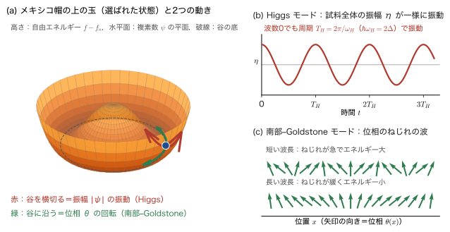
37.9.2 振幅と位相に分けて展開する
導出：Higgs モードの「質量項」$2\abs a\eta^2$ と位相の勾配項
ステップ1：振幅と位相に分ける．磁場がない（$\bm A=0$）とし，平衡の値 $\psi_\infty$（正の実数にとる．$\psi_\infty^2=-a/b=\abs a/b$）のまわりで
$$ \psi(\rr)=\bigl(\psi_\infty+\eta(\rr)\bigr)\ee^{i\theta(\rr)} $$とおく．$\eta$ は振幅のずれ（実数），$\theta$ は位相のずれである．
ステップ2：ポテンシャルの項．$\abs\psi^2=(\psi_\infty+\eta)^2$ なので
$$ a(\psi_\infty+\eta)^2+\frac b2(\psi_\infty+\eta)^4 $$を $\eta$ の冪で展開する．$(\psi_\infty+\eta)^2=\psi_\infty^2+2\psi_\infty\eta+\eta^2$，$$(\psi_\infty+\eta)^4=\psi_\infty^4+4\psi_\infty^3\eta+6\psi_\infty^2\eta^2+4\psi_\infty\eta^3+\eta^4$$ より，
- 0次：$a\psi_\infty^2+\frac b2\psi_\infty^4=-\frac{a^2}{b}+\frac{a^2}{2b}=-\frac{a^2}{2b}$（凝縮エネルギー）．
- 1次：$2a\psi_\infty\eta+2b\psi_\infty^3\eta=2\psi_\infty\eta(a+b\psi_\infty^2)=0$（$\psi_\infty^2=-a/b$ なので．平衡点だから1次の項は消える）．
- 2次：$$a\eta^2+3b\psi_\infty^2\eta^2=a\eta^2-3a\eta^2=-2a\eta^2=2\abs a\,\eta^2$$．
ステップ3：勾配の項．$\nabla\psi=\left[\nabla\eta+i(\psi_\infty+\eta)\nabla\theta\right]\ee^{i\theta}$ なので
$$ \frac{\hbar^2}{2m^*}\abs{\nabla\psi}^2=\frac{\hbar^2}{2m^*}\left[(\nabla\eta)^2+(\psi_\infty+\eta)^2(\nabla\theta)^2\right] $$ステップ4：2次までまとめる．ゆらぎの2次までとると
∎
式 \eqref{eq:37-modes} の読み方が要点である．
- 振幅 $\eta$ には $2\abs a\,\eta^2$ という項がある．$\eta$ が一様でも（$\nabla\eta=0$）エネルギーが増えるので，一様な振幅の振動にも復元力が働き，有限の振動数をもつ．力学の言葉で言えば，$\eta$ は バネ定数をもつ振動子 で，$2\abs a\,\eta^2$ は $\frac12Kx^2$ に当たる位置エネルギー（バネ定数は $4\abs a$）である．場の理論では，このような $\eta^2$ の項を「質量項」と呼ぶ（相対論で質量 $M$ の粒子のエネルギーが波数0でも $Mc^2$ と有限であるように，$\eta^2$ の係数が波数0での振動数を有限にするから）．これが Higgs モード（振幅モード）である．係数 $2\abs a$ は帽子の谷の曲率（$\partial^2f/\partial\eta^2=4\abs a$）の半分で，$\abs a\propto T_c-T$ だから $T_c$ に近づくと谷が浅くなり，Higgs モードは軟らかくなる．
- 位相 $\theta$ には $(\nabla\theta)^2$ の項しかなく，$\theta^2$ の項がない．一様な位相の回転（$\nabla\theta=0$）はエネルギーを変えない．波長 $2\pi/q$ の位相のねじれのエネルギーは $q^2$ に比例し，$q\to0$ で0になる．したがって，位相の振動は波長が長いほど振動数が0に近づく（ギャップレス）．力学の言葉では，$\theta$ は バネ定数が0の振動子（平らな溝の上を転がる玉）で，隣どうしの $\theta$ の差（勾配）にだけ弱いバネがかかっている．これが 南部–Goldstone モード（位相モード）である．
ただし，式 \eqref{eq:37-modes} は自由エネルギー，すなわち 位置エネルギー（バネ）だけ を表しており，振動の速さを決める 慣性（質量） に当たる項を含まない．バネ定数がわかっても，おもりの質量がわからなければ振動数 $\sqrt{\text{バネ定数}/\text{質量}}$ は決まらない．振動数を求めるには，$\psi$ の時間微分を含む「運動エネルギー」の項を加えた動的な理論が要る．それを次の項で導入する．
定理37.2 Goldstone の定理（南部 1960，Goldstone 1961）
連続的な対称性が自発的に破れ，系に長距離の相互作用（ゲージ場）がないとき，波長が長くなるにつれて振動数が0に近づく（ギャップのない）集団励起が必ず存在する．
理由（GL 理論の範囲で）．連続対称性があると，平衡状態をその対称変換で動かした状態も同じエネルギーをもつ．したがって秩序変数を対称変換の方向に一様にずらすエネルギーは0で，自由エネルギーの展開にずれの2乗の項（質量項）は現れない．長い波長でゆっくり変わるずれのエネルギーは勾配の2乗に比例して0に近づく．式 \eqref{eq:37-modes} の $\theta$ の項はその実例である．∎
37.9.3 電荷をもたない凝縮体 — 音波のような南部–Goldstone モード
超流動ヘリウム4や，電荷をもたない原子の Fermi 気体の対の凝縮（冷却原子）では，南部–Goldstone モードは実際にギャップのない波として存在する．位相の勾配は凝縮体の流れ（$\bm v_s=\hbar\nabla\theta/m^*$）なので，位相の振動は凝縮体の密度と流れの振動，すなわち 音波 である．Fermi 粒子の対の凝縮では，Bogoliubov–Anderson モードと呼ばれ，その速さは弱結合で（下の導出）
である．これは粒子の密度のゆらぎに対する圧縮率から理解できる．流体の音速は $c^2=\frac{n}{m}\frac{\partial\mu}{\partial n}$ で，自由な Fermi 気体では $\mu=E_F\propto n^{2/3}$ より $\frac{\partial\mu}{\partial n}=\frac{2E_F}{3n}$，よって $c^2=\frac{2E_F}{3m}=\frac{v_F^2}{3}$．超伝導の対形成は Fermi 面の近くの $\Delta/E_F\sim10^{-4}$ の部分しか変えないので，凝縮体の「硬さ」は常伝導の Fermi 気体の圧縮率でほぼ決まるのである．
この結果と Higgs モードの振動数を，37.9.2項の式 \eqref{eq:37-modes} に「慣性」の項を足して導こう．
導出：時間依存 GL 理論 — 慣性の項を加えて2つのモードの振動数を出す
ステップ1：Lagrangian 密度．力学では，質量 $M$ のおもりとバネ定数 $k$ のバネの Lagrangian は $L=\frac12M\dot x^2-\frac12kx^2$（運動エネルギー − 位置エネルギー）で，Euler–Lagrange 方程式 $\frac{\dd}{\dd t}\frac{\partial L}{\partial\dot x}-\frac{\partial L}{\partial x}=0$ から $M\ddot x=-kx$，振動数 $\omega=\sqrt{k/M}$ が出る．同じように，GL の自由エネルギー密度（位置エネルギー）に，$\psi$ の時間変化の「運動エネルギー」$c_2\abs{\partial_t\psi}^2$（$c_2\gt0$ は定数，$\partial_t=\partial/\partial t$）を加えた Lagrangian 密度
$$ \mathcal L=c_2\abs{\partial_t\psi}^2-(f-f_n) $$を考える．時間について2階の形（Klein–Gordon 型）をとるのは，Fermi 準位のまわりで電子と正孔が対称なとき，時間について1階の項 $\psi^*i\partial_t\psi$ が現れないからである．係数 $c_2$ は GL の現象論の範囲では決まらないので，ステップ5で微視的な結果から決める．（時間依存 GL 理論を微視的に正当化するのは難しく，ここでは振動の性質を見るための現象論として使う．）
ステップ2：振幅と位相に分ける．$\bm A=0$，$\psi=(\psi_\infty+\eta)\ee^{i\theta}$ とすると $\partial_t\psi=[\partial_t\eta+i(\psi_\infty+\eta)\partial_t\theta]\ee^{i\theta}$ なので $\abs{\partial_t\psi}^2=(\partial_t\eta)^2+(\psi_\infty+\eta)^2(\partial_t\theta)^2$．ゆらぎの2次までとり，式 \eqref{eq:37-modes} を使うと（定数を除いて）
$$ \mathcal L\approx\underbrace{c_2(\partial_t\eta)^2-\frac{\hbar^2}{2m^*}(\nabla\eta)^2-2\abs a\,\eta^2}_{\text{振幅}} +\underbrace{c_2\psi_\infty^2(\partial_t\theta)^2-\frac{\hbar^2\psi_\infty^2}{2m^*}(\nabla\theta)^2}_{\text{位相}} $$振幅と位相が別々の和になったので，2つは独立に振動する．
ステップ3：運動方程式．どちらも $\mathcal L=\alpha(\partial_tX)^2-\beta(\nabla X)^2-\gamma_XX^2$ の形である（振幅では $\alpha=c_2$，$\beta=\hbar^2/2m^*$，$\gamma_X=2\abs a$．位相では $\alpha=c_2\psi_\infty^2$，$\beta=\hbar^2\psi_\infty^2/2m^*$，$\gamma_X=0$）．場の Euler–Lagrange 方程式 $\partial_t\frac{\partial\mathcal L}{\partial(\partial_tX)}+\nabla\cdot\frac{\partial\mathcal L}{\partial(\nabla X)}-\frac{\partial\mathcal L}{\partial X}=0$ は
$$ 2\alpha\,\partial_t^2X-2\beta\nabla^2X+2\gamma_XX=0 $$平面波 $X\propto\ee^{i(\qq\cdot\rr-\omega t)}$ を入れると $\partial_t^2\to-\omega^2$，$\nabla^2\to-q^2$ なので $\alpha\omega^2=\beta q^2+\gamma_X$，すなわち
$$ \omega^2=\frac{\gamma_X}{\alpha}+\frac{\beta}{\alpha}q^2 $$ステップ4：2つのモード．
- 振幅（Higgs）：$\omega^2=\dfrac{2\abs a}{c_2}+\dfrac{\hbar^2}{2m^*c_2}q^2$．波数0でも振動数 $\omega_H=\sqrt{2\abs a/c_2}$ が残る（バネ定数 $4\abs a$，「質量」$2c_2$ の振動子）．
- 位相（南部–Goldstone）：$\omega^2=\dfrac{\hbar^2}{2m^*c_2}q^2$．$\psi_\infty^2$ は約分されて消え，$\omega=c_{\rm NG}q$，$c_{\rm NG}^2=\hbar^2/2m^*c_2$ のギャップのない音波になる．
どちらも $q^2$ の係数は同じ $\hbar^2/2m^*c_2$ である．
ステップ5：$c_2$ を決める．37.9.5項で述べる BCS 理論の時間依存の計算は，波数0の Higgs モードのエネルギーが $\hbar\omega_H=2\Delta$ であることを与える．$\omega_H^2=2\abs a/c_2=(2\Delta/\hbar)^2$ より $c_2=2\abs a\hbar^2/(2\Delta)^2$．これを $c_{\rm NG}^2$ に入れると
$$ c_{\rm NG}^2=\frac{\hbar^2}{2m^*}\cdot\frac{(2\Delta)^2}{2\abs a\hbar^2}=\frac{\Delta^2}{m^*\abs a} $$ここで37.8.3項の Gor'kov の規格化（$m^*=2m$，$\abs\psi^2$ は対の数密度）での $a$ を使う．$a=a_\Delta/(\mathcal VC^2)$（37.8.4項の換算）と $\Delta^2=\frac{8\pi^2}{7\zeta(3)}(k_BT_c)^2(1-T/T_c)$ から $\abs a=\frac{N(0)}{\mathcal V}\cdot\frac{1-T/T_c}{C^2}=\frac{N(0)/\mathcal V}{n}\Delta^2$，自由電子の $N(0)/\mathcal V=3n/4E_F$ を入れて $\abs a=\dfrac{3\Delta^2}{4E_F}$．したがって
$$ c_{\rm NG}^2=\frac{\Delta^2}{2m\cdot3\Delta^2/4E_F}=\frac{2E_F}{3m}=\frac{v_F^2}{3} $$となり，式 \eqref{eq:37-cNG} が再現された（$E_F=\frac12mv_F^2$）．同じ $q^2$ の係数をもつ Higgs モードの分散は
である．∎ 振幅モードはバネの効いた「重い」振動，位相モードはバネの無い「軽い」振動で，慣性は共通である．
位相の時間変化 $\partial_t\theta$ は，凝縮体の密度のゆらぎと結びついている（位相の時間変化の速さが対1個あたりの化学ポテンシャルのずれ $\delta\mu^*$ を表す：$\hbar\partial_t\theta=-\delta\mu^*$．Josephson の式 \eqref{eq:37-jos2} と同じ関係）．したがってステップ2の $c_2\psi_\infty^2(\partial_t\theta)^2$ は「密度を変えるのに要するエネルギー」すなわち圧縮率の項で，上で圧縮率から音速を求めたことと同じ内容を表している．
例題37.21 中性の凝縮体での南部–Goldstone モードの速さ
(1) Al（$v_F=1.42\times10^6\,\mathrm{m/s}$）の電子が仮に電荷をもたなかったとして，Bogoliubov–Anderson モードの速さを求め，Al の縦波音速（約 $6\,\mathrm{km/s}$）と比べよ．(2) 波長 $1\,\mu\mathrm{m}$ の位相モードのエネルギーを求め，$2\Delta_0=0.35\,\mathrm{meV}$ と比べよ．
解答．(1) $$c_{\rm NG}=1.42\times10^6/1.732\,\mathrm{m/s}=8.2\times10^5\,\mathrm{m/s}=820\,\mathrm{km/s}$$．格子の音速の約140倍．
(2) $q=2\pi/\lambda=6.28\times10^6\,\mathrm{m^{-1}}$，$$\hbar c_{\rm NG}q=1.0546\times10^{-34}\times8.2\times10^5\times6.28\times10^6\,\mathrm{J}=5.43\times10^{-22}\,\mathrm{J}=3.4\,\mathrm{meV}$$．$2\Delta_0$ の約10倍．$\hbar c_{\rm NG}q\lt2\Delta_0$ となるのは波長が約 $10\,\mu\mathrm{m}$ より長いときである．
∎ 位相モードがギャップより下に独立に存在できるのは，長い波長に限られる．短い波長では準粒子の連続体（$\ge2\Delta$）と重なる．もっとも，次項で見るように実際の超伝導体では電荷のためにこのモードは存在しない．
37.9.4 電荷をもつ超伝導体 — Anderson–Higgs 機構と Meissner 効果
超伝導体の対は電荷 $2e$ をもち，電磁場と結びついている．このときどうなるか．$\bm A$ を含めて式 \eqref{eq:37-modes} の位相の項を書き直す．
導出：位相が電磁場に吸収され，電磁場が「質量」をもつ
ステップ1：$\bm A$ を含めた勾配の項．$\psi=(\psi_\infty+\eta)\ee^{i\theta}$ を $\frac{1}{2m^*}\abs{(-i\hbar\nabla-e^*\bm A)\psi}^2$ に入れる．$$(-i\hbar\nabla-e^*\bm A)\psi=\ee^{i\theta}\left[-i\hbar\nabla\eta+(\psi_\infty+\eta)(\hbar\nabla\theta-e^*\bm A)\right]$$ なので
$$ \frac{1}{2m^*}\abs{(-i\hbar\nabla-e^*\bm A)\psi}^2=\frac{\hbar^2}{2m^*}(\nabla\eta)^2+\frac{e^{*2}(\psi_\infty+\eta)^2}{2m^*}\left(\bm A-\frac{\hbar}{e^*}\nabla\theta\right)^2 $$ステップ2：位相を消すゲージ．$\theta$ は $\bm A-\frac{\hbar}{e^*}\nabla\theta$ の組でしか現れない．ゲージ変換 $\bm A'=\bm A-\frac{\hbar}{e^*}\nabla\theta$（$\chi=-\hbar\theta/e^*$）をすると，$\theta$ は式から完全に消える．位相の自由度は独立な自由度ではなくなり，ベクトルポテンシャルの縦の成分（勾配の部分）に吸収された．自由度が消えたのではない．真空では物理的な意味をもたなかった電磁場の縦の成分が，位相を取り込んで物理的な自由度になったのである（下の自由度の勘定）．
ステップ3：電磁場の質量項．$\eta=0$ として $\bm A'$ を改めて $\bm A$ と書くと，自由エネルギー密度の $\bm A$ を含む部分は
$$ \frac{e^{*2}\psi_\infty^2}{2m^*}\bm A^2+\frac{(\nabla\times\bm A)^2}{2\mu_0} $$第1項は $\bm A$ そのものの2乗で，37.9.2項の意味で 電磁場の質量項 である．真空の電磁場（第2項だけ）にはこの項がなく，光子は質量0である．
ステップ4：Meissner 効果．$\bm A$ で変分すると（37.4.1項の導出2と同じ計算）$\frac{1}{\mu_0}\nabla\times(\nabla\times\bm A)=-\frac{e^{*2}\psi_\infty^2}{m^*}\bm A$．$\nabla\cdot\bm A=0$ のゲージで $\nabla\times(\nabla\times\bm A)=-\nabla^2\bm A$ なので
∎ これは37.4.2項の侵入長そのものである．電磁場は超伝導体の中で $\lambda$ の距離しか届かない．質量をもった電磁場は遠くまで届かない（湯川型のポテンシャルが $\ee^{-r/\lambda}$ で減衰するのと同じ）．Meissner 効果は，電磁場が超伝導体の中で質量を得たことの現れである（図37.5 の指数関数的な減衰が，まさに「質量をもった電磁場が届かない」姿である）．
この仕組みを Anderson–Higgs 機構 という．自由度の数を数えると次のように合っている：
$$ \underbrace{2}_{\text{電磁場の横波}}+\underbrace{2}_{\psi\ \text{の実部・虚部}}\ \longrightarrow\ \underbrace{3}_{\text{質量をもつ電磁場（横2＋縦1）}}+\underbrace{1}_{\text{Higgs モード}} $$位相の自由度は電磁場の縦波の成分になり，南部–Goldstone モードとしては残らない．動的には，位相の振動は電荷の密度の振動を伴うので，長距離の Coulomb 力によって プラズマ振動数 $\omega_p$（第21章の電子の集団運動．元素金属で $\hbar\omega_p\approx10\,\mathrm{eV}$ 程度）まで押し上げられる．$2\Delta$（meV）の $10^3$〜$10^5$ 倍で，超伝導の低エネルギーの現象には現れない（図37.24(b)）．南部陽一郎（1960）が BCS 理論のゲージ不変性を議論したとき，まさにこの「位相モードがプラズモンに変わる」ことを示した．Anderson（1963）はこれを一般化し，ゲージ場が南部–Goldstone モードを取り込んで質量を得ることを指摘した．
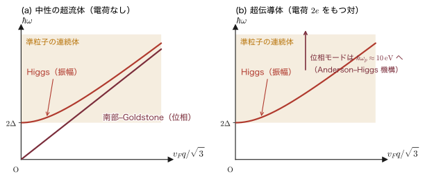
37.9.5 超伝導体の Higgs モード
超伝導体に残る唯一の秩序変数の集団励起が Higgs モードである．BCS 理論の時間依存の計算（Anderson 1958，Volkov–Kogan 1974 ほか）によると，その振動数は波数0で
$$ \hbar\omega_H=2\Delta $$で，有限の波数では式 \eqref{eq:37-Higgsdisp} のように分散する（Littlewood–Varma 1982．37.9.3項の時間依存 GL 理論の係数 $c_2$ をこの値で決めたものと同じ）．$2\Delta$ はちょうど準粒子の連続体の下端（対を壊すエネルギー）に一致する．そのため Higgs モードは準粒子の組に崩壊しやすく，振動はゆっくり（時間の $-1/2$ 乗で）減衰する．
なぜ：Higgs モードのエネルギーはなぜちょうど $2\Delta$ なのか
BCS 状態では，各 $\kk$ の対の状態は「空（振幅 $u_\kk$）」と「占有（振幅 $v_\kk$）」の重ね合わせであった（37.5.4項）．この2つの状態を2準位系とみなし，2準位系をスピンの上向き・下向きにたとえて Anderson の擬スピン と呼ぶ（Anderson 1958）．平均場 $\xi_\kk$ と $\Delta$ は擬スピンにかかる「有効磁場」で，その大きさは $h_\kk$ の2つの固有値の差 $2E_\kk$ である．$\Delta$ を少しゆすると，各擬スピンは有効磁場のまわりを角振動数 $2E_\kk/\hbar$ で歳差運動する（磁場中のスピンの歳差運動と同じ）．すべての $\kk$ の擬スピンが歳差運動の位相をそろえて動くと $\Delta$ の大きさが振動し，それが Higgs モードである．$2E_\kk$ のいちばん低い値は Fermi 面上の $2\Delta$ で，Fermi 面の近くの状態がもっとも強く寄与するので，集団の振動はその下端 $2\Delta$ に集まる．ギャップ方程式を時間に依存する形に拡張して線形化すると，ちょうど $\hbar\omega=2\Delta$ で解をもつことが確かめられる（シミュレーターの解説ページ §7）．
Higgs モードは長い間「見えないモード」であった．理由は2つある．(i) 振幅 $\eta$ は電荷も磁気モーメントももたず，GL の展開で光（$\bm A$）と結びつく項は $\bm A^2\eta$ の形（37.9.4項の導出のステップ1に現れる $(\psi_\infty+\eta)^2\bm A^2$ を展開した $2\psi_\infty\eta\bm A^2$）しかない．光の吸収のような 1次の応答では励起されない．(ii) 連続体の端にあるので，鋭いピークにならない．
観測は2つの道で行われた．
- CDW と共存する 2H-NbSe₂ の Raman 散乱：Sooryakumar と Klein（1980）は，電荷密度波（$T_{\rm CDW}\approx33\,\mathrm{K}$）と超伝導（$T_c\approx7\,\mathrm{K}$）が共存する 2H-NbSe₂ で，超伝導転移とともに $2\Delta$ 付近に新しい Raman ピークが現れることを見つけた．Littlewood と Varma（1981，1982）は，これを CDW の振幅モード（Raman 活性．第35章35.6節）と結合して見えるようになった超伝導の Higgs モードと解釈した．凝縮系で最初の Higgs モードの観測とされている．
- テラヘルツ分光：$2\Delta$ はテラヘルツの領域にある（例題37.16）．松永らは強いテラヘルツパルスで Nb₁₋ₓTiₓN 薄膜の超伝導を急に乱し（ポンプ），その後の光学応答（プローブ）にギャップが周波数 $2\Delta$ で振動する様子を観測した（2013）．続いて NbN 薄膜で，周波数 $\Omega$ のテラヘルツ光に対して $3\Omega$ の第3高調波が，$2\Omega=2\Delta(T)$ となる温度で共鳴的に強まることを示した（2014）．光の2乗が Higgs モードを駆動する（$\bm A^2\eta$ の結合）ことの直接の証拠である．
例題37.22 NbN の Higgs モードの振動数
NbN 薄膜の $T_c$ を $15\,\mathrm{K}$ とする．(1) BCS の比 $2\Delta_0=3.53k_BT_c$ で Higgs モードのエネルギーを求め，周波数に直せ．(2) NbN はやや強結合で $2\Delta_0/k_BT_c\approx4.2$ 程度である．このときの周波数を求めよ．(3) 第3高調波の共鳴が $2\Omega=2\Delta(T)$ で起こるとき，(2) の値で $T\to0$ での共鳴の入射周波数 $\Omega/2\pi$ はいくらか．
解答．(1) $k_BT_c=8.617\times10^{-2}\times15\,\mathrm{meV}=1.293\,\mathrm{meV}$．$2\Delta_0=3.53\times1.293\,\mathrm{meV}=4.56\,\mathrm{meV}$．$4.56\times0.2418\,\mathrm{THz}=1.10\,\mathrm{THz}$．
(2) $4.2\times1.293\,\mathrm{meV}=5.43\,\mathrm{meV}$，$5.43\times0.2418\,\mathrm{THz}=1.31\,\mathrm{THz}$．
(3) $\Omega/2\pi=1.31/2\,\mathrm{THz}=0.66\,\mathrm{THz}$．入射周波数を固定して温度を上げると $2\Delta(T)$ が下がり，$2\Delta(T)=2\Omega$ となる温度で共鳴が起こる．
∎ Higgs モードは約 1 THz（波長 0.3 mm 程度）にある．強いテラヘルツパルスの発生技術（2010年代）が，この観測を可能にした．
動かして確かめる：Higgs モードと南部–Goldstone モード，Anderson–Higgs 機構
シミュレーターの「Higgs モードと南部–Goldstone モード」のタブでは，メキシコ帽の上で玉が谷を横切って振動する Higgs モードと，谷に沿って回る位相モードを動かして見られる．有効電荷 $e^*$ を0（中性の凝縮体）にすると位相モードがギャップのない音波（図37.24(a)）として現れ，$e^*=2e$ にするとプラズマ振動数へ押し上げられて Higgs モードだけが残る（図37.24(b)）．第3高調波の共鳴曲線も描かれる（その意味は37.9.5項の本文を参照）．
37.9.6 超伝導・電荷密度波・構造相転移・素粒子の対応
振幅モードと位相モードの組は，対称性の破れがあるところに必ず現れる．本書の他の章の現象と，素粒子物理学の Higgs 機構を並べると，図37.25 と表37.6 のようになる．
| 超伝導（本章） | 電荷密度波（第35章 35.6節） | 構造相転移（第29章 29.3節，第30章 30.8節） | 素粒子（電弱理論） | |
|---|---|---|---|---|
| 秩序変数 | $\psi\propto\Delta$（複素数） | $\Delta\ee^{i\phi}$（複素数．$\phi$ は CDW の位置） | 原子変位のパターン $Q$（多くは実数） | Higgs 場（複素2成分） |
| 対称な相の不安定性 | $a\lt0$（帽子の中心が極大） | $2k_F$ フォノンの軟化（Kohn 異常） | 虚数振動数を有するフォノン | Higgs 場の質量項が負 |
| 振幅モード | Higgs モード（$2\Delta$） | 振幅モード（Raman 活性） | 低対称相の全対称フォノン | Higgs 粒子（2012年発見） |
| 位相モード | 南部–Goldstone → プラズモン | phason（ピン止めで有限の振動数） | 連続的な縮退があるときだけ | W・Z の縦成分に吸収 |
| ゲージ場 | 電磁場が質量を得る（Meissner） | なし | なし | W・Z が質量を得る |
歴史的には，この対応は超伝導から素粒子へと伝わった．南部陽一郎は BCS 理論のゲージ不変性を考察して，質量0の集団モードが対称性を回復しようとする励起として現れることを示し（1960），Bogoliubov 準粒子の方程式が Dirac 方程式と同じ形をしていることから，超伝導のギャップを核子の質量に，南部–Goldstone モードを π 中間子に対応させた（南部–Jona-Lasinio 模型，1961）．Goldstone（1961）はこれを一般の定理にした．Anderson（1963）が超伝導のプラズモンを例にゲージ場が質量を得る機構を指摘し，Englert と Brout，Higgs（1964）らが相対論的な場の理論で定式化した．これが電弱統一理論に取り入れられ，2012年に CERN の LHC で質量約 $125\,\mathrm{GeV}$ の Higgs 粒子が発見された．南部は2008年に，Englert と Higgs は2013年にノーベル物理学賞を受けている．素粒子側の詳しい説明は姉妹編『素粒子物理学入門』第13章13.9節にある．
なお，ギャップが2種類ある超伝導体（MgB₂ など，37.10節）では，2つの凝縮体の 相対的な位相 の振動という新しい集団モードが現れる（Leggett モード，1966年に予言）．全体の位相とは違い，相対的な位相の振動は電荷の総量の密度を変えないので，プラズマ振動数まで押し上げられずに低エネルギーに残る．
37.10 BCS を超えて — 強結合・非従来型・高温超伝導
BCS 理論は元素超伝導体の性質を驚くほどよく説明するが，その前提（弱い結合，等方的な $s$ 波の対，フォノンによる引力，Fermi 面の大きな金属）が成り立たない超伝導体も数多く見つかっている．ここでは，その主なものを概観する．どれも現在も研究が続く分野である．
37.10.1 強結合超伝導 — Eliashberg 理論
BCS は引力を「Fermi 面から $\hbar\omega_D$ 以内で一定の $-V$」と単純化した．実際の引力はフォノンの交換によるので，エネルギー（時間）に依存し（遅延），結合が強いと電子自身の質量も $1+\lambda_{\rm ep}$ 倍に重くなる（第29章29.5節の衣を着た電子）．Eliashberg（1960）は，フォノンのスペクトルに結合の重みを掛けた Eliashberg 関数 $\alpha^2F(\omega)$ を使って，これらを取り入れたギャップ方程式を作った（第29章29.8節）．Pb（$\lambda_{\rm ep}\approx1.1$〜$1.5$）や Hg の $2\Delta_0/k_BT_c=4.4$〜$4.6$，比熱の跳び $\Delta C/\gamma_{\rm S}T_c\approx2.7$（Pb）といった BCS からのずれは，この理論で定量的に説明される．$T_c$ の目安には McMillan の式が使われる（第29章29.8節）．今日では，第一原理計算で $\alpha^2F(\omega)$ を求め，Eliashberg 方程式や密度汎関数理論の拡張（超伝導密度汎関数理論）で $T_c$ を予言することができる．
37.10.2 MgB₂ — 2つのギャップ
2001年，秋光純らは，ありふれた化合物 MgB₂ が $39\,\mathrm{K}$ で超伝導になることを発見した．フォノン機構の超伝導体として当時の最高記録である．軽いホウ素の面内振動（高い振動数）と，ホウ素の面内の $\sigma$ 結合の電子との強い結合が鍵である．MgB₂ には性質の違う2組の Fermi 面（$\sigma$ バンドと $\pi$ バンド）があり，それぞれに大きさの違うギャップ（約 $7\,\mathrm{meV}$ と約 $2\,\mathrm{meV}$）が開く．1つの $\Delta$ で表す BCS の枠を超えた 多ギャップ超伝導 の代表例で，2つの凝縮体の相対的な位相の振動（Leggett モード，37.9.6項）の舞台にもなっている．
37.10.3 銅酸化物高温超伝導体 — $d$ 波の対
1986年，Bednorz と Müller は La–Ba–Cu–O で約 $30\,\mathrm{K}$ の超伝導を報告した．翌1987年には YBa₂Cu₃O₇ が約 $92\,\mathrm{K}$ と液体窒素の沸点を超え，Hg 系では常圧で約 $134\,\mathrm{K}$（高圧下で約 $164\,\mathrm{K}$）に達した（図37.4）．銅酸化物には次の特徴がある．
- 母物質は絶縁体：La₂CuO₄ などの母物質は，バンド理論では金属のはずなのに，電子間の強い反発で絶縁体になった反強磁性の 電荷移動型絶縁体 である（第28章28.7節．ドープした正孔が Cu のスピンと作る Zhang–Rice の一重項は 28.7.3 項）．そこに正孔（または電子）を少し加える（ドープする）と超伝導が現れる（図37.26(b)）．
- $d_{x^2-y^2}$ 波の対：ギャップは Fermi 面の上で一様でなく，$\Delta(\kk)\propto\cos k_xa-\cos k_ya$ のように方向によって符号を変え，対角線の方向では0になる（ノード）（図37.26(a)）．対の波動関数が原子の $d$ 軌道のような対称性をもつ．Josephson 接合や SQUID を使って秩序変数の 位相 を直接調べる実験（1993〜94年）で確かめられた．37.3節の「位相の観測できる差」がここで決定的な役割を果たした．
- 短いコヒーレンス長：$\xi$ は 1〜2 nm と短く（例題37.23），対の広がりの中の対の数は少ない．37.6節（例題37.12）の平均場近似がよく成り立つ元素超伝導体とは違い，ゆらぎの効果が大きい．
- 機構は未解決：同位体効果は小さく，$T_c$ はフォノン機構の目安よりはるかに高い．反強磁性のスピンのゆらぎ（その強さを決める交換相互作用 $J_{\rm ex}=4t^2/U$ は第28章 28.5.5 項）が引力を仲立ちするという考えが有力だが，2020年代の現在も決着していない．$T_c$ より高温で準粒子の状態密度がギャップのように減る 擬ギャップ の正体も議論が続いている．
例題37.23 高温超伝導体のコヒーレンス長と対の重なり
YBa₂Cu₃O₇ の面内の上部臨界磁場は $T\to0$ に外挿すると $100\,\mathrm{T}$ を超える（ここでは $150\,\mathrm{T}$ とする）．(1) 式 \eqref{eq:37-Bc2} から面内のコヒーレンス長 $\xi$ を求めよ．(2) 対の大きさの範囲（半径 $\xi$ の円板×厚さ $1\,\mathrm{nm}$ 程度）に含まれる Cu 原子の数を見積もれ（CuO₂ 面の Cu の間隔 $0.39\,\mathrm{nm}$，面の間隔は約 $1.2\,\mathrm{nm}$ に2枚）．(3) Al（$\xi_0=1.6\,\mu\mathrm{m}$）の対の体積に含まれる伝導電子の数（$n=1.8\times10^{29}\,\mathrm{m^{-3}}$）と比べよ．
解答．(1) $$\begin{aligned}\xi&=\sqrt{\Phi_0/2\pi B_{c2}}=\sqrt{2.0678\times10^{-15}/(2\pi\times150)}\,\mathrm{m}\\&=\sqrt{2.194\times10^{-18}}\,\mathrm{m}=1.5\times10^{-9}\,\mathrm{m}=1.5\,\mathrm{nm}\end{aligned}$$．
(2) 半径 $1.5\,\mathrm{nm}$ の円の面積は $\pi\times(1.5)^2=7.1\,\mathrm{nm^2}$．1枚の CuO₂ 面の Cu は $1/(0.39)^2=6.6\,\mathrm{nm^{-2}}$ なので，1枚あたり約47個．厚さ $1\,\mathrm{nm}$ の中の面はおよそ2枚なので，全部で約100個．
(3) Al では $$\frac{4\pi}{3}\xi_0^3n=4.19\times(1.6\times10^{-6})^3\times1.8\times10^{29}=4.19\times4.10\times10^{-18}\times1.8\times10^{29}=3.1\times10^{12}$$ 個．
∎ 銅酸化物の対は原子100個程度の範囲に収まる「小さな対」で，Al の $10^{12}$ 個と比べると桁違いに小さい．対どうしの重なりが少ないので，平均場近似の前提（37.6.2項）が弱まり，位相のゆらぎが重要になる．BCS 極限から BEC 極限への移り変わり（次項）の途中にある物質とも見られている．
37.10.4 鉄系超伝導体と重い電子系
2008年，細野秀雄らは LaFeAsO₁₋ₓFₓ で $26\,\mathrm{K}$ の超伝導を発見した．鉄を含む層状化合物で，すぐに類似物質で $55\,\mathrm{K}$ まで上がった．磁性元素の鉄が超伝導の主役になるという驚きがあった．銅酸化物と同じく母物質は反強磁性（ただし金属）で，複数の Fermi 面の間でギャップの符号が変わる $s_\pm$ 波の対が有力視されている．また，Ce や U を含む 重い電子系（第28章28.9節）では，有効質量が自由電子の数百倍の準粒子が超伝導になる（CeCu₂Si₂，1979年．$T_c$ は 1 K 以下）．これらは電子間の反発やスピンのゆらぎが対を作る「非従来型」の超伝導の候補である．
37.10.5 BCS–BEC クロスオーバー
BCS の対は互いに大きく重なり合っている（37.5.5項）．引力を強くしていくと対は小さくなり，最後には実空間で束縛した「分子」が Bose–Einstein 凝縮する状態に連続的に移り変わる（Eagles 1969，Leggett 1980，Nozières–Schmitt-Rink 1985）．BCS 極限では対ができる温度と凝縮する温度が同じだが，BEC 側では対は高温でできて低温で凝縮し，その間に「対はあるが位相がそろっていない」領域が現れる．冷却原子の Fermi 気体では，相互作用の強さを外部磁場で変えてこのクロスオーバーが実現された．銅酸化物の短いコヒーレンス長と擬ギャップを，この移り変わりの途中として理解しようとする考えもある．対の大きさと「重なった泡」の絵は，シミュレーター「対の大きさと BCS–BEC」（解説 §5）で動かして見られる．
37.10.6 高圧下の水素化物と，室温超伝導の主張の検証
BCS の式 \eqref{eq:37-Tc} は $T_c\propto\omega_D$ だから，最も軽い元素である水素の格子は振動数が高く，高い $T_c$ が期待される（Ashcroft，1968年）．2015年，Drozdov と Eremets らは，約 $150\,\mathrm{GPa}$ に圧縮した硫化水素（H₃S）で約 $200\,\mathrm{K}$ の超伝導を報告した．この物質は第一原理計算で事前に予言されていたもので，同位体効果（重水素で $T_c$ が下がる）からフォノン機構であることが確かめられている．2019年には LaH₁₀ で約 $170\,\mathrm{GPa}$ のもと約 $250\,\mathrm{K}$ が報告された．フォノン機構でも 200 K を超える $T_c$ が可能なことが示されたが，超高圧が必要で，常圧で安定な物質の探索が続いている．
一方で，室温超伝導の主張 には，再現されずに否定された例がある．2020年に報告された炭素質硫黄水素化物の室温超伝導の論文は，データの扱いに疑問が呈され，2022年に掲載誌から撤回された．2023年に常圧の室温超伝導体として報じられた LK-99（銅を添加した鉛リン酸塩）は，多くの追試の結果，超伝導体ではなく，抵抗の急な変化は不純物の Cu₂S の構造相転移によるものと結論された．超伝導と認めるには，ゼロ抵抗，Meissner 効果（磁場の排除），比熱の跳びなど 独立な複数の証拠（37.1節）と，他のグループによる再現 が欠かせない．本章で学んだ実験事実の一つ一つは，そのための判定基準でもある．
37.10.7 応用
- 超伝導磁石：NbTi（$\mu_0H_{c2}\approx14\,\mathrm{T}$）や Nb₃Sn（約 $30\,\mathrm{T}$）の線材で，病院の MRI（1.5〜3 T），加速器（LHC の約 8 T），核融合実験装置，NMR 分析装置の強い磁場を作る．渦糸のピン止め（例題37.8）が電流を流すための鍵である．
- SQUID：$\Phi_0$ の一部を検出する磁気センサー（37.4.7項）．脳磁図，地質探査，物性測定の磁化測定装置に使われる．
- Josephson 電圧標準：周波数から電圧を決める（例題37.10）．
- 超伝導量子ビット：Josephson 接合の非線形性を使って2つの量子状態を作り，量子計算機の素子として開発が進んでいる．
- 送電・輸送：液体窒素で冷やせる銅酸化物の線材による送電ケーブル，超伝導磁石で車体を浮上させる磁気浮上式鉄道．高温超伝導体の浮上の実験は，シミュレーター「YBCO」で見られる．
37.11 まとめと演習
37.11.1 まとめ
- 超伝導の実験事実：ゼロ抵抗と永久電流，Meissner 効果（磁場の中で冷やしても磁場を排除する．完全導体と違い熱力学的な相），臨界磁場 $H_c(T)\approx H_c(0)[1-(T/T_c)^2]$，第1種と第2種，比熱の跳びと低温の $\ee^{-\Delta/k_BT}$，同位体効果 $T_c\propto M^{-1/2}$，磁束の量子化 $\Phi_0=h/2e$，トンネル分光のギャップ．
- London 方程式 $\nabla\times\bm j_s=-(n_se^2/m)\BB$ と Maxwell 方程式から $\nabla^2\BB=\BB/\lambda_L^2$，$\lambda_L=\sqrt{m/\mu_0n_se^2}$（数十 nm）．$\bm j_s=-(n_se^2/m)\bm A$ は「波動関数が磁場に対して硬い」ことを表す．
- 擬波動関数（巨視的波動関数）$\psi=\abs\psi\ee^{i\theta}$ は1電子の波動関数ではなく，Landau 理論の秩序変数である．$\abs\psi^2$ は対の密度，$\nabla\theta$ は超伝導電流を与える．巨視的な数の対が同じ位相をもつ（巨視的な量子コヒーレンス）ことから，磁束の量子化・Josephson 効果・永久電流が出る．
- GL 自由エネルギー $$f=f_n+a\abs\psi^2+\frac b2\abs\psi^4+\frac{1}{2m^*}\abs{(-i\hbar\nabla-e^*\bm A)\psi}^2+\frac{B^2}{2\mu_0}$$ の形は U(1) 対称性とゲージ不変性で決まる．$a\lt0$ でメキシコ帽，$\abs{\psi_\infty}^2=-a/b$，$\mu_0H_c^2/2=a^2/2b$，比熱の跳び $T_ca_0^2/b$．
- 変分から GL 方程式と超伝導電流の式が出る．2つの長さ $\xi(T)=\sqrt{\hbar^2/2m^*\abs a}$ と $\lambda(T)=\sqrt{m^*b/\mu_0e^{*2}\abs a}$ はともに $(1-T/T_c)^{-1/2}$．$\kappa_{\rm GL}=\lambda/\xi\lessgtr1/\sqrt2$ で第1種・第2種が分かれ，第2種では渦糸が入り，$B_{c2}=\Phi_0/2\pi\xi^2$．
- Josephson 効果 $I=I_c\sin\delta$，$\dd\delta/\dd t=2eV/\hbar$（$483.6\,\mathrm{GHz/mV}$）は，2つの巨視的波動関数の結合方程式から導かれる．
- BCS の還元ハミルトニアンは対 $(\kk\uparrow,-\kk\downarrow)$ の散乱だけを残す．BCS 基底状態 $\prod(u_\kk+v_\kk c^\dagger_{\kk\uparrow}c^\dagger_{-\kk\downarrow})\ket0$ は粒子数が確定せず，すべての対が同じ位相をもつ．
- 平均場近似（Weiss の分子場と同じ発想）で $\Delta=V\sum\langle c_{-\kk\downarrow}c_{\kk\uparrow}\rangle$ を定義すると，$H_{\rm MF}$ は $2\times2$ 行列の問題になり，Bogoliubov 変換で $E_\kk=\sqrt{\xi_\kk^2+\Delta^2}$，$v_\kk^2=\frac12(1-\xi_\kk/E_\kk)$ を得る．準粒子は電子と正孔の重ね合わせで，ギャップ $\Delta$ をもつ．
- 自己無撞着条件からギャップ方程式 $\frac{1}{N(0)V}=\int_0^{\hbar\omega_D}\frac{\dd\xi}{E}\tanh\frac{E}{2k_BT}$．$T=0$ で $\Delta_0\approx2\hbar\omega_D\ee^{-1/N(0)V}$，$\Delta\to0$ で $k_BT_c=\frac{2\ee^{\gamma_E}}{\pi}\hbar\omega_D\ee^{-1/N(0)V}=1.13\hbar\omega_D\ee^{-1/N(0)V}$．$2\Delta_0/k_BT_c=3.53$，$\Delta(T)\approx1.74\Delta_0\sqrt{1-T/T_c}$，$\Delta C/\gamma_{\rm S}T_c=1.43$．第35章の Peierls 転移の $T_P$ と同じ計算である．
- Gor'kov：$\psi\propto\Delta$，$e^*=2e$，$a=N(0)\ln(T/T_c)$，$b=7\zeta(3)N(0)/8\pi^2(k_BT_c)^2$．擬波動関数は対の重心運動の波動関数であり，対の凝縮の振幅を粗く見たものである．
- U(1) 対称性の自発的な破れから，振幅の振動（Higgs モード，$2\Delta$）と位相の振動（南部–Goldstone モード）が生じる．電荷をもつ超伝導体では位相が電磁場に吸収され，電磁場が質量を得る（Anderson–Higgs 機構＝Meissner 効果）．素粒子の Higgs 機構の物性版である．
- 強結合（Eliashberg），多ギャップ（MgB₂），$d$ 波の銅酸化物，鉄系，BCS–BEC クロスオーバー，高圧水素化物と，超伝導の研究は BCS の枠を超えて広がっている．新しい超伝導の主張には複数の独立な証拠と再現が必要である．
37.11.2 演習問題
演習37.1 薄い板の中の磁場
厚さ $d$ の超伝導体の板（$-d/2\lt x\lt d/2$）に，表面に平行な磁場 $B_0$ を両側からかける．(1) London 方程式を解いて $B(x)$ を求めよ．(2) 板の中の平均の磁場 $\langle B\rangle/B_0$ を求め，$d=2\lambda_L$，$d=10\lambda_L$ の値を計算せよ．(3) 薄い膜の臨界磁場が厚い試料より大きくなる理由を，(2) の結果から説明せよ．
ヒント：$B''=B/\lambda_L^2$ の偶関数の解 $B=C\cosh(x/\lambda_L)$ を選ぶ．$B(x)=B_0\cosh(x/\lambda_L)/\cosh(d/2\lambda_L)$，$\langle B\rangle/B_0=(2\lambda_L/d)\tanh(d/2\lambda_L)$ で，$d=2\lambda_L$ では 0.76，$d=10\lambda_L$ では 0.20．薄い膜は磁場をあまり押し出さないので，磁場を排除する仕事が小さい．
演習37.2 実測値から GL の係数を決める（Sn）
Sn の $T_c=3.72\,\mathrm{K}$，$\mu_0H_c(0)=30.9\,\mathrm{mT}$，$\lambda(0)=34\,\mathrm{nm}$ を使い，GL の関係を $T=0$ まで線形に外挿して（$m^*=2m$，$e^*=2e$），(1) 対の密度 $\abs{\psi_\infty}^2$，(2) $a(0)$ と $b$（$\mu\mathrm{eV}$ と $\mu\mathrm{eV\,nm^3}$ の単位で），(3) $\xi(0)$ と $\kappa_{\rm GL}$ を求め，種別を判定せよ．
ヒント：$\abs{\psi_\infty}^2=m^*/\mu_0e^{*2}\lambda^2$，$a=-\mu_0H_c^2/\abs{\psi_\infty}^2$，$b=\mu_0H_c^2/\abs{\psi_\infty}^4$，$\xi=\Phi_0/(2\sqrt2\,\pi\lambda\mu_0H_c)$．答えは $1.22\times10^{28}\,\mathrm{m^{-3}}$，$a(0)=-0.39\,\mu\mathrm{eV}$，$b=0.032\,\mu\mathrm{eV\,nm^3}$，$\xi(0)=222\,\mathrm{nm}$，$\kappa_{\rm GL}=0.15$（第1種）．
演習37.3 磁束の量子化とフラクソイド
(1) 直径 $1\,\mu\mathrm{m}$ と $10\,\mu\mathrm{m}$ の超伝導リングの穴を磁束量子1本が貫くときの磁場を求めよ．(2) 壁の薄いリングでは，式 \eqref{eq:37-jtheta} を1周積分すると，量子化されるのは $\Phi+\frac{m^*}{e^{*2}\abs\psi^2}\oint\bm j_s\cdot\dd\bm l$ であることを示せ．(3) 1961年の実験が細い円筒（直径 $10\,\mu\mathrm{m}$ 程度）を使った理由を (1) から説明せよ．
ヒント：(1) $B=\Phi_0/\pi(d/2)^2$ で $2.6\,\mathrm{mT}$ と $26\,\mu\mathrm{T}$．(2) $\frac{m^*}{e^{*2}\abs\psi^2}\bm j_s=\frac{\hbar}{e^*}\nabla\theta-\bm A$ を1周積分し，$\oint\nabla\theta\cdot\dd\bm l=2\pi n$ を使う．(3) 磁束量子が地磁気（約 $50\,\mu\mathrm{T}$）程度の扱いやすい磁場に対応し，数本の量子の段を測れる大きさだから．
演習37.4 SQUID の干渉
同じ臨界電流 $I_c$ の2つの Josephson 接合 A，B を含む超伝導リングを考える（リングの自己インダクタンスは無視する）．(1) リングを貫く磁束を $\Phi$ とすると，2つの接合の位相差の差が $\delta_A-\delta_B=2\pi\Phi/\Phi_0$ となることを，37.4.5項の議論から説明せよ．(2) 全電流 $I=I_c(\sin\delta_A+\sin\delta_B)$ の最大値が $2I_c\abs{\cos(\pi\Phi/\Phi_0)}$ であることを示せ．(3) リングの面積が $1\,\mathrm{mm^2}$ のとき，最大電流の振動の周期は磁場でいくらか．
ヒント：(2) 和積の公式 $\sin\alpha+\sin\beta=2\sin\frac{\alpha+\beta}{2}\cos\frac{\alpha-\beta}{2}$ で，$\frac{\alpha+\beta}{2}$ は自由に選べる．(3) $\Phi_0/1\,\mathrm{mm^2}=2.07\times10^{-9}\,\mathrm{T}$．周期の100分の1を読めば $10^{-11}\,\mathrm{T}$ の桁の磁場がわかる．
演習37.5 BCS 状態の変分計算
BCS 状態 \eqref{eq:37-BCSstate} を試行関数として（$u_\kk=\cos\vartheta_\kk$，$v_\kk=\sin\vartheta_\kk$），(1) $\langle H\rangle=\sum_\kk2\xi_\kk v_\kk^2-V\left(\sum_\kk u_\kk v_\kk\right)^2$ を示せ（$\kk\ne\kk'$ の項だけを残し，$\kk=\kk'$ の小さな項は無視する）．(2) $\vartheta_\kk$ について最小化すると，$\Delta\equiv V\sum u_\kk v_\kk$ として $\tan2\vartheta_\kk=\Delta/\xi_\kk$ となり，$T=0$ のギャップ方程式 $1=V\sum_\kk1/2E_\kk$ が得られることを示せ．(3) 最小値から凝縮エネルギー $-\frac12N(0)\Delta_0^2$ を確かめよ．
ヒント：(1) $\langle\hat b^\dagger_\kk\hat b_{\kk'}\rangle=u_\kk v_\kk u_{\kk'}v_{\kk'}$（$\kk\ne\kk'$）．(2) $\partial\langle H\rangle/\partial\vartheta_\kk=2\xi_\kk\sin2\vartheta_\kk-\Delta\cdot2\cos2\vartheta_\kk=0$．平均場の Bogoliubov 変換と同じ $u_\kk$，$v_\kk$ が得られる．BCS の原論文はこの変分法で解いた．
演習37.6 転移温度の式の数値的な確認
(1) $\int_0^\infty\ln x\,\mathrm{sech}^2x\,\dd x$ を数値積分し（$x=10^{-6}$ から $30$ まで，対数の目盛りで刻むとよい），$-\ln(4\ee^{\gamma_E}/\pi)$ と比べよ．(2) Nb の $\Theta_D=275\,\mathrm{K}$，$N(0)V=0.286$ から式 \eqref{eq:37-Tc} で $T_c$ を求めよ．(3) $T=0.95T_c$ での $\Delta/\Delta_0$ を近似式 \eqref{eq:37-DeltaTc} で求め，数値解 0.380 と比べよ．
ヒント：(1) $-0.8188$．$\ln x$ は $x\to0$ で発散するが積分可能（$\int_0^\epsilon\ln x\,\dd x=\epsilon\ln\epsilon-\epsilon\to0$）．(2) $1.134\times275\times\ee^{-3.497}\,\mathrm{K}=9.45\,\mathrm{K}$（実測 $9.50\,\mathrm{K}$）．(3) $1.737\sqrt{0.05}=0.388$，2% の差．
演習37.7 Anderson–Higgs 機構の数の勘定と「光子の質量」
(1) 電磁場（横波2成分）と複素数の秩序変数（実部・虚部の2成分）が，超伝導体の中では「質量をもつ電磁場（3成分）」と「Higgs モード（1成分）」になることを，37.9.4項の導出に沿って説明せよ．(2) Al（$n=1.81\times10^{29}\,\mathrm{m^{-3}}$）のプラズマ振動数 $\hbar\omega_p=\hbar\sqrt{ne^2/\epsilon_0m}$ を求め，$2\Delta_0=0.35\,\mathrm{meV}$ と比べよ．(3) 式 \eqref{eq:37-AHiggs} は，質量 $m_\gamma$ の場の静的な方程式 $\nabla^2\bm A=(m_\gamma c/\hbar)^2\bm A$ と同じ形である．Pb（$\lambda=37\,\mathrm{nm}$）の中の「光子の質量」$m_\gamma c^2=\hbar c/\lambda$ を eV で求めよ．
ヒント：(1) 位相 $\theta$ がゲージ変換で $\bm A$ の縦成分に移る．(2) $15.8\,\mathrm{eV}$，$2\Delta_0$ の約 $4.6\times10^4$ 倍．(3) $\hbar c=197.3\,\mathrm{eV\,nm}$ より $5.3\,\mathrm{eV}$．W ボソン（約 $80\,\mathrm{GeV}$）では届く距離が $\hbar c/m_Wc^2\approx2.5\times10^{-18}\,\mathrm{m}$ になり，弱い力が短距離力である理由と同じ構造である．
参考文献
- M. Tinkham, Introduction to Superconductivity, 2nd ed. (McGraw-Hill, 1996). —— 本章全体，とくに 37.2〜37.4節の London・GL 理論と 37.7節の BCS の帰結の標準的な参考書．
- P. G. de Gennes, Superconductivity of Metals and Alloys (Benjamin, 1966). —— 37.4節の界面エネルギー・渦糸，37.6節の平均場（自己無撞着場）の扱い．
- J. R. Schrieffer, Theory of Superconductivity (Benjamin, 1964). —— 37.5節の BCS 状態の粒子数と位相，37.6節の Bogoliubov 変換．
- C. Kittel, Introduction to Solid State Physics, 8th ed. (Wiley, 2005), Chap. 10. —— 表37.1・表37.4 の元素の $\mu_0H_c(0)$，$2\Delta_0/k_BT_c$，同位体効果の値．
- N. W. Ashcroft and N. D. Mermin, Solid State Physics (Saunders, 1976), Chap. 34. —— 37.1節の実験事実の整理，自由電子の $n$，$v_F$．
- H. Kamerlingh Onnes, Commun. Phys. Lab. Univ. Leiden 120b (1911). —— 37.1.1項のゼロ抵抗の発見．
- W. Meissner and R. Ochsenfeld, Naturwissenschaften 21, 787 (1933). —— 37.1.2項の Meissner 効果．
- F. London and H. London, Proc. R. Soc. A 149, 71 (1935). —— 37.2節の London 方程式．
- V. L. Ginzburg and L. D. Landau, Zh. Eksp. Teor. Fiz. 20, 1064 (1950). —— 37.3〜37.4節の GL 理論．
- A. A. Abrikosov, Sov. Phys. JETP 5, 1174 (1957). —— 37.4.4項の $\kappa_{\rm GL}=1/\sqrt2$ と 37.4.6項の渦糸格子．
- B. S. Deaver and W. M. Fairbank, Phys. Rev. Lett. 7, 43 (1961)；R. Doll and M. Näbauer, Phys. Rev. Lett. 7, 51 (1961). —— 37.1.6項の磁束の量子化 $h/2e$．
- B. D. Josephson, Phys. Lett. 1, 251 (1962). —— 37.4.7項の Josephson 効果．
- I. Giaever, Phys. Rev. Lett. 5, 147 (1960). —— 37.1.7項・37.7.6項のトンネル分光．
- E. Maxwell, Phys. Rev. 78, 477 (1950)；C. A. Reynolds, B. Serin, W. H. Wright, and L. B. Nesbitt, Phys. Rev. 78, 487 (1950). —— 37.1.5項と例題37.17 の同位体効果．
- L. N. Cooper, Phys. Rev. 104, 1189 (1956). —— 37.5.1項の Cooper 問題（第29章）．
- J. Bardeen, L. N. Cooper, and J. R. Schrieffer, Phys. Rev. 108, 1175 (1957). —— 37.5〜37.7節の BCS 理論，$N(0)V$ の逆算．
- N. N. Bogoliubov, Sov. Phys. JETP 7, 41 (1958)；J. G. Valatin, Nuovo Cimento 7, 843 (1958). —— 37.6.5項の Bogoliubov 変換．
- L. P. Gor'kov, Sov. Phys. JETP 9, 1364 (1959). —— 37.8節の GL 理論の微視的な導出．
- G. M. Eliashberg, Sov. Phys. JETP 11, 696 (1960). —— 37.10.1項の強結合理論．
- Y. Nambu, Phys. Rev. 117, 648 (1960)；Y. Nambu and G. Jona-Lasinio, Phys. Rev. 122, 345 (1961). —— 37.9節の南部–Goldstone モードと素粒子への展開．
- J. Goldstone, Nuovo Cimento 19, 154 (1961). —— 37.9.2項の Goldstone の定理．
- P. W. Anderson, Phys. Rev. 112, 1900 (1958)；Phys. Rev. 130, 439 (1963). —— 37.9.4〜37.9.5項の Higgs モードと Anderson–Higgs 機構．
- P. W. Higgs, Phys. Rev. Lett. 13, 508 (1964)；F. Englert and R. Brout, Phys. Rev. Lett. 13, 321 (1964). —— 37.9.6項の Higgs 機構．
- R. Sooryakumar and M. V. Klein, Phys. Rev. Lett. 45, 660 (1980)；P. B. Littlewood and C. M. Varma, Phys. Rev. B 26, 4883 (1982). —— 37.9.5項の 2H-NbSe₂ の Higgs モード．
- R. Matsunaga et al., Phys. Rev. Lett. 111, 057002 (2013)；R. Matsunaga et al., Science 345, 1145 (2014). —— 37.9.5項のテラヘルツ分光による Higgs モードの観測．
- D. Pekker and C. M. Varma, Annu. Rev. Condens. Matter Phys. 6, 269 (2015)；R. Shimano and N. Tsuji, Annu. Rev. Condens. Matter Phys. 11, 103 (2020). —— 37.9節の振幅モードの総説．
- J. G. Bednorz and K. A. Müller, Z. Phys. B 64, 189 (1986)；J. Nagamatsu, N. Nakagawa, T. Muranaka, Y. Zenitani, and J. Akimitsu, Nature 410, 63 (2001)；Y. Kamihara, T. Watanabe, M. Hirano, and H. Hosono, J. Am. Chem. Soc. 130, 3296 (2008). —— 37.10節の銅酸化物・MgB₂・鉄系の発見．
- A. P. Drozdov et al., Nature 525, 73 (2015)；A. P. Drozdov et al., Nature 569, 528 (2019). —— 37.10.6項の高圧下の水素化物．
- G. A. Webb, F. Marsiglio, and J. E. Hirsch, Physica C 514, 17 (2015). —— 表37.1・表37.4 の Debye 温度．
- 超伝導シミュレーターの解説ページ（superconductivity-derivation.html）と Cooper 対シミュレーターの解説ページ（cooper-pair-derivation.html）．—— 本章の GL 係数・元素の表・Higgs モードの分散・BCS–BEC クロスオーバーの数値と記号をそろえた．